PoC 1 installation guide
What this guide covers. How to build the StarTech 4POSTRACK42 rack U by U (40 rack items), how to set out the bench table (31 items), and how to connect every one of the 184 cables port to port, in 29 steps. Then the switch, PDU and DC port maps, the install checks and the power-up order, and the t0 event procedure.
| Drawing | UNITY6G-POC1-BP |
| Date | 2026-11-25 · status TENTATIVE |
| Interactive twin | poc1_twin.html (same folder; opens offline in a browser: search any cable or device ID, follow the same steps with the slider) |
| Pictures | poc1_renders/ |
| Tables | poc1_cable_schedule.md, poc1_parts_list.csv |

Contents
1 How to read this guide
Each step names the parts and cables by ID. The same IDs are printed in the tables, written on the cable tags, and searchable in the interactive twin.
- Rack tipping. Lock the castors or fit the stabiliser feet before you load the rack, and load from the bottom up. The 8 servers at U17-U25 (up to 823 mm deep) make it top-heavy: never pull out more than one unit at a time.
- Earth first. Bond the rack earth stud to the building earth (6 mm² green/yellow lead, ring lug) before any device goes in; clip the ESD wrist strap to the rack earth.
- Lifting. The rack servers (two people, on their rails); the IP-50 radios (about 6 kg each, estimate).
- Two DC systems. DC-DIST is +48 V (node adaptors); DC-DIST2 is -48 V with its positive pole earthed (radios). Both use the same Belden cable: tag -48 V cables blue and +48 V cables red. Breakers OFF and fuses out while you wire.
- Passive PoE. The RJ45 of every DC/PoE adaptor (the Q-cables, Q001-Q007) carries 48 V: plug it only into the node's ETH1, never into a switch, PC or laptop.
- RF. Never power a node or radio while one of its SMA tiles or a waveguide flange is open: close the chain or fit a 50-ohm load first.
- Lasers. The SFP+ SR optics are Class 1 lasers: keep the dust caps on until you mate, never look into a fibre end, clean every LC end (one-click cleaner) before you plug it.
- GNSS lead. The roof antenna lead enters through a surge arrestor that must be earthed at the building entry (site work).
Rules for every step
- Tag both ends of every cable with its ID before you route it. Use the label printer cartridges in the parts list.
- ESD wrist strap to the rack earth whenever you touch a Spider box, pad, SFP or radio. Torque every SMA to 8 in-lb (0.9 N·m) with the SMA torque wrench. Finger-tight is not enough and more damages the connector.
- Rack units count from the bottom: U1 is the lowest unit. A device marked U23-U24 takes two units. The U numbers are printed on the front-left post in the pictures.
- Front is the operator side (Spider-box SMA tiles, the splitter tray and the pad stacks). Rear carries the PDU outlets, DC terminals and the node ETH / SFP ports. Every picture has a badge in its top-left corner: FRONT VIEW, REAR VIEW (seen from behind: the rack's left and right swap) or VIEW FROM ABOVE. "Left" and "right" in the tables are always as seen from the FRONT.
- Length is the stock length to fit; "route" is the length the twin measured along the cable path. Dress the slack in the cable manager.
- Terminate every unused SMA output with a 50-ohm load (ANNE-50+): GNSS-SPL.out8; every Spider tile is in use.
- Power stays off until the last step: PDUs unplugged, breakers and fuses OFF.
How the pictures work
- Each step picture shows the bench as it is after that step. Items fitted in this step are bright with an orange outline and an ID tag; items from earlier steps are pale; later items are not shown.
- Cables are drawn in their class colour along the route the twin planned; DC, GNSS and WG cables are also banded. Small labels give the cable ID.
- Close-ups of a connector panel are straight on with the cables left out: every port carries a tag (port, cable ID, far end) on a leader line.
- Close-ups of the Spider boxes are straight on: module (M1-M4), sector (e.g. HUB.W) and tile (T1-T4) are labelled.
- Every picture carries the TENTATIVE mark: the scene is a planning model, not a construction drawing.
Cable colours and ID scheme
| Class / colour | ID | What it carries | Cables | Typical part | Step |
|---|---|---|---|---|---|
| AC | A001… | AC mains | 30 | P004-010, P004-006 | 14 |
| DC | D001… | DC power | 21 | Belden 8461, bus link | 12 |
| POE | Q001… | PoE (power only) to node ETH1 | 7 | STP6X2MBU, STP6X1MBU | 13 |
| FIB | F001… | data to SW-DATA | 28 | AXC763-10000S, FZ2ERLNLNSNM005 | 15 |
| ETH | E001… | management to SW-OOB | 19 | STP6X2MBU, STP6X3MBU | 16 |
| RF | R001… | IF coax (SMA) | 44 | CBL-3FT-SMSM+, CBL-4FT-SMSM+ | 19, 20, 21, 22, 23, 24, 25, 26, 27 |
| GNSS | G001… | GNSS coax | 9 | RG-316 SMA 2.5 m, RG-316 SMA 2 m | 17 |
| WG | W001… | IP-50 chain | 12 | PEWCA1003, CBL-1FT-SMSM+ | 28 |
| AUX | X001… | operator station (video, USB) | 2 | video cable, keyboard + mouse | 18 |
| PE | B001… | earth bonding (green/yellow) | 12 | PE 2.5 mm2, PE 6 mm2 | 2, 12, 17 |
Cable IDs are a class letter and a number: A = AC mains, D = DC power, Q = PoE, F = data to SW-DATA, E = management to SW-OOB, R = IF coax, G = GNSS coax, W = IP-50 conducted chain, X = operator station, B = earth bonding. The colours are a print palette (DC, GNSS and WG also banded) shared with the twin; the cable schedule files keep the scene colours. Port IDs are DEVICE.PORT: PAD-HUB-W1.t1.in is the IN end of pad stack PAD-HUB-W1.t1 (link HUB-W1, tile path 1), screwed onto SB1.M1.T1; SB2.M1.T1 is Spider box SB2, module M1, tile 1.
Confidence of each item
estimate size or position estimated (photos, stand-in model). likely from the datasheet of the probable model. confirmed known part and size.
Fixed pads (no programmable attenuators)
Every IF tile path carries a pad stack: one or two Mini-Circuits SMA pads screwed together, tile end first, named PAD-<link>.t<n> (link and tile path n = 1-4); the IP-50 hops carry WGP-<hop>-A / -B on their waveguide transitions. 36 IF stacks and 8 IP-50 stacks. A stack has no cable on its IN end: it is screwed straight onto a Spider tile, an IP-50 stack onto its transition (the tables say "IN on ..."); its cable starts on OUT. The value of every stack is in the step that fits it and in the pad schedule (section 5). In the pictures the stacks are amber cylinders, one shade per pad.
Which end goes on. A BW-S pad is SMA male at one end (the coupling nut) and SMA female at the other. Its male nut screws onto the female jack of the tile; the second pad's male nut onto the first pad's female end; the cable's male plug onto the stack's female OUT. Electrically a pad works either way round, so only the genders decide which end goes on. Read the value printed on each pad before you fit it: the larger pad goes on the tile.
Backing-wrench rule (every SMA joint in this guide). The torque wrench turns only the male coupling nut, to 8 in-lb (0.9 N m); the backing wrench holds the body of the part that nut belongs to (the pad's body, or the cable plug's body) so it cannot turn with the nut; never a wrench on a splitter or on a tile jack (if a tile jack turns, stop: its panel nut is loose).
Links go down at t0 because whole devices lose power at their switched PDU outlets; the bridge links are held down by Terragraph ignition until MARL engages them (at node level after t0: event procedure). Nothing RF is changed during a run.
2 Overview
Rack front elevation

Read from the top. Every U is listed; consecutive blanking panels share a row. Rack: StarTech 4POSTRACK42, 42U, rail-to-rail depth 900 mm; U1 starts 120 mm above the floor.
| U | Device | Part |
|---|---|---|
| U29-U42 | blanking panels | AR8136BLK |
| U28 | GNSS-SPL | RMALDCBS1X8 |
| U27 | SW-DATA | Netgear M4350-24F4V |
| U26 | SW-OOB | Netgear M4250-26G4XF-PoE+ (GSM4230PX) |
| U25 | SRV-E2E | 1U rack server (lab) |
| U23-U24 | SRV-DPIR | 2U rack server (lab) |
| U22 | HOST-W1 | 1U rack server, 10G SFP+ NIC |
| U21 | HOST-W2 | 1U rack server, 10G SFP+ NIC |
| U20 | HOST-E1 | 1U rack server, 10G SFP+ NIC |
| U19 | HOST-E2 | 1U rack server, 10G SFP+ NIC |
| U18 | HOST-S | 1U rack server, 10G SFP+ NIC |
| U17 | HOST-N | 1U rack server, 10G SFP+ NIC |
| U15-U16 | AGENTS | mini PCs on a 1U shelf, 2U clearance |
| U14 | CM | Panduit NCMHF1 |
| U13 | SB1 | GTS003 · serial SF06000007 (assumed) · TG polarity odd (E2E setting) |
| U12 | SB2 | GTST002B · serial SF06000001 · TG polarity hybrid (E2E setting) |
| U11 | SB3 | GTST003 · serial SF06000058 · TG polarity even/odd (E2E setting) |
| U10 | SB4 | GTS003 · serial SF06000031 (assumed) · TG polarity even (E2E setting) |
| U9 | SPL-TRAY | 8 x 2-way splitters ZN2PD-02183-S+ |
| U8 | PA-SHELF | Siklu EH-PoE-DC-Adaptor-10 + AC PoE injector on a shelf |
| U7 | DC-DIST | Eaton DCD1M |
| U6 | DC-RECT | Mean Well RCP-1UI + 2 x RCP-1000-48 |
| U5 | DC-DIST2 | Westell N250110-N-0803, GMT fuses |
| U4 | DC-RECT2 | RCP-1UI + RCP-1000-48, wired -48 V |
| U3 | PDU-A | Raritan PX3-5260R class (1U, 12 x C13, switched, 16 A) |
| U2 | PDU-B | Raritan PX3-5260R class (1U, 12 x C13, switched, 16 A) |
| U1 | PDU-C | Raritan PX3-5260R class (1U, 12 x C13, switched, 16 A) |
Rack front elevation, enlarged
The same elevation at twice the scale, seen from the front; U numbers on the left post. No cables; every unit labelled beside the rack. The PDUs sit on the REAR posts and, seen in perspective, look higher than their U: the tag gives the true U.


Rack rear

Most cabling happens at the rear: PDU outlets, DC terminals, the node power (ETH1), data (SFP+) and GNSS ports. Connectors that face the rear, per rack item (counting the parts on its shelf):
| U | Device | Rear connectors | Used |
|---|---|---|---|
| U28 | GNSS-SPL | 9 SMA, 1 C14 | 9 / 10 |
| U27 | SW-DATA | 1 C14 | 1 / 1 |
| U26 | SW-OOB | 26 RJ45, 4 SFP, 1 C14 | 20 / 31 |
| U25 | SRV-E2E | 1 SFP, 1 RJ45, 1 C14 | 3 / 3 |
| U23-U24 | SRV-DPIR | 1 SFP, 1 RJ45, 1 C14 | 3 / 3 |
| U22 | HOST-W1 | 1 SFP, 1 RJ45, 1 C14 | 3 / 3 |
| U21 | HOST-W2 | 1 SFP, 1 RJ45, 1 C14 | 3 / 3 |
| U20 | HOST-E1 | 1 SFP, 1 RJ45, 1 C14 | 3 / 3 |
| U19 | HOST-E2 | 1 SFP, 1 RJ45, 1 C14 | 3 / 3 |
| U18 | HOST-S | 1 SFP, 1 RJ45, 1 C14 | 3 / 3 |
| U17 | HOST-N | 1 SFP, 1 RJ45, 1 C14 | 3 / 3 |
| U15-U16 | AGENTS | 6 RJ45, 3 C5 | 9 / 9 |
| U13 | SB1 | 14 SMA, 5 RJ45, 2 SFP, 2 USB, 1 DC | 7 / 24 |
| U12 | SB2 | 9 SMA, 3 RJ45, 1 SFP, 1 USB, 1 DC | 3 / 15 |
| U11 | SB3 | 5 RJ45, 2 SFP, 2 SMA, 2 USB, 1 DC | 7 / 12 |
| U10 | SB4 | 18 SMA, 5 RJ45, 2 SFP, 2 USB, 1 DC | 7 / 28 |
| U8 | PA-SHELF | 7 RJ45, 6 DC, 1 C6 (TBC) | 14 / 14 |
| U7 | DC-DIST | 11 DC | 11 / 11 |
| U6 | DC-RECT | 2 C14, 1 DC | 3 / 3 |
| U4 | DC-RECT2 | 1 C14, 1 DC | 2 / 2 |
| U3 | PDU-A | 12 C13, 1 IEC60309, 1 RJ45 | 10 / 14 |
| U2 | PDU-B | 12 C13, 1 IEC60309, 1 RJ45 | 11 / 14 |
| U1 | PDU-C | 12 C13, 1 IEC60309, 1 RJ45 | 8 / 14 |
Rack rear elevation, enlarged
The same elevation at twice the scale, seen from behind the rack: its left and right swap; the lab wall left out. No cables; every unit labelled beside the rack.


Bench table layout
Plan from above, to scale. Rear (wall side) at the top, operator side at the bottom. Numbers match the table. Pink squares are the waveguide transitions on the radio flanges; amber bars the pad stacks on them (not numbered, listed last). Assumed: one 3.6 m x 0.8 m bench table to the right of the rack, top at 750 mm (estimate).
Positions
| # | ID | What it is | Position (from the table's rack-side end / front edge) | W × D × H mm | Conf. |
|---|---|---|---|---|---|
| 1 | BENCH-CTL | bench controller: event script, PDU commands, logging (always on) | 20 mm from the rack-side end, 300 mm from the front edge | 180 × 180 × 55 | estimate |
| 2 | MONITOR | 24-inch monitor (operator station) | 30 mm from the rack-side end, 190 mm from the front edge | 540 × 60 × 330 | estimate |
| 3 | KBD | keyboard + mouse | 80 mm from the rack-side end, 10 mm from the front edge | 440 × 140 × 25 | estimate |
| 4 | PSU-W1-CORE@CORE | isolated -48 V supply (floating), switched at t0 (operator end of the table) | 230 mm from the rack-side end, 300 mm from the front edge | 167 × 67 × 35 | estimate |
| 5 | PSU-CORE-E1@CORE | isolated -48 V supply (floating), switched at t0 (operator end of the table) | 410 mm from the rack-side end, 300 mm from the front edge | 167 × 67 × 35 | estimate |
| 6 | TABLE-STRIP | bench mains strip, 6 x C13 outlets, C20 inlet, on/off switch (own wall socket) | 610 mm from the rack-side end, 190 mm from the front edge | 44 × 485 × 44 | estimate |
| 7 | IP50-W1-CORE@W1 | IP-50, hop W1-CORE at W1 (A side, flange toward its peer) | 800 mm from the rack-side end, 5 mm from the front edge | 322 × 270 × 86 | estimate |
| 8 | IP50-CORE-E1@CORE | IP-50, hop CORE-E1 at CORE (A side, flange toward its peer) | 800 mm from the rack-side end, 395 mm from the front edge | 322 × 270 × 86 | estimate |
| 9 | IP50-W1-CORE@CORE | IP-50, hop W1-CORE at CORE (B side, flange toward its peer) | 1520 mm from the rack-side end, 5 mm from the front edge | 322 × 270 × 86 | estimate |
| 10 | IP50-CORE-E1@E1 | IP-50, hop CORE-E1 at E1 (B side, flange toward its peer) | 1520 mm from the rack-side end, 395 mm from the front edge | 322 × 270 × 86 | estimate |
| 11 | IP50-W1-W2@W1 | IP-50, hop W1-W2 at W1 (A side, flange toward its peer) | 1992 mm from the rack-side end, 5 mm from the front edge | 322 × 270 × 86 | estimate |
| 12 | IP50-E1-E2@E1 | IP-50, hop E1-E2 at E1 (A side, flange toward its peer) | 1992 mm from the rack-side end, 395 mm from the front edge | 322 × 270 × 86 | estimate |
| 13 | IP50-W1-W2@W2 | IP-50, hop W1-W2 at W2 (B side, flange toward its peer) | 2711 mm from the rack-side end, 5 mm from the front edge | 322 × 270 × 86 | estimate |
| 14 | IP50-E1-E2@E2 | IP-50, hop E1-E2 at E2 (B side, flange toward its peer) | 2711 mm from the rack-side end, 395 mm from the front edge | 322 × 270 × 86 | estimate |
| 15 | SPECAN | spectrum analyser / power sensor | 3073 mm from the rack-side end, 90 mm from the front edge | 408 × 235 × 186 | likely |
| 16 | WGT-W1-CORE-A | Pasternack PEWCA1003 WR-62 to SMA-F (33.3 mm flange); band to confirm | on IP50-W1-CORE@W1 (on its waveguide flange) | 33 × 35 × 33 | estimate |
| 17 | WGT-CORE-E1-A | Pasternack PEWCA1003 WR-62 to SMA-F (33.3 mm flange); band to confirm | on IP50-CORE-E1@CORE (on its waveguide flange) | 33 × 35 × 33 | estimate |
| 18 | WGT-W1-CORE-B | Pasternack PEWCA1003 WR-62 to SMA-F (33.3 mm flange); band to confirm | on IP50-W1-CORE@CORE (on its waveguide flange) | 33 × 35 × 33 | estimate |
| 19 | WGT-CORE-E1-B | Pasternack PEWCA1003 WR-62 to SMA-F (33.3 mm flange); band to confirm | on IP50-CORE-E1@E1 (on its waveguide flange) | 33 × 35 × 33 | estimate |
| 20 | WGT-W1-W2-A | Pasternack PEWCA1003 WR-62 to SMA-F (33.3 mm flange); band to confirm | on IP50-W1-W2@W1 (on its waveguide flange) | 33 × 35 × 33 | estimate |
| 21 | WGT-E1-E2-A | Pasternack PEWCA1003 WR-62 to SMA-F (33.3 mm flange); band to confirm | on IP50-E1-E2@E1 (on its waveguide flange) | 33 × 35 × 33 | estimate |
| 22 | WGT-W1-W2-B | Pasternack PEWCA1003 WR-62 to SMA-F (33.3 mm flange); band to confirm | on IP50-W1-W2@W2 (on its waveguide flange) | 33 × 35 × 33 | estimate |
| 23 | WGT-E1-E2-B | Pasternack PEWCA1003 WR-62 to SMA-F (33.3 mm flange); band to confirm | on IP50-E1-E2@E2 (on its waveguide flange) | 33 × 35 × 33 | estimate |
| – | WGP-W1-CORE-A | IP-50 hop W1-CORE, A side: 30 + 10 = 40 dB on WGT-W1-CORE-A | IN screwed onto WGT-W1-CORE-A.coax; 91 mm long; carried by the transition, which is bolted to the radio flange | 91 × 25 × 25 | estimate |
| – | WGP-CORE-E1-A | IP-50 hop CORE-E1, A side: 30 + 10 = 40 dB on WGT-CORE-E1-A | IN screwed onto WGT-CORE-E1-A.coax; 91 mm long; carried by the transition, which is bolted to the radio flange | 91 × 25 × 25 | estimate |
| – | WGP-W1-CORE-B | IP-50 hop W1-CORE, B side: 30 dB on WGT-W1-CORE-B | IN screwed onto WGT-W1-CORE-B.coax; 60 mm long; carried by the transition, which is bolted to the radio flange | 60 × 25 × 25 | estimate |
| – | WGP-CORE-E1-B | IP-50 hop CORE-E1, B side: 30 dB on WGT-CORE-E1-B | IN screwed onto WGT-CORE-E1-B.coax; 60 mm long; carried by the transition, which is bolted to the radio flange | 60 × 25 × 25 | estimate |
| – | WGP-W1-W2-A | IP-50 hop W1-W2, A side: 30 + 10 = 40 dB on WGT-W1-W2-A | IN screwed onto WGT-W1-W2-A.coax; 91 mm long; carried by the transition, which is bolted to the radio flange | 91 × 25 × 25 | estimate |
| – | WGP-E1-E2-A | IP-50 hop E1-E2, A side: 30 + 10 = 40 dB on WGT-E1-E2-A | IN screwed onto WGT-E1-E2-A.coax; 91 mm long; carried by the transition, which is bolted to the radio flange | 91 × 25 × 25 | estimate |
| – | WGP-W1-W2-B | IP-50 hop W1-W2, B side: 30 dB on WGT-W1-W2-B | IN screwed onto WGT-W1-W2-B.coax; 60 mm long; carried by the transition, which is bolted to the radio flange | 60 × 25 × 25 | estimate |
| – | WGP-E1-E2-B | IP-50 hop E1-E2, B side: 30 dB on WGT-E1-E2-B | IN screwed onto WGT-E1-E2-B.coax; 60 mm long; carried by the transition, which is bolted to the radio flange | 60 × 25 × 25 | estimate |
Bench table, 3D view

3 Bill of materials
From poc1_parts_list.csv. Quantities include spares where noted. "Status" is how sure the part is; check every "to confirm" line before ordering. Lines G1… (shaded) are installation hardware this guide calls for that the parts list does not carry yet.
| # | Group | Item | Part number | Maker | Qty | Use | Status |
|---|---|---|---|---|---|---|---|
| 1 | Radios | 1U Spider box, 2 x N367 node x 2 sectors | GTS003 (lab label) | Siklu | 2 | 4 sector modules FATJ0498, 16 SMA tile ports; SB1 = GTS003 #1 (SF06000007 (assumed)), SB4 = GTS003 #2 (SF06000031 (assumed)) | on hand; to confirm |
| 2 | Radios | 1U Spider box, 1 x N367 node x 4 sectors (hub) | GTST002B (lab label) | Siklu | 1 | 16 SMA tile ports | on hand; to confirm |
| 3 | Radios | 1U Spider box, 2 x N367 node x 2 sectors (assumed) | GTST003 (lab label) | Siklu | 1 | 16 SMA tile ports | on hand; to confirm |
| 4 | Radios | '6*4 sector nodes - GTSTU022\23' | GTSTU022 / GTSTU023 | Siklu | ? | not identified (TU boxes?); not used here | to confirm with the lab |
| 5 | Radios | N367 node (inside the Spider boxes) | MultiHaul TG N367 (MH-N367-CCP-PoE-MWB class) | Siklu | 7 | ETH1 power in, SFP+ 10G data; managed in-band; 48 W with PoE-Out off | datasheet |
| 6 | Radios | IP-50CX compact dual-carrier radio (1/10/25GbE ports) | Ceragon IP-50CX (band TBC) | Ceragon | 8 | 4 conducted hops, -48 V; data on a 10GbE port | on hand (8); band to confirm |
| 7 | Power | DC/PoE adaptor, passive, bag of 10 ('DC\POE for falcon') | EH-PoE-DC-Adaptor-10 | Siklu | 1 bag (6 wired, 4 spare unwired) | 36-57 V DC in, RJ-45 to node ETH1 (power only) | likely |
| 8 | Power | DC drawer: rectifier shelf 1U + 2 x 1 kW 48 V modules | RCP-1UI + 2 x RCP-1000-48 | Mean Well | 1 | 48 V bus, 288 W for 6 nodes; one C14 inlet and cord per module (2 cords) | likely (shelf) / confirmed (modules) |
| 9 | Power | DC drawer: distribution, 10 breakers 5 A or less (18 AWG feeds) | DCD1M (suffix TBC; breakers 5 A max) | Eaton | 1 | CB1-CB6 one per adaptor; CB7-CB10 the Spider-box DCIN feeds (box fans / Pi); 5 A protects each 18 AWG run (node about 1 A); the 10 AWG bus link relies on the rectifier current limit only (no main breaker counted on) | likely |
| 10 | Power | AC PoE injector 60 W, 10G (powers a node that is switched off at t0) | AX-IN-10G-60W-AC-PoE-xx (plug per region) | Siklu | 1 | HUB on a switched PDU outlet; 52 W to the node, AC inlet TBC | likely |
| 11 | Power | -48 V rectifier for the IP-50 radios | RCP-1UI + RCP-1000-48 wired -48 V | Mean Well | 1 | 6 radios x ~58 W (IP-50E figure; recheck for the model); 1 AC cord | likely |
| 12 | Power | -48 V fuse panel 1U, 2 buses x 5 GMT positions | N250110-N-0803 | Westell | 1 | one fused output per surviving IP-50 radio | to confirm |
| 13 | Power | GMT fuse for the -48 V panel | GMT 3 A (rating to confirm) | Bussmann / Littelfuse | 8 | 6 + 2 spare | to confirm |
| 14 | Power | -48 V bus A to bus B strap, 2 x 10 AWG with ring lugs (cut to length) | part TBC | - | 1 | DC-DIST2 bus B (F6-F10) from bus A; not needed if the panel ships strapped | to confirm |
| 15 | Power | IP-50 DC power cable / connector (check what ships with the radio) | Ceragon (part TBC) | Ceragon | 8 | one per radio: lands the Belden 8461 run on the radio's DC input | to confirm |
| 16 | Power | Isolated 48 V AC/DC supply >= 100 W, output floating, wired -48 V (not earthed) | part TBC | - | 2 | one per IP-50 radio switched off at t0, on a switched PDU outlet | to confirm |
| 17 | Power | Barrel (DC plug) to screw-terminal adaptor for the supply output | part TBC | - | 2 | lands the Belden 8461 run on each switched supply (PSU - to the radio -48 V pin) | to confirm |
| 18 | Power | Rack PDU 1U, 16 A, 12 x C13, switched per outlet | Raritan PX3-5260R class | Raritan (or equal) | 3 | IEC 60309 16 A cord fitted (one wall socket each); rear posts; PDU-C O2, PDU-C O3, PDU-C O4, PDU-C O5, PDU-C O6 switched off at t0 | to confirm (user: 1U PDU) |
| 19 | Power | Bench-table mains strip, 6 x C13 outlets, C20 inlet 16 A, on/off switch | lab-supplied (part TBC) | - | 1 | 3 table loads; fed from its own wall socket | to confirm |
| 20 | Power | Floor cable protector, about 1.5 m | part TBC | - | 1 | covers the strip cord and the table earth bond where they cross the floor from behind the rack to the table leg | to confirm |
| 21 | Rack | Rack-to-table cable bridge: wire-basket cable tray section about 300 mm, 150 mm wide, with a divider and 2 brackets | part TBC | - | 1 | CABLE-BRIDGE between the rack's right post and the table edge, floor at table height: data in the front compartment, power in the rear one, 50 mm or more apart | to confirm |
| 22 | Power | 'Micky' lead C14 -> C5 1.83 m | P014-006 | Eaton Tripp Lite | 2 | PoE injector (inlet TBC), agent-PC bricks | confirmed |
| 23 | Power | 'Micky' lead C14 -> C5 3.05 m | P014-010 | Eaton Tripp Lite | 5 | agent-PC bricks | likely |
| 24 | Power | 'Exten' lead C14 -> C13 1.83 m | P004-006 | Eaton Tripp Lite | 6 | rack and table devices, rectifier modules, traffic hosts | confirmed |
| 25 | Power | 'Exten' lead C14 -> C13 3.05 m | P004-010 | Eaton Tripp Lite | 12 | rack and table devices, servers, switched supplies, traffic hosts | confirmed |
| 26 | Power | 'Exten' lead C14 -> C13 4.57 m | P004-015 | Eaton Tripp Lite | 1 | rack and table devices | likely |
| 27 | Power | Power cord IEC 60309 16 A plug -> C19 3 m | CORD-60309-C19-3M (part TBC) | - | 1 | TABLE-STRIP supply from its own wall socket | to confirm |
| 28 | Power | DC cable 2 x 18 AWG (bulk, 100 ft spools) + ferrules | Belden 8461 + Phoenix 3200519 | Belden / Phoenix | 2 x 100 ft spool + 80 ferrules | 18 runs (4 of them to the Spider-box DCIN), cut lengths 43 m + 10% stripping and waste = 47.3 m; ferrules: 4 per run + 8 spare | confirmed |
| 29 | Power | 4-pole pluggable screw-terminal plug with screw flange, mates the Spider box's green DC header | Phoenix MSTB 2.5/4-STF-5.08 class (pitch 5.08 / 7.62 mm TBC) | Phoenix Contact (or equal) | 4 + 1 spare | one per Spider box (rear photo: the headers are bare); skip if the lab has the plugs | to confirm |
| 30 | Power | DC bus link 2 x 10 AWG with ring lugs (cut to length) | part TBC | - | 2 | rectifier to distribution, 2.5 m in all | to confirm |
| 31 | Power | Green/yellow earth cable 6 mm2 (10 AWG), cut to length | part TBC | - | 13 m | 4 bonds (RACK-EARTH to LAB-EARTH; DC-DIST2 to RACK-EARTH; GNSS-ARR to LAB-EARTH; TABLE-EARTH to RACK-EARTH): 11.5 m (lab bar run allowed at 5 m) + 10 % | to confirm |
| 32 | Power | Green/yellow earth cable 2.5 mm2 (14 AWG), cut to length | part TBC | - | 11 m | 8 radio chassis bonds to TABLE-EARTH: 9.5 m + 10 % | to confirm |
| 33 | Power | Ring lug 2.5 mm2 (insulated) for the radio ground screws (screw size TBC) and the table bar | part TBC | - | 18 | 2 per radio bond x 8 + 10 % | to confirm |
| 34 | Power | Bench-table earth bar, 9 M6 studs, screwed to the table's back edge | part TBC | - | 1 | TABLE-EARTH: one stud per IP-50 radio + one for the bond to the rack earth bar | to confirm |
| 35 | Power | Ring lug 6 mm2 (10 AWG), insulated, M6 hole (stud size TBC) | part TBC | - | 22 | bus links and strap 4 each (2 conductors x 2 ends), earth bonds 2 each (4): 20 + 10 %; the rack end of the lab-bar bond is a 2-hole lug from the grounding kit | to confirm |
| 36 | Power | Rack grounding kit: earth bar with studs, 2-hole and ring lugs, paint-piercing (star) washers, bonding screws | part TBC (rack vendor kit) | - | 1 | bonds the rack frame to the lab earth bar, the -48 V return (positive ground) and the bench-table earth bar | to confirm |
| 37 | Network | Data switch, 24 x SFP+ + 4 x SFP28, L3 | M4350-24F4V (XSM4328FV) | Netgear | 1 | 28 of 28 ports; 1G only on P1-16 | confirmed |
| 38 | Network | Management switch, 24 x 1G PoE+ + 2 x 1G + 4 x SFP+ | M4250-26G4XF-PoE+ (GSM4230PX) | Netgear | 1 | 19 ports: 19 of 26 RJ-45; rear posts | confirmed |
| 39 | Network | 1000BASE-T copper SFP | AGM734-10000S | Netgear | 6 | 6 on SW-DATA P1-16 | confirmed; switch compatibility to confirm |
| 40 | Network | SFP+ SR optics: node side / host side / switch side | AX-SFP+10G-MM / host NIC optic / AXM761-10000S | Siklu / - / Netgear | 6 / 8 / 14 | both ends of every OM4 run | likely / to confirm / confirmed |
| 41 | Network | OM4 LC-LC duplex 2 m | FZ2ERLNLNSNM002 | Panduit | 1 | 1 data | confirmed |
| 42 | Network | OM4 LC-LC duplex 3 m | FZ2ERLNLNSNM003 | Panduit | 5 | 5 data | likely |
| 43 | Network | OM4 LC-LC duplex 5 m | FZ2ERLNLNSNM005 | Panduit | 6 | 6 data | likely |
| 44 | Network | OM4 LC-LC duplex 7 m | FZ2ERLNLNSNM007 | Panduit | 2 | 2 data | to confirm |
| 45 | Network | SFP+ DAC 3 m | AXC763-10000S | Netgear | 8 | 8 data | confirmed |
| 46 | Network | Cat6A S/FTP patch 1 m | STP6X1MBU | Panduit | 3 | 3 PoE to node ETH1 | confirmed |
| 47 | Network | Cat6A S/FTP patch 2 m | STP6X2MBU | Panduit | 18 | 4 PoE to node ETH1, 3 data, 11 management | confirmed |
| 48 | Network | Cat6A S/FTP patch 3 m | STP6X3MBU | Panduit | 10 | 3 data, 7 management | confirmed |
| 49 | Network | Cat6A S/FTP patch 7 m | STP6X7MBU | Panduit | 1 | 1 management | likely |
| 50 | RF/IF | 2-way splitter 2-18 GHz | ZN2PD-02183-S+ | Mini-Circuits | 8 | one per tile of each shared hub module | confirmed |
| 51 | RF/IF | Fixed attenuator (pad) DC-18 GHz 2 W, SMA M-F, 1 dB | BW-S1W2+ | Mini-Circuits | 4 + 1 spare | one per tile path of E2-W2 (1 link x 4 tiles; pad schedule: guide 'Pad schedule' page and blueprint sheet 6); 1 spare | likely (value from the A7 model; corrected at the port check) |
| 52 | RF/IF | Fixed attenuator (pad) DC-18 GHz 2 W, SMA M-F, 3 dB | BW-S3W2+ | Mini-Circuits | 8 + 1 spare | one per tile path of HUB-W2, HUB-E2 (2 links x 4 tiles; pad schedule: guide 'Pad schedule' page and blueprint sheet 6); 1 spare | likely (value from the A7 model; corrected at the port check) |
| 53 | RF/IF | Fixed attenuator (pad) DC-18 GHz 2 W, SMA M-F, 4 dB | BW-S4W2+ | Mini-Circuits | 4 + 1 spare | one per tile path of E1-N (1 link x 4 tiles; pad schedule: guide 'Pad schedule' page and blueprint sheet 6); 1 spare | likely (value from the A7 model; corrected at the port check) |
| 54 | RF/IF | Fixed attenuator (pad) DC-18 GHz 2 W, SMA M-F, 5 dB | BW-S5W2+ | Mini-Circuits | 4 + 1 spare | one per tile path of HUB-S (1 link x 4 tiles; pad schedule: guide 'Pad schedule' page and blueprint sheet 6); 1 spare | likely (value from the A7 model; corrected at the port check) |
| 55 | RF/IF | Fixed attenuator (pad) DC-18 GHz 2 W, SMA M-F, 7 dB | BW-S7W2+ | Mini-Circuits | 4 + 1 spare | one per tile path of HUB-N (1 link x 4 tiles; pad schedule: guide 'Pad schedule' page and blueprint sheet 6); 1 spare | likely (value from the A7 model; corrected at the port check) |
| 56 | RF/IF | Fixed attenuator (pad) DC-18 GHz 2 W, SMA M-F, 8 dB | BW-S8W2+ | Mini-Circuits | 8 + 1 spare | one per tile path of HUB-W1, HUB-E1 (2 links x 4 tiles; pad schedule: guide 'Pad schedule' page and blueprint sheet 6); 1 spare | likely (value from the A7 model; corrected at the port check) |
| 57 | RF/IF | Fixed attenuator (pad) DC-18 GHz 2 W, SMA M-F, 12 dB | BW-S12W2+ | Mini-Circuits | 4 + 1 spare | one per tile path of W1-S (1 link x 4 tiles; pad schedule: guide 'Pad schedule' page and blueprint sheet 6); 1 spare | likely (value from the A7 model; corrected at the port check) |
| 58 | RF/IF | Fixed attenuator (pad) DC-18 GHz 2 W, SMA M-F, 20 dB | BW-S20W2+ | Mini-Circuits | 16 + 2 spare | one per tile path of HUB-W1, HUB-W2, HUB-E1, HUB-E2 (4 links x 4 tiles; pad schedule: guide 'Pad schedule' page and blueprint sheet 6); 2 spare | likely (value from the A7 model; corrected at the port check) |
| 59 | RF/IF | Fixed attenuator (pad) DC-18 GHz 2 W, SMA M-F, 30 dB | BW-S30W2+ | Mini-Circuits | 20 + 2 spare | one per tile path of HUB-S, HUB-N, E2-W2, E1-N, W1-S (5 links x 4 tiles; pad schedule: guide 'Pad schedule' page and blueprint sheet 6); 2 spare | likely (value from the A7 model; corrected at the port check) |
| 60 | RF/IF | SMA test cable 18 GHz 0.30 m | CBL-1FT-SMSM+ | Mini-Circuits | 4 | IP-50 chains (the one SMA cable between a hop's pad stacks), length from the twin route | confirmed |
| 61 | RF/IF | SMA test cable 18 GHz 0.91 m | CBL-3FT-SMSM+ | Mini-Circuits | 20 | IF chain, length from the twin route | confirmed |
| 62 | RF/IF | SMA test cable 18 GHz 1.22 m | CBL-4FT-SMSM+ | Mini-Circuits | 16 | IF chain, length from the twin route | likely (catalogue length to confirm) |
| 63 | RF/IF | SMA test cable 18 GHz 1.52 m | CBL-5FT-SMSM+ | Mini-Circuits | 8 | IF chain, length from the twin route | likely (catalogue length to confirm) |
| 64 | RF/IF | 50-ohm SMA load | ANNE-50+ | Mini-Circuits | 1 + 2 spare | GNSS-SPL.out8 | confirmed |
| 65 | Port-check kit | Fixed attenuator (pad) DC-18 GHz 2 W, SMA M-F, 1 dB | BW-S1W2+ | Mini-Circuits | 4 | port-check calibration kit (20 pads: 4 each of 1, 2, 3, 5, 10 dB, one link's 4 tile paths at a time; together any 1-21 dB change): corrects a link that reads outside its band (guide 'Port check'); not part of the pad schedule | likely |
| 66 | Port-check kit | Fixed attenuator (pad) DC-18 GHz 2 W, SMA M-F, 2 dB | BW-S2W2+ | Mini-Circuits | 4 | port-check calibration kit (20 pads: 4 each of 1, 2, 3, 5, 10 dB, one link's 4 tile paths at a time; together any 1-21 dB change): corrects a link that reads outside its band (guide 'Port check'); not part of the pad schedule | likely |
| 67 | Port-check kit | Fixed attenuator (pad) DC-18 GHz 2 W, SMA M-F, 3 dB | BW-S3W2+ | Mini-Circuits | 4 | port-check calibration kit (20 pads: 4 each of 1, 2, 3, 5, 10 dB, one link's 4 tile paths at a time; together any 1-21 dB change): corrects a link that reads outside its band (guide 'Port check'); not part of the pad schedule | likely |
| 68 | Port-check kit | Fixed attenuator (pad) DC-18 GHz 2 W, SMA M-F, 5 dB | BW-S5W2+ | Mini-Circuits | 4 | port-check calibration kit (20 pads: 4 each of 1, 2, 3, 5, 10 dB, one link's 4 tile paths at a time; together any 1-21 dB change): corrects a link that reads outside its band (guide 'Port check'); not part of the pad schedule | likely |
| 69 | Port-check kit | Fixed attenuator (pad) DC-18 GHz 2 W, SMA M-F, 10 dB | BW-S10W2+ | Mini-Circuits | 4 | port-check calibration kit (20 pads: 4 each of 1, 2, 3, 5, 10 dB, one link's 4 tile paths at a time; together any 1-21 dB change): corrects a link that reads outside its band (guide 'Port check'); not part of the pad schedule | likely |
| 70 | IP-50 chain | Waveguide-to-coax transition, WR-62 12.4-18 GHz (<=18 GHz set) | PEWCA1003 | Pasternack | 8 | band and flange mating TBC | likely |
| 71 | IP-50 chain | 30 dB 10 W pad DC-18 GHz (<=18 GHz set) | SA18S10W-30 | Fairview | 8 + 1 spare | one at each radio port, on the transition; 1 spare (pad schedule: guide 'Pad schedule' page and blueprint sheet 6) | confirmed |
| 72 | IP-50 chain | Fixed attenuator (pad) DC-18 GHz 2 W, SMA M-F, 10 dB (<=18 GHz set) | BW-S10W2+ | Mini-Circuits | 4 + 1 spare | A side of each hop, on the SA18S10W-30 (after the 30 dB pad, so it sees 2 W or less): 70 dB fixed per chain, no programmable attenuator | confirmed |
| 73 | IP-50 chain | Alternative set if the band is 18-26.5 GHz, e.g. 23 GHz (replaces the 3 lines above) | PEWCA1018 + FMAT4009-30 + 2.92 mm 10 dB fixed attenuator DC-40 GHz (part TBC) | Pasternack / Fairview / - | replaces the set | 2.92 mm pads and a 2.92 mm cable; the 10 dB pad becomes a 2.92 mm DC-40 GHz part | alternative |
| 74 | Timing | GNSS antenna + 1x8 splitter | 101898-00 + RMALDCBS1X8 | Protempis / GPS Networking | 1 + 1 | only if the boxes take GNSS (N367 GPS is internal) | to confirm |
| 75 | Timing | GNSS antenna lead, roof to the room entry (N connectors) | LMR-400 (part TBC) | - | 1 | only if the boxes take GNSS; length to the site | to confirm |
| 76 | Timing | GNSS surge arrestor, DC pass (the splitter powers the antenna through it), N-female both ends, ground lug | part TBC (PolyPhaser / Times Microwave GPS class) | - | 1 | GNSS-ARR where the lead enters the room, its ground lug bonded to the lab earth bar; only if the boxes take GNSS | to confirm |
| 77 | Timing | GNSS arrestor-to-splitter jumper, LMR-240 N 3 m (length from the twin route) | LMR-240 N 3 m (part TBC) | - | 1 | GNSS-ARR to GNSS-SPL.in; only if the boxes take GNSS | to confirm |
| 78 | Timing | GNSS splitter jumper, RG-316 SMA 2 m (length from the twin route) | RG-316 SMA 2 m (part TBC) | - | 3 | splitter output to node GNSS SMA; only if the boxes take GNSS | to confirm |
| 79 | Timing | GNSS splitter jumper, RG-316 SMA 2.5 m (length from the twin route) | RG-316 SMA 2.5 m (part TBC) | - | 4 | splitter output to node GNSS SMA; only if the boxes take GNSS | to confirm |
| 80 | Compute | MARL agent PC (mini PC, 2 x 1G NICs) | lab PC | - | 6 | on hand | |
| 81 | Compute | Traffic host, 1U rack server (10G SFP+ NIC, iperf3/TRex) | lab server | - | 6 | in the rack, with its rails | on hand; to confirm |
| 82 | Compute | Rack servers: SRV-E2E (1U); SRV-DPIR (2U) | lab servers | - | 2 | in the rack, with their rails | on hand; to confirm |
| 83 | Compute | Bench controller PC + monitor + keyboard/mouse (operator station on the table) | lab PC | - | 1 + 1 + 1 | stays powered through the event; drives PDUs over SW-OOB | on hand; to confirm |
| 84 | Compute | Video cable (DisplayPort / HDMI) 1.8 m | part TBC | - | 1 | PC to monitor | to confirm |
| 85 | Rack | 19-inch 4-post rack (28U used of 42U) | StarTech 4POSTRACK42 | StarTech | 1 | square-hole rails (M6 cage nuts) to confirm | confirmed |
| 86 | Rack | 1U vented shelf (2-post, 254 mm deep) | CABSHELFV1U | StarTech | 3 | AGENTS, SPL-TRAY, PA-SHELF | likely |
| 87 | Rack | Cable manager / blanking panels (pack of 10) | NCMHF1 / AR8136BLK | Panduit / APC | 1 / 2 | 14 empty U | confirmed |
| 88 | Rack | M6 cage nut + M6 x 16 screw + washer sets (pack of 50) | CABSCREWM6 (or equal) | StarTech | 2 packs | 80 fitted (4 per item per post pair: gnss 1, sw_data 1, sw_oob 1, shelf 2, cm 1, spider 4, tray 1, dcdist 1, rect 2, fuse 1, pdu 3; 4 lacing bars x 2) + 10 % spare | likely |
| 89 | Rack | 1U adjustable rails (420-1054 mm), front and rear posts, own M5 cage nuts and screws in the kit | UNIRAILS1U | StarTech | 7 pairs | support for the deep / heavy 1U units: SW-DATA, SB1, SB2, SB3, SB4, DC-RECT, DC-RECT2 | likely |
| 90 | Rack | Cable lacing bar, 19-inch, rear posts | part TBC | - | 4 | one per 8 U at the rear: power dressed on the left (seen from the front), data on the right | to confirm |
| 91 | Consumables | Hook-and-loop cable straps 20 x 200 mm (no zip ties on coax or fibre) | VELCRO ONE-WRAP (or equal) | - | 250 | one per 300 mm of bundle, about 4 cables per strap (274 m of routed cable) | to confirm |
| 92 | Consumables | Cable ID labels, self-laminating (2 per cable) + label cartridge | Brady M21-750-427 | Brady | 368 labels / 2 cartridges | 184 cables x 2 ends; 250 labels per cartridge assumed | confirmed (cartridge) / to confirm (count) |
| 93 | Consumables | Fibre end-face cleaner, LC one-click | part TBC | - | 1 | clean every LC before mating | to confirm |
| 94 | Consumables | Heat-shrink conductor markers, red (+48 V) and blue (-48 V) | part TBC | - | 52 pieces | supply conductor of every D run, both ends (the unmarked conductor is the 0 V return) | to confirm |
| 95 | Consumables | PVC insulating tape, 19 mm | part TBC | - | 1 roll | tapes the free load ends of the DC runs until the polarity check | to confirm |
| 96 | Consumables | Yellow flag labels '48 V PoE - NOT ETHERNET' | part TBC | - | 18 | both ends of the 7 Q cables (they carry 48 V on an ordinary RJ45) + 4 spare | to confirm |
| 97 | Tools | Cage-nut insertion tool | part TBC | - | 2 | fitting the M6 cage nuts | to confirm |
| 98 | Tools | ESD wrist strap | part TBC | - | 2 | bonded to the rack earth while handling the Spider boxes and IF parts | to confirm |
| 99 | Tools | SMA torque wrench 8 in-lb (0.9 N m), 5/16 in | ST-SMA3 | Fairview | 2 | every SMA joint | likely |
| 100 | Tools | SMA 5/16 in open-end backing (hold) wrench | part TBC | - | 2 | holds the jack while torquing | to confirm |
| 101 | Tools | Torque screwdriver 0.5-5 N m | part TBC | - | 1 | DC breaker, fuse, adaptor and Spider DCIN terminals (value marked on each) | to confirm |
| 102 | Tools | Torque wrench 2-25 N m with 10 and 13 mm sockets | part TBC | - | 1 | ring lugs on the bus links, the strap and the earth studs (M6 / M8, value marked on each stud) | to confirm |
| 103 | Tools | Heat gun | part TBC | - | 1 | heat-shrink conductor markers on the DC runs | to confirm |
| 104 | Tools | GMT fuse puller | part TBC | - | 1 | inserting and pulling the DC-DIST2 GMT fuses | to confirm |
| 105 | Tools | Ferrule crimper 0.25-6 mm2 (square crimp) | CRIMPFOX 6 (1212034) | Phoenix Contact | 1 | 18 AWG ferrules on the DC runs | likely |
| 106 | Tools | Insulated ring-lug ratchet crimper, 10 AWG (6 mm2) | part TBC | - | 1 | ring lugs on the bus links, the bus strap and the earth bonds (or order them pre-made) | to confirm |
| 107 | Tools | Wire stripper for 18 and 10 AWG | part TBC | - | 1 | DC runs and bus links | to confirm |
| 108 | Tools | Digital multimeter, DC V and ohms with lead null (REL), CAT III | part TBC | - | 1 | DC polarity and voltage at every breaker / fuse output before any load is landed; earth-bond continuity (under 0.1 ohm) and the earth-referenced bus checks at power-up | to confirm |
| 109 | Tools | Label printer for the ID labels | BMP21-PLUS (or on hand) | Brady | 1 | cable ID tags | likely |
| 110 | Test | 18 GHz power sensor / spectrum analyser | NRP18S / FPL1026 | R&S | 1 / 1 | port checks, calibration | confirmed |
| 111 | Test | N-F to SMA-F adapter for the power sensor | NF-SF50+ | Mini-Circuits | 1 | NRP18S input is N-male | confirmed |
| G1 | Safety | Rack earth bond: 6 mm² green/yellow lead with ring lugs | TBC | - | 1 set | rack earth stud to the building earth (step 1) | added by the guide; to confirm |
| G2 | Safety | ESD wrist strap with coiled lead and clip | TBC | - | 2 | clipped to the rack earth | added by the guide; to confirm |
| G3 | Power | Cable tags, red (+48 V) and blue (-48 V) | TBC | - | 1 roll each | tag both ends of every DC cable (step 12) | added by the guide; to confirm |
| G4 | Power | Ring lugs for 2 × 10 AWG bus links, hole to match the stud | stud size TBC (measure) | - | 12 + 4 spare | both ends of D001, D008, D017 | added by the guide; to confirm |
| G5 | Power | A-B bus strap for DC-DIST2 (both poles), or 10 AWG links with ring lugs | TBC (vendor strap kit) | - | 1 per panel (1) | makes bus B (F6-F10) live | added by the guide; to confirm |
| G6 | IP-50 chain | WR-62 flange screws #4-40 with lock washers (4 per joint) | TBC with the transition datasheet | - | 32 + 8 spare | 8 radio-to-transition flange joints; about 0.6 N·m (5 in-lb, TBC) | added by the guide; to confirm |
| G7 | IP-50 chain | WR-62 flange gasket (only for a gasketed / choke radio flange) | TBC | - | 8 (if needed) | open question 5 | added by the guide; to confirm |
| G8 | Data | LC one-click fibre cleaner and spare LC dust caps | TBC | - | 1 + 20 caps | clean before every mating (step 15) | added by the guide; to confirm |
4 Installation steps
Follow the steps in order. Each step starts on a new page: the picture shows the bench after the step, the tables list what to fit or connect.
| Step | Title | Kind | View | Items |
|---|---|---|---|---|
| 1 | Assemble the rack | rack | front | - |
| 2 | Cable: Earth bond | cables | rear | 1 cables |
| 3 | Mount the PDUs | devices | rear | 3 items |
| 4 | Mount the DC drawers | devices | front | 4 items |
| 5 | Adaptor shelf | devices | rear | 12 items |
| 6 | Splitter tray (8 splitters) | devices | front | 9 items |
| 7 | Spider boxes | devices | front | 4 items |
| 8 | Servers and traffic hosts | devices | front | 8 items |
| 9 | Switches, cable manager, agent shelf | devices | front | 11 items |
| 10 | Blanking panels | devices | front | 14 items |
| 11 | Bench table | devices | table | 25 items |
| 12 | Cable: DC power and earth bonds | cables | rear | 31 cables |
| 13 | Cable: PoE to the nodes | cables | rear | 7 cables |
| 14 | Cable: AC mains | cables | rear | 30 cables |
| 15 | Cable: Data to SW-DATA | cables | rear | 28 cables |
| 16 | Cable: Management to SW-OOB | cables | rear | 19 cables |
| 17 | Cable: GNSS | cables | rear | 10 cables |
| 18 | Cable: Operator station | cables | table | 2 cables |
| 19 | IF link HUB-W1 (20 + 8 dB pads) | IF link | front | 4 pad stacks, 8 cables |
| 20 | IF link HUB-W2 (20 + 3 dB pads) | IF link | front | 4 pad stacks, 4 cables |
| 21 | IF link HUB-E1 (20 + 8 dB pads) | IF link | front | 4 pad stacks, 8 cables |
| 22 | IF link HUB-E2 (20 + 3 dB pads) | IF link | front | 4 pad stacks, 4 cables |
| 23 | IF link HUB-S (30 + 5 dB pads) | IF link | front | 4 pad stacks, 4 cables |
| 24 | IF link HUB-N (30 + 7 dB pads) | IF link | front | 4 pad stacks, 4 cables |
| 25 | IF link E2-W2 (30 + 1 dB pads) | IF link | front | 4 pad stacks, 4 cables |
| 26 | IF link E1-N (30 + 4 dB pads) | IF link | front | 4 pad stacks, 4 cables |
| 27 | IF link W1-S (30 + 12 dB pads) | IF link | front | 4 pad stacks, 4 cables |
| 28 | IP-50 conducted chains | IP-50 chains | table | 8 pad stacks, 12 cables |
| 29 | Checks and power-up | checks | iso | - |
Assemble the rack
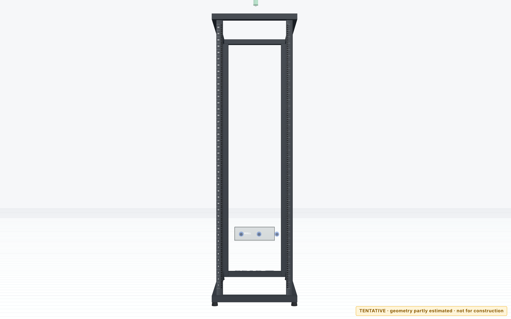
Rack facts
| Item | Value |
|---|---|
| Rack | StarTech 4POSTRACK42 |
| Units | 42U, 28U used; U1 is the lowest unit |
| Rail-to-rail depth | 900 mm (deepest device 823 mm) |
| Frame width | 600 mm; 19-inch panel 482.6 mm |
| U1 height | 120 mm above the floor (bottom of U1) |
| Assumed | StarTech 4POSTRACK42 (rails adjustable 559-1016 mm, square holes, M6 cage nuts); rail-to-rail depth set to 900 mm so 800 mm-class rack servers fit |
| Assumed | U1 bottom 120 mm above the floor (on castors, estimate) |
Cable: Earth bond

Connect these 1 cables
| ID | From | To | Part | Length · route mm | VLAN / note |
|---|---|---|---|---|---|
| B001 | RACK-EARTH.E1 | LAB-EARTH.bar | green/yellow earth cable 6 mm2 (10 AWG), 2-hole lug at the rack bar, ring lug at the lab bar | site (allow 5 m) · route 570 | rack earth bar to the lab earth bar; fitted first, before anything is powered |
Mount the PDUs

Fit these 3 items
| ID | What it is / part | Where (left = as seen from the FRONT) | Mounting notes | Conf. |
|---|---|---|---|---|
| PDU-A | PDU-A 16 A, 12 x C13, switched Raritan PX3-5260R class (1U, 12 x C13, switched, 16 A) | U3 · 483 × 44 mm face, 183 mm deep | Mount: rear posts, outlets facing the rear; 4 x M6 cage nut + screw at the rear posts. 1U switched PDU, 12 x C13, 16 A (Raritan PX3-5260R class, 183 mm); mounted on the REAR posts with the outlets and network port facing the rack rear (assumed) connectors rear: 12 C13, 1 IEC60309, 1 RJ45 | estimate |
| PDU-B | PDU-B 16 A, 12 x C13, switched Raritan PX3-5260R class (1U, 12 x C13, switched, 16 A) | U2 · 483 × 44 mm face, 183 mm deep | mounting as the row above connectors rear: 12 C13, 1 IEC60309, 1 RJ45 | estimate |
| PDU-C | PDU-C 16 A, 12 x C13, switched Raritan PX3-5260R class (1U, 12 x C13, switched, 16 A) | U1 · 483 × 44 mm face, 183 mm deep | mounting as the row above connectors rear: 12 C13, 1 IEC60309, 1 RJ45 | estimate |
Mount the DC drawers

Fit these 4 items
| ID | What it is / part | Where (left = as seen from the FRONT) | Mounting notes | Conf. |
|---|---|---|---|---|
| DC-DIST | DC distribution 48 V, 10 breakers Eaton DCD1M | U7 · 483 × 44 mm face, 280 mm deep | Mount: front posts; 4 x M6 cage nut + screw at the front posts. Eaton DCD1M (~280 mm): breakers front; load terminal face to confirm (rear assumed) connectors rear: 11 DC | estimate |
| DC-RECT | DC rectifier shelf 48 V Mean Well RCP-1UI + 2 x RCP-1000-48 | U6 · 483 × 44 mm face, 351 mm deep | Mount: front posts (ears) + rails front and rear; 4 x M6 cage nut + screw at the front posts + StarTech UNIRAILS1U adjustable 1U rails, bolted to front and rear posts with the kit's own M5 cage nuts and screws (351 mm shelf, up to 3 modules). Mean Well RCP-1UI (350.8 mm), 2 RCP-1000-48 modules fitted: one C14 inlet per module, so 2 AC cords; DC bus at the rear connectors rear: 2 C14, 1 DC | likely |
| DC-DIST2 | -48 V fuse panel (IP-50) Westell N250110-N-0803, GMT fuses | U5 · 483 × 44 mm face, 148 mm deep | Mount: front posts; 4 x M6 cage nut + screw at the front posts. Westell N250110-N-0803 (147.8 mm, vendor TP): all terminals and GMT fuses on the FRONT connectors front: 13 DC, 1 PE | likely |
| DC-RECT2 | -48 V rectifier (IP-50) RCP-1UI + RCP-1000-48, wired -48 V | U4 · 483 × 44 mm face, 351 mm deep | Mount: front posts (ears) + rails front and rear; 4 x M6 cage nut + screw at the front posts + StarTech UNIRAILS1U adjustable 1U rails, bolted to front and rear posts with the kit's own M5 cage nuts and screws (351 mm shelf, up to 3 modules). Mean Well RCP-1UI (350.8 mm), 1 RCP-1000-48 module fitted: one C14 inlet per module, so 1 AC cord; DC bus at the rear connectors rear: 1 C14, 1 DC | likely |
Adaptor shelf

Fit these 12 items
| ID | What it is / part | Where (left = as seen from the FRONT) | Mounting notes | Conf. |
|---|---|---|---|---|
| PA-SHELF | DC/PoE adaptors PA-01..PA-10 + INJ-HUB Siklu EH-PoE-DC-Adaptor-10 + AC PoE injector on a shelf | U8 · 483 × 44 mm face, 254 mm deep | Mount: front posts (2-post shelf); 4 x M6 cage nut + screw at the front posts. 1U vented shelf StarTech CABSHELFV1U (254 mm) carries 11: PA-01, PA-02, PA-03, PA-04, PA-05, PA-06, INJ-HUB, PA-07, PA-08, PA-09, PA-10 | likely |
| PA-01 | DC/PoE adaptor Siklu EH-PoE-DC-Adaptor (size estimate) | on PA-SHELF (U8): 30 mm from the left ear, 154 mm behind the front rail | Siklu EH-PoE-DC-Adaptor (size estimate) connectors rear: 1 RJ45, 1 DC | estimate |
| PA-02 | DC/PoE adaptor Siklu EH-PoE-DC-Adaptor (size estimate) | on PA-SHELF (U8): 75 mm from the left ear, 154 mm behind the front rail | mounting as the row above connectors rear: 1 RJ45, 1 DC | estimate |
| PA-03 | DC/PoE adaptor Siklu EH-PoE-DC-Adaptor (size estimate) | on PA-SHELF (U8): 120 mm from the left ear, 154 mm behind the front rail | mounting as the row above connectors rear: 1 RJ45, 1 DC | estimate |
| PA-04 | DC/PoE adaptor Siklu EH-PoE-DC-Adaptor (size estimate) | on PA-SHELF (U8): 165 mm from the left ear, 154 mm behind the front rail | mounting as the row above connectors rear: 1 RJ45, 1 DC | estimate |
| PA-05 | DC/PoE adaptor Siklu EH-PoE-DC-Adaptor (size estimate) | on PA-SHELF (U8): 210 mm from the left ear, 154 mm behind the front rail | mounting as the row above connectors rear: 1 RJ45, 1 DC | estimate |
| PA-06 | DC/PoE adaptor Siklu EH-PoE-DC-Adaptor (size estimate) | on PA-SHELF (U8): 255 mm from the left ear, 154 mm behind the front rail | mounting as the row above connectors rear: 1 RJ45, 1 DC | estimate |
| INJ-HUB | PoE injector Siklu AX-IN-10G-60W-AC-PoE 138.5 x 62.5 x 35.3 mm, C6 inlet | on PA-SHELF (U8): 295 mm from the left ear, 114 mm behind the front rail | Siklu AX-IN-10G-60W-AC-PoE 138.5 x 62.5 x 35.3 mm, C6 inlet connectors rear: 1 RJ45, 1 C6 (TBC) switched OFF at t0 | estimate |
| PA-07 | DC/PoE adaptor Siklu EH-PoE-DC-Adaptor (size estimate) (spare, unwired) | on PA-SHELF (U8): 291 mm from the left ear, 4 mm behind the front rail | Siklu EH-PoE-DC-Adaptor (size estimate) | estimate |
| PA-08 | DC/PoE adaptor Siklu EH-PoE-DC-Adaptor (size estimate) (spare, unwired) | on PA-SHELF (U8): 336 mm from the left ear, 4 mm behind the front rail | mounting as the row above | estimate |
| PA-09 | DC/PoE adaptor Siklu EH-PoE-DC-Adaptor (size estimate) (spare, unwired) | on PA-SHELF (U8): 381 mm from the left ear, 4 mm behind the front rail | mounting as the row above | estimate |
| PA-10 | DC/PoE adaptor Siklu EH-PoE-DC-Adaptor (size estimate) (spare, unwired) | on PA-SHELF (U8): 426 mm from the left ear, 4 mm behind the front rail | mounting as the row above | estimate |
Splitter tray (8 splitters)
- Tag both ends of each splitter's three cables (n = tile 1-4): SPL-HUBW.tn: S R001-R004 (to HUB.W tile n), P1 R009-R012 (HUB-W1, to W1.E tile n's pad stack), P2 R013-R016 (HUB-W2, to W2.E tile n's pad stack); SPL-HUBE.tn: S R005-R008 (to HUB.E tile n), P1 R017-R020 (HUB-E1, to E1.W tile n's pad stack), P2 R021-R024 (HUB-E2, to E2.W tile n's pad stack).
- Screw each cable's tray end onto its splitter port (S, P1, P2), holding the splitter in your hand or flat on the padded surface; torque each joint with the backing-wrench rule: the torque wrench turns only the male coupling nut, to 8 in-lb (0.9 N m); the backing wrench holds the body of the part that nut belongs to (the pad's body, or the cable plug's body) so it cannot turn with the nut; never a wrench on a splitter or on a tile jack (if a tile jack turns, stop: its panel nut is loose).
- Lay the splitters flat, all the same way round: S to the LEFT, ports 1 and 2 to the RIGHT (port 1 toward the front), printed label up. Columns left to right = tile 1-4; rows front to back: SPL-HUBW t1-t4 (HUB.W), SPL-HUBE t1-t4 (HUB.E). Lay the front row first, so that the back row lays its cables over the front row's. Cable lanes: every cable leaves its port straight out, port 2's 8 mm further out than port 1's; the back row's cables rise 10 mm before running forward, over the front row's plugs.
- Coil the far ends loosely at the tray front, one coil per link (the S cables: one per hub module), and Velcro each coil to the tray's front lip, clear of the unit above: the IF-link steps uncoil them, route them and land the far ends only (the S cables on the hub tiles, the P cables on the pad stacks at the B-end tiles).

Fit these 9 items
| ID | What it is / part | Where (left = as seen from the FRONT) | Mounting notes | Conf. |
|---|---|---|---|---|
| SPL-TRAY | Splitter tray (shelf) 8 x 2-way splitters ZN2PD-02183-S+ | U9 · 483 × 44 mm face, 254 mm deep | Mount: front posts (2-post shelf); 4 x M6 cage nut + screw at the front posts. 1U vented shelf StarTech CABSHELFV1U (254 mm deep) carrying splitters / couplers carries 8: SPL-HUBW.t1, SPL-HUBW.t2, SPL-HUBW.t3, SPL-HUBW.t4, SPL-HUBE.t1, SPL-HUBE.t2, SPL-HUBE.t3, SPL-HUBE.t4 | likely |
| SPL-HUBW.t1 | RF splitter Mini-Circuits ZN2PD-02183-S+ 51.9 x 25.4 x 10.4 mm (blue), lying flat: S on the left end face, ports 1 and 2 on the right end face, label up | on SPL-TRAY (U9): 51 mm from the left ear, 10 mm behind the front rail | Mini-Circuits ZN2PD-02183-S+ 51.9 x 25.4 x 10.4 mm (blue), lying flat: S on the left end face, ports 1 and 2 on the right end face, label up connectors side: 3 SMA | estimate |
| SPL-HUBW.t2 | RF splitter Mini-Circuits ZN2PD-02183-S+ 51.9 x 25.4 x 10.4 mm (blue), lying flat: S on the left end face, ports 1 and 2 on the right end face, label up | on SPL-TRAY (U9): 156 mm from the left ear, 10 mm behind the front rail | mounting as the row above connectors side: 3 SMA | estimate |
| SPL-HUBW.t3 | RF splitter Mini-Circuits ZN2PD-02183-S+ 51.9 x 25.4 x 10.4 mm (blue), lying flat: S on the left end face, ports 1 and 2 on the right end face, label up | on SPL-TRAY (U9): 261 mm from the left ear, 10 mm behind the front rail | mounting as the row above connectors side: 3 SMA | estimate |
| SPL-HUBW.t4 | RF splitter Mini-Circuits ZN2PD-02183-S+ 51.9 x 25.4 x 10.4 mm (blue), lying flat: S on the left end face, ports 1 and 2 on the right end face, label up | on SPL-TRAY (U9): 366 mm from the left ear, 10 mm behind the front rail | mounting as the row above connectors side: 3 SMA | estimate |
| SPL-HUBE.t1 | RF splitter Mini-Circuits ZN2PD-02183-S+ 51.9 x 25.4 x 10.4 mm (blue), lying flat: S on the left end face, ports 1 and 2 on the right end face, label up | on SPL-TRAY (U9): 51 mm from the left ear, 65 mm behind the front rail | mounting as the row above connectors side: 3 SMA | estimate |
| SPL-HUBE.t2 | RF splitter Mini-Circuits ZN2PD-02183-S+ 51.9 x 25.4 x 10.4 mm (blue), lying flat: S on the left end face, ports 1 and 2 on the right end face, label up | on SPL-TRAY (U9): 156 mm from the left ear, 65 mm behind the front rail | mounting as the row above connectors side: 3 SMA | estimate |
| SPL-HUBE.t3 | RF splitter Mini-Circuits ZN2PD-02183-S+ 51.9 x 25.4 x 10.4 mm (blue), lying flat: S on the left end face, ports 1 and 2 on the right end face, label up | on SPL-TRAY (U9): 261 mm from the left ear, 65 mm behind the front rail | mounting as the row above connectors side: 3 SMA | estimate |
| SPL-HUBE.t4 | RF splitter Mini-Circuits ZN2PD-02183-S+ 51.9 x 25.4 x 10.4 mm (blue), lying flat: S on the left end face, ports 1 and 2 on the right end face, label up | on SPL-TRAY (U9): 366 mm from the left ear, 65 mm behind the front rail | mounting as the row above connectors side: 3 SMA | estimate |
Tray ends of 24 cables, fitted in this step (in the hand)
Tag both ends first. Screw each cable's tray end on and torque it to 8 in-lb with the backing-wrench rule (the backing wrench on the cable plug's body, never on the splitter), before the splitter goes on the tray; coil the far end at the tray front. The IF-link step named in each cell routes the cable and lands its far end.
| Splitter | S cable: tray end → hub tile | P1 cable → pad stack on the B tile | P2 cable → pad stack on the B tile |
|---|---|---|---|
| SPL-HUBW.t1 | R001 0.91 m SPL-HUBW.t1.S → SB2.M1.T1 (landed in step 19) | HUB-W1 · R009 1.22 m SPL-HUBW.t1.P1 → PAD-HUB-W1.t1 on SB1.M1.T1 (landed in step 19) | HUB-W2 · R013 1.52 m SPL-HUBW.t1.P2 → PAD-HUB-W2.t1 on SB1.M3.T1 (landed in step 20) |
| SPL-HUBW.t2 | R002 0.91 m SPL-HUBW.t2.S → SB2.M1.T2 (landed in step 19) | HUB-W1 · R010 1.22 m SPL-HUBW.t2.P1 → PAD-HUB-W1.t2 on SB1.M1.T2 (landed in step 19) | HUB-W2 · R014 1.52 m SPL-HUBW.t2.P2 → PAD-HUB-W2.t2 on SB1.M3.T2 (landed in step 20) |
| SPL-HUBW.t3 | R003 0.91 m SPL-HUBW.t3.S → SB2.M1.T3 (landed in step 19) | HUB-W1 · R011 1.22 m SPL-HUBW.t3.P1 → PAD-HUB-W1.t3 on SB1.M1.T3 (landed in step 19) | HUB-W2 · R015 1.52 m SPL-HUBW.t3.P2 → PAD-HUB-W2.t3 on SB1.M3.T3 (landed in step 20) |
| SPL-HUBW.t4 | R004 0.91 m SPL-HUBW.t4.S → SB2.M1.T4 (landed in step 19) | HUB-W1 · R012 1.22 m SPL-HUBW.t4.P1 → PAD-HUB-W1.t4 on SB1.M1.T4 (landed in step 19) | HUB-W2 · R016 1.52 m SPL-HUBW.t4.P2 → PAD-HUB-W2.t4 on SB1.M3.T4 (landed in step 20) |
| SPL-HUBE.t1 | R005 1.22 m SPL-HUBE.t1.S → SB2.M2.T1 (landed in step 21) | HUB-E1 · R017 1.22 m SPL-HUBE.t1.P1 → PAD-HUB-E1.t1 on SB4.M1.T1 (landed in step 21) | HUB-E2 · R021 1.52 m SPL-HUBE.t1.P2 → PAD-HUB-E2.t1 on SB4.M3.T1 (landed in step 22) |
| SPL-HUBE.t2 | R006 1.22 m SPL-HUBE.t2.S → SB2.M2.T2 (landed in step 21) | HUB-E1 · R018 1.22 m SPL-HUBE.t2.P1 → PAD-HUB-E1.t2 on SB4.M1.T2 (landed in step 21) | HUB-E2 · R022 1.52 m SPL-HUBE.t2.P2 → PAD-HUB-E2.t2 on SB4.M3.T2 (landed in step 22) |
| SPL-HUBE.t3 | R007 1.22 m SPL-HUBE.t3.S → SB2.M2.T3 (landed in step 21) | HUB-E1 · R019 1.22 m SPL-HUBE.t3.P1 → PAD-HUB-E1.t3 on SB4.M1.T3 (landed in step 21) | HUB-E2 · R023 1.52 m SPL-HUBE.t3.P2 → PAD-HUB-E2.t3 on SB4.M3.T3 (landed in step 22) |
| SPL-HUBE.t4 | R008 1.22 m SPL-HUBE.t4.S → SB2.M2.T4 (landed in step 21) | HUB-E1 · R020 1.22 m SPL-HUBE.t4.P1 → PAD-HUB-E1.t4 on SB4.M1.T4 (landed in step 21) | HUB-E2 · R024 1.52 m SPL-HUBE.t4.P2 → PAD-HUB-E2.t4 on SB4.M3.T4 (landed in step 22) |
Spider boxes
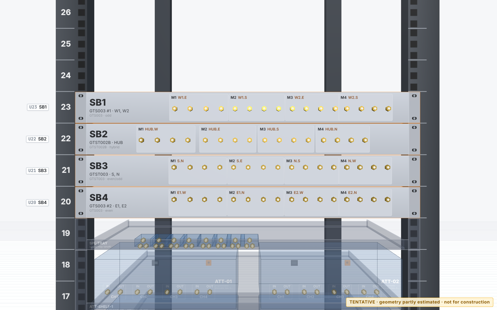
Fit these 4 items
| ID | What it is / part | Where (left = as seen from the FRONT) | Mounting notes | Conf. |
|---|---|---|---|---|
| SB1 | W1, W2 GTS003 · serial SF06000007 (assumed) · TG polarity odd (E2E setting) | U13 · 483 × 44 mm face, 345 mm deep | Mount: front posts (ears) + rails front and rear; 4 x M6 cage nut + screw at the front posts + StarTech UNIRAILS1U adjustable 1U rails, bolted to front and rear posts with the kit's own M5 cage nuts and screws (345 mm box). Siklu 1U Spider box: brushed aluminium front, 16 SMA measured from lab photos (+/-8 mm); depth ~331 body / 345 overall and the rear panel (seen from inside one box) to confirm connectors front: 16 SMA; rear: 5 RJ45, 2 SFP, 2 SMA, 2 USB, 1 DC pad stacks screwed onto its tiles later: HUB-W1 (step 19), HUB-W2 (step 20), W1-S (step 27) | estimate |
| SB2 | HUB GTST002B · serial SF06000001 · TG polarity hybrid (E2E setting) | U12 · 483 × 44 mm face, 345 mm deep | mounting as the row above connectors front: 16 SMA; rear: 3 RJ45, 1 SFP, 1 SMA, 1 USB, 1 DC pad stacks screwed onto its tiles later: HUB-S (step 23), HUB-N (step 24) | estimate |
| SB3 | S, N GTST003 · serial SF06000058 · TG polarity even/odd (E2E setting) | U11 · 483 × 44 mm face, 345 mm deep | mounting as the row above connectors front: 16 SMA; rear: 5 RJ45, 2 SFP, 2 SMA, 2 USB, 1 DC | estimate |
| SB4 | E1, E2 GTS003 · serial SF06000031 (assumed) · TG polarity even (E2E setting) | U10 · 483 × 44 mm face, 345 mm deep | mounting as the row above connectors front: 16 SMA; rear: 5 RJ45, 2 SFP, 2 SMA, 2 USB, 1 DC pad stacks screwed onto its tiles later: HUB-E1 (step 21), HUB-E2 (step 22), E2-W2 (step 25), E1-N (step 26) | estimate |
Front panels: module, sector and tile
Each module (M1-M4) carries one sector; its four tiles T1-T4 run left to right. IF cables land on these tiles in the IF-link steps.
 T1T2T3T4T1T2T3T4T1T2T3T4T1T2T3T4
T1T2T3T4T1T2T3T4T1T2T3T4T1T2T3T4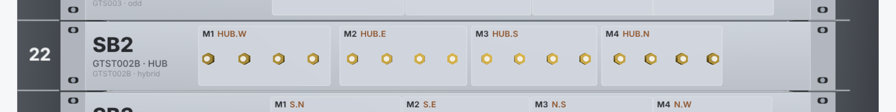
T1T2T3T4T1T2T3T4T1T2T3T4T1T2T3T4 T1T2T3T4T1T2T3T4T1T2T3T4T1T2T3T4
T1T2T3T4T1T2T3T4T1T2T3T4T1T2T3T4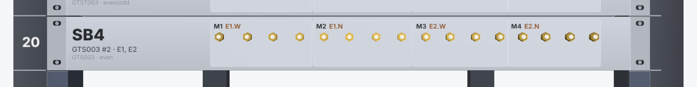
T1T2T3T4T1T2T3T4T1T2T3T4T1T2T3T4Rear panels: node ports by name
The node power (ETH1, from the PoE step), data (SFP+) and GNSS cables land on the rear of the boxes. Straight-on pictures from the rear, cables left out; every port carries its full name and its cable. Seen from the rear, left and right swap: the node that is on the left at the front is on the right here. The rear layout comes from the lab photo of all four boxes (2026-11-25); still open: which RJ-45 of each node window is ETH1 and what the DC header feeds (section 7, questions 1 and 2).


Servers and traffic hosts

Fit these 8 items
| ID | What it is / part | Where (left = as seen from the FRONT) | Mounting notes | Conf. |
|---|---|---|---|---|
| SRV-E2E | TG E2E controller + NMS 1U rack server (lab) | U25 · 483 × 44 mm face, 823 mm deep | Mount: 4-post rail kit (shipped with the server); toolless square-hole rails. lab rack server, stand-in Dell R260 (1U, 497 mm) / R660 (1U, 823 mm) / R760 (2U, 772 mm) connectors rear: 1 SFP, 1 RJ45, 1 C14 switched OFF at t0 | estimate |
| SRV-DPIR | DPIR planner + predictor 2U rack server (lab) | U23-U24 · 483 × 88 mm face, 772 mm deep | mounting as the row above connectors rear: 1 SFP, 1 RJ45, 1 C14 switched OFF at t0 | estimate |
| HOST-W1 | traffic host, sites W1 1U rack server, 10G SFP+ NIC | U22 · 483 × 44 mm face, 497 mm deep | mounting as the row above connectors rear: 1 SFP, 1 RJ45, 1 C14 | estimate |
| HOST-W2 | traffic host, sites W2 1U rack server, 10G SFP+ NIC | U21 · 483 × 44 mm face, 497 mm deep | mounting as the row above connectors rear: 1 SFP, 1 RJ45, 1 C14 | estimate |
| HOST-E1 | traffic host, sites E1 1U rack server, 10G SFP+ NIC | U20 · 483 × 44 mm face, 497 mm deep | mounting as the row above connectors rear: 1 SFP, 1 RJ45, 1 C14 | estimate |
| HOST-E2 | traffic host, sites E2 1U rack server, 10G SFP+ NIC | U19 · 483 × 44 mm face, 497 mm deep | mounting as the row above connectors rear: 1 SFP, 1 RJ45, 1 C14 | estimate |
| HOST-S | traffic host, sites S 1U rack server, 10G SFP+ NIC | U18 · 483 × 44 mm face, 497 mm deep | mounting as the row above connectors rear: 1 SFP, 1 RJ45, 1 C14 | estimate |
| HOST-N | traffic host, sites N 1U rack server, 10G SFP+ NIC | U17 · 483 × 44 mm face, 497 mm deep | mounting as the row above connectors rear: 1 SFP, 1 RJ45, 1 C14 | estimate |
Switches, cable manager, agent shelf

Fit these 11 items
| ID | What it is / part | Where (left = as seen from the FRONT) | Mounting notes | Conf. |
|---|---|---|---|---|
| GNSS-SPL | GNSS splitter 1x8 (if the boxes take GNSS) RMALDCBS1X8 | U28 · 483 × 44 mm face, 216 mm deep | Mount: front posts, connectors facing the rear; 4 x M6 cage nut + screw at the front posts. RMALDCBS1X8 1U, 216 mm, 5.4 kg; connectors at the rear assumed connectors rear: 9 SMA, 1 C14 | likely |
| SW-DATA | Data switch, VLAN per site Netgear M4350-24F4V | U27 · 483 × 44 mm face, 400 mm deep | Mount: front posts (ears), ports facing the front + rails front and rear; 4 x M6 cage nut + screw at the front posts + StarTech UNIRAILS1U adjustable 1U rails, bolted to front and rear posts with the kit's own M5 cage nuts and screws (400 mm, 6.25 kg; Netgear RBS1830 fits 18-30 in rails only, not 900 mm). Netgear M4350-24F4V 440 x 43.2 x 400 mm; ports on the front connectors front: 28 SFP; rear: 1 C14 | likely |
| SW-OOB | Management switch (lab equipment) Netgear M4250-26G4XF-PoE+ (GSM4230PX) | U26 · 483 × 44 mm face, 400 mm deep | Mount: rear posts, ports facing the rear; 4 x M6 cage nut + screw at the rear posts. Netgear GSM4230PX 440 x 43.2 x 400 mm; all ports on Netgear's 'back' face, mounted on the REAR posts with the ports flush with the rack rear connectors rear: 26 RJ45, 4 SFP, 1 C14 | likely |
| AGENTS | Shelf: 6 MARL agent PCs mini PCs on a 1U shelf, 2U clearance | U15-U16 · 483 × 88 mm face, 254 mm deep | Mount: front posts (2-post shelf); 4 x M6 cage nut + screw at the front posts. 1U vented shelf StarTech CABSHELFV1U (254 mm) carries 6: AGENT-W1, AGENT-W2, AGENT-E1, AGENT-E2, AGENT-S, AGENT-N | likely |
| CM | Cable manager Panduit NCMHF1 | U14 · 483 × 44 mm face, 95 mm deep | Mount: front posts; 4 x M6 cage nut + screw at the front posts. Panduit NCMHF1 1U horizontal cable manager | likely |
| AGENT-W1 | mini PC MARL agent mini PC (2 NICs), turned round: connectors to the FRONT | on AGENTS (U15-U16): 30 mm from the left ear, 10 mm behind the front rail | mini PC size estimate connectors front: 2 RJ45, 1 C5 | estimate |
| AGENT-W2 | mini PC MARL agent mini PC (2 NICs), turned round: connectors to the FRONT | on AGENTS (U15-U16): 180 mm from the left ear, 10 mm behind the front rail | mounting as the row above connectors front: 2 RJ45, 1 C5 | estimate |
| AGENT-E1 | mini PC MARL agent mini PC (2 NICs), turned round: connectors to the FRONT | on AGENTS (U15-U16): 330 mm from the left ear, 10 mm behind the front rail | mounting as the row above connectors front: 2 RJ45, 1 C5 | estimate |
| AGENT-E2 | mini PC MARL agent mini PC (2 NICs) | on AGENTS (U15-U16): 30 mm from the left ear, 135 mm behind the front rail | mounting as the row above connectors rear: 2 RJ45, 1 C5 | estimate |
| AGENT-S | mini PC MARL agent mini PC (2 NICs) | on AGENTS (U15-U16): 180 mm from the left ear, 135 mm behind the front rail | mounting as the row above connectors rear: 2 RJ45, 1 C5 | estimate |
| AGENT-N | mini PC MARL agent mini PC (2 NICs) | on AGENTS (U15-U16): 330 mm from the left ear, 135 mm behind the front rail | mounting as the row above connectors rear: 2 RJ45, 1 C5 | estimate |
Blanking panels
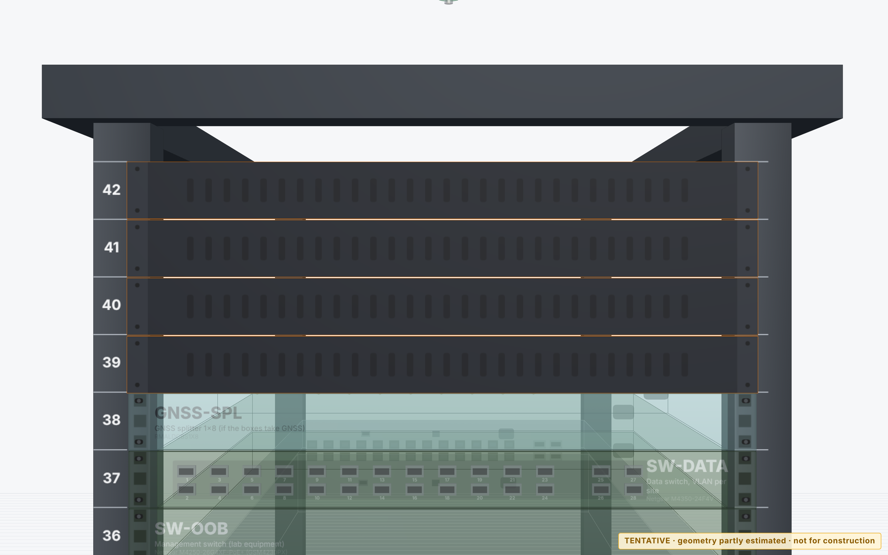
Fit these 14 items
| ID | What it is / part | Where (left = as seen from the FRONT) | Mounting notes | Conf. |
|---|---|---|---|---|
| BLANK-U29 | blanking panel AR8136BLK | U29 · 483 × 44 mm face, 28 mm deep | likely | |
| BLANK-U30 | blanking panel AR8136BLK | U30 · 483 × 44 mm face, 28 mm deep | likely | |
| BLANK-U31 | blanking panel AR8136BLK | U31 · 483 × 44 mm face, 28 mm deep | likely | |
| BLANK-U32 | blanking panel AR8136BLK | U32 · 483 × 44 mm face, 28 mm deep | likely | |
| BLANK-U33 | blanking panel AR8136BLK | U33 · 483 × 44 mm face, 28 mm deep | likely | |
| BLANK-U34 | blanking panel AR8136BLK | U34 · 483 × 44 mm face, 28 mm deep | likely | |
| BLANK-U35 | blanking panel AR8136BLK | U35 · 483 × 44 mm face, 28 mm deep | likely | |
| BLANK-U36 | blanking panel AR8136BLK | U36 · 483 × 44 mm face, 28 mm deep | likely | |
| BLANK-U37 | blanking panel AR8136BLK | U37 · 483 × 44 mm face, 28 mm deep | likely | |
| BLANK-U38 | blanking panel AR8136BLK | U38 · 483 × 44 mm face, 28 mm deep | likely | |
| BLANK-U39 | blanking panel AR8136BLK | U39 · 483 × 44 mm face, 28 mm deep | likely | |
| BLANK-U40 | blanking panel AR8136BLK | U40 · 483 × 44 mm face, 28 mm deep | likely | |
| BLANK-U41 | blanking panel AR8136BLK | U41 · 483 × 44 mm face, 28 mm deep | likely | |
| BLANK-U42 | blanking panel AR8136BLK | U42 · 483 × 44 mm face, 28 mm deep | likely |
Bench table
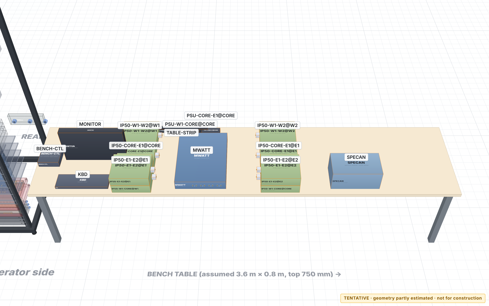
Fit these 25 items
| ID | What it is / part | Where (left = as seen from the FRONT) | Mounting notes | Conf. |
|---|---|---|---|---|
| BENCH-CTL | PC bench controller: event script, PDU commands, logging (always on) | table: 20 mm from the rack-side end, 300 mm from the front edge | small form-factor PC connectors rear: 1 USB, 1 DP, 1 RJ45, 1 C14 | estimate |
| MONITOR | monitor 24-inch monitor (operator station) | table: 30 mm from the rack-side end, 190 mm from the front edge | 24-inch monitor on a stand connectors rear: 1 DP, 1 C14 | estimate |
| KBD | keyboard keyboard + mouse | table: 80 mm from the rack-side end, 10 mm from the front edge | keyboard + mouse connectors rear: 1 USB | estimate |
| IP50-W1-CORE@W1 | IP-50 radio IP-50, hop W1-CORE at W1 (A side, flange toward its peer) | table: 800 mm from the rack-side end, 5 mm from the front edge | Ceragon IP-50CX (about 6 kg; size estimate, ceragon.com not reachable) laid flat; waveguide flange on the side toward the other radio of its hop connectors rear: 2 RJ45, 1 DC, 1 PE; side: 1 WG carries 1: WGT-W1-CORE-A | estimate |
| IP50-W1-CORE@CORE | IP-50 radio IP-50, hop W1-CORE at CORE (B side, flange toward its peer) | table: 1520 mm from the rack-side end, 5 mm from the front edge | mounting as the row above connectors rear: 2 RJ45, 1 DC, 1 PE; side: 1 WG carries 1: WGT-W1-CORE-B | estimate |
| IP50-CORE-E1@CORE | IP-50 radio IP-50, hop CORE-E1 at CORE (A side, flange toward its peer) | table: 800 mm from the rack-side end, 395 mm from the front edge | mounting as the row above connectors rear: 2 RJ45, 1 DC, 1 PE; side: 1 WG carries 1: WGT-CORE-E1-A | estimate |
| IP50-CORE-E1@E1 | IP-50 radio IP-50, hop CORE-E1 at E1 (B side, flange toward its peer) | table: 1520 mm from the rack-side end, 395 mm from the front edge | mounting as the row above connectors rear: 2 RJ45, 1 DC, 1 PE; side: 1 WG carries 1: WGT-CORE-E1-B | estimate |
| IP50-W1-W2@W1 | IP-50 radio IP-50, hop W1-W2 at W1 (A side, flange toward its peer) | table: 1992 mm from the rack-side end, 5 mm from the front edge | mounting as the row above connectors rear: 2 RJ45, 1 DC, 1 PE; side: 1 WG carries 1: WGT-W1-W2-A | estimate |
| IP50-W1-W2@W2 | IP-50 radio IP-50, hop W1-W2 at W2 (B side, flange toward its peer) | table: 2711 mm from the rack-side end, 5 mm from the front edge | mounting as the row above connectors rear: 2 RJ45, 1 DC, 1 PE; side: 1 WG carries 1: WGT-W1-W2-B | estimate |
| IP50-E1-E2@E1 | IP-50 radio IP-50, hop E1-E2 at E1 (A side, flange toward its peer) | table: 1992 mm from the rack-side end, 395 mm from the front edge | mounting as the row above connectors rear: 2 RJ45, 1 DC, 1 PE; side: 1 WG carries 1: WGT-E1-E2-A | estimate |
| IP50-E1-E2@E2 | IP-50 radio IP-50, hop E1-E2 at E2 (B side, flange toward its peer) | table: 2711 mm from the rack-side end, 395 mm from the front edge | mounting as the row above connectors rear: 2 RJ45, 1 DC, 1 PE; side: 1 WG carries 1: WGT-E1-E2-B | estimate |
| PSU-W1-CORE@CORE | power supply isolated -48 V supply (floating), switched at t0 (operator end of the table) | table: 230 mm from the rack-side end, 300 mm from the front edge | isolated 48 V 120 W desktop supply (e.g. Mean Well GST120A48), output floating, wired -48 V (PSU - to the radio -48 V pin, PSU + to the radio 0 V pin) through a barrel-to-terminal adaptor connectors rear: 1 DC, 1 C14 switched OFF at t0 | estimate |
| PSU-CORE-E1@CORE | power supply isolated -48 V supply (floating), switched at t0 (operator end of the table) | table: 410 mm from the rack-side end, 300 mm from the front edge | mounting as the row above connectors rear: 1 DC, 1 C14 switched OFF at t0 | estimate |
| SPECAN | spectrum analyser spectrum analyser / power sensor | table: 3073 mm from the rack-side end, 90 mm from the front edge | R&S FPL1026 408 x 186 x 235 mm; RF in (2.92 mm F) at the lower right of the front connectors rear: 1 RJ45, 1 C14 | likely |
| TABLE-STRIP | mains strip bench mains strip, 6 x C13 outlets, C20 inlet, on/off switch (own wall socket) | table: 610 mm from the rack-side end, 190 mm from the front edge | bench mains strip, 6 x C13 outlets, C20 inlet, 16 A, with an on/off switch (part TBC); fed from its own wall socket, never from a switched PDU outlet; laid lengthwise front to back on the table connectors rear: 1 C20; top: 6 C13 | estimate |
| WGT-W1-CORE-A | waveguide transition Pasternack PEWCA1003 WR-62 to SMA-F (33.3 mm flange); band to confirm | on IP50-W1-CORE@W1 (on its waveguide flange) | Pasternack PEWCA1003 WR-62 to SMA-F (33.3 mm flange); band to confirm connectors side: 1 WG, 1 SMA pad stacks screwed onto its tiles later: W1-CORE (step 28) | estimate |
| WGT-W1-CORE-B | waveguide transition Pasternack PEWCA1003 WR-62 to SMA-F (33.3 mm flange); band to confirm | on IP50-W1-CORE@CORE (on its waveguide flange) | mounting as the row above connectors side: 1 WG, 1 SMA pad stacks screwed onto its tiles later: W1-CORE (step 28) | estimate |
| WGT-CORE-E1-A | waveguide transition Pasternack PEWCA1003 WR-62 to SMA-F (33.3 mm flange); band to confirm | on IP50-CORE-E1@CORE (on its waveguide flange) | mounting as the row above connectors side: 1 WG, 1 SMA pad stacks screwed onto its tiles later: CORE-E1 (step 28) | estimate |
| WGT-CORE-E1-B | waveguide transition Pasternack PEWCA1003 WR-62 to SMA-F (33.3 mm flange); band to confirm | on IP50-CORE-E1@E1 (on its waveguide flange) | mounting as the row above connectors side: 1 WG, 1 SMA pad stacks screwed onto its tiles later: CORE-E1 (step 28) | estimate |
| WGT-W1-W2-A | waveguide transition Pasternack PEWCA1003 WR-62 to SMA-F (33.3 mm flange); band to confirm | on IP50-W1-W2@W1 (on its waveguide flange) | mounting as the row above connectors side: 1 WG, 1 SMA pad stacks screwed onto its tiles later: W1-W2 (step 28) | estimate |
| WGT-W1-W2-B | waveguide transition Pasternack PEWCA1003 WR-62 to SMA-F (33.3 mm flange); band to confirm | on IP50-W1-W2@W2 (on its waveguide flange) | mounting as the row above connectors side: 1 WG, 1 SMA pad stacks screwed onto its tiles later: W1-W2 (step 28) | estimate |
| WGT-E1-E2-A | waveguide transition Pasternack PEWCA1003 WR-62 to SMA-F (33.3 mm flange); band to confirm | on IP50-E1-E2@E1 (on its waveguide flange) | mounting as the row above connectors side: 1 WG, 1 SMA pad stacks screwed onto its tiles later: E1-E2 (step 28) | estimate |
| WGT-E1-E2-B | waveguide transition Pasternack PEWCA1003 WR-62 to SMA-F (33.3 mm flange); band to confirm | on IP50-E1-E2@E2 (on its waveguide flange) | mounting as the row above connectors side: 1 WG, 1 SMA pad stacks screwed onto its tiles later: E1-E2 (step 28) | estimate |
| CABLE-BRIDGE | cable bridge rack-to-table cable bridge: wire-basket cable tray section with a divider (data in front, power behind) on two brackets, rack right post to the table edge, its floor at table height (part TBC) | room: rack-to-table cable bridge (wire-basket section, part TBC) | rack-to-table cable bridge (wire-basket section, part TBC) | estimate |
| TABLE-EARTH | earth bar bench-table earth bar, 9 M6 studs | room: earth bar screwed to the bench table's back edge behind the aisle between the radio columns, studs up just below the table top (estimate) | earth bar screwed to the bench table's back edge behind the aisle between the radio columns, studs up just below the table top (estimate) connectors top: 8 PE; bottom: 1 PE | estimate |
Cable: DC power and earth bonds
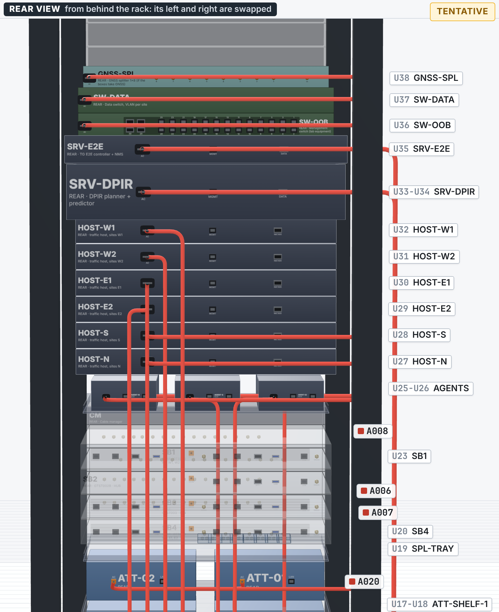
Where the cable ends land in the rack
Cable ends of this step per rack item, top to bottom. Ends on the bench table are in the table that follows.
| Rack item | U | Cable ends |
|---|---|---|
| SB1 | U13 | 1 |
| SB2 | U12 | 1 |
| SB3 | U11 | 1 |
| SB4 | U10 | 1 |
| PA-SHELF | U8 | 6 |
| DC-DIST | U7 | 11 |
| DC-RECT | U6 | 1 |
| DC-DIST2 | U5 | 10 |
| DC-RECT2 | U4 | 1 |
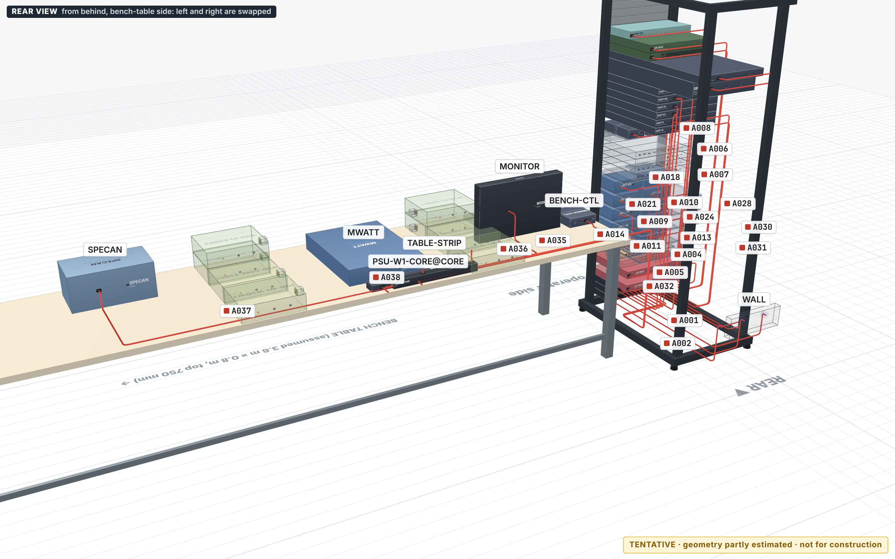
Connect these 31 cables
| ID | From | To | Part | Length · route mm | VLAN / note |
|---|---|---|---|---|---|
| B002 | DC-DIST2.rtn | RACK-EARTH.E2 | green/yellow earth cable 6 mm2 (10 AWG) with ring lugs | 1.5 m (cut) · route 1243 | -48 V return bus (= DC-RECT2 +V) to the rack earth: this bond makes the -48 V system positive grounded |
| D017 | DC-DIST2.strapA | DC-DIST2.busB | DC-DIST2 bus A to bus B strap (-48 V and RTN), 2 x 10 AWG with ring lugs | 0.5 m (cut) · route 337 | feeds bus B (fuses F6-F10) from bus A; omit if the panel ships strapped |
| B004 | TABLE-EARTH.bond | RACK-EARTH.E3 | green/yellow earth cable 6 mm2 (10 AWG) with ring lugs | 4.75 m (cut) · route 4092 | bench-table earth bar to the rack earth bar (the radios' one earth point, through the rack); along the floor under the cable protector with the strip cord |
| B005 | IP50-W1-CORE@W1.gnd | TABLE-EARTH.R1 | green/yellow earth cable 2.5 mm2 (14 AWG) with ring lugs | 1.5 m (cut) · route 1303 | radio chassis ground screw to the table earth bar |
| B006 | IP50-W1-CORE@CORE.gnd | TABLE-EARTH.R2 | green/yellow earth cable 2.5 mm2 (14 AWG) with ring lugs | 0.75 m (cut) · route 611 | radio chassis ground screw to the table earth bar |
| B007 | IP50-CORE-E1@CORE.gnd | TABLE-EARTH.R3 | green/yellow earth cable 2.5 mm2 (14 AWG) with ring lugs | 1.25 m (cut) · route 960 | radio chassis ground screw to the table earth bar |
| B008 | IP50-CORE-E1@E1.gnd | TABLE-EARTH.R4 | green/yellow earth cable 2.5 mm2 (14 AWG) with ring lugs | 0.5 m (cut) · route 258 | radio chassis ground screw to the table earth bar |
| B009 | IP50-W1-W2@W1.gnd | TABLE-EARTH.R5 | green/yellow earth cable 2.5 mm2 (14 AWG) with ring lugs | 1.25 m (cut) · route 922 | radio chassis ground screw to the table earth bar |
| B010 | IP50-W1-W2@W2.gnd | TABLE-EARTH.R6 | green/yellow earth cable 2.5 mm2 (14 AWG) with ring lugs | 2 m (cut) · route 1704 | radio chassis ground screw to the table earth bar |
| B011 | IP50-E1-E2@E1.gnd | TABLE-EARTH.R7 | green/yellow earth cable 2.5 mm2 (14 AWG) with ring lugs | 0.75 m (cut) · route 483 | radio chassis ground screw to the table earth bar |
| B012 | IP50-E1-E2@E2.gnd | TABLE-EARTH.R8 | green/yellow earth cable 2.5 mm2 (14 AWG) with ring lugs | 1.5 m (cut) · route 1181 | radio chassis ground screw to the table earth bar |
| D001 | DC-RECT.bus | DC-DIST.bus | DC bus link 2 x 10 AWG with ring lugs: RECT +V to DIST + bus, RECT -V to DIST return | 1.25 m (cut) · route 1076 | +48 V bus, output floating (not earthed); bus link protected by the rectifier current limit only (2 x RCP-1000-48, about 44 A into 2 x 10 AWG: confirm the RCP shuts down on sustained overload, or fit a 30 A DC fuse at each rectifier output) |
| D002 | DC-DIST.CB1 | PA-01.dc | Belden 8461 2 x 18 AWG + Phoenix 3200519 ferrules | 0.5 m (cut) · route 283 | feeds node W1: breaker output (+48 V, red sleeve) to the adaptor + terminal, return to its - terminal |
| D003 | DC-DIST.CB2 | PA-02.dc | Belden 8461 2 x 18 AWG + Phoenix 3200519 ferrules | 0.5 m (cut) · route 378 | feeds node W2: breaker output (+48 V, red sleeve) to the adaptor + terminal, return to its - terminal |
| D004 | DC-DIST.CB3 | PA-03.dc | Belden 8461 2 x 18 AWG + Phoenix 3200519 ferrules | 0.75 m (cut) · route 473 | feeds node S: breaker output (+48 V, red sleeve) to the adaptor + terminal, return to its - terminal |
| D005 | DC-DIST.CB4 | PA-04.dc | Belden 8461 2 x 18 AWG + Phoenix 3200519 ferrules | 0.75 m (cut) · route 568 | feeds node N: breaker output (+48 V, red sleeve) to the adaptor + terminal, return to its - terminal |
| D006 | DC-DIST.CB5 | PA-05.dc | Belden 8461 2 x 18 AWG + Phoenix 3200519 ferrules | 0.75 m (cut) · route 663 | feeds node E1: breaker output (+48 V, red sleeve) to the adaptor + terminal, return to its - terminal |
| D007 | DC-DIST.CB6 | PA-06.dc | Belden 8461 2 x 18 AWG + Phoenix 3200519 ferrules | 1 m (cut) · route 710 | feeds node E2: breaker output (+48 V, red sleeve) to the adaptor + terminal, return to its - terminal |
| D008 | DC-RECT2.out | DC-DIST2.bus | DC bus link 2 x 10 AWG with ring lugs: RECT2 -V to DC-DIST2 BAT A (-48 V), RECT2 +V to RTN | 1.25 m (cut) · route 1081 | -48 V bus; positive grounded by the green/yellow bond from the RTN bus to the rack earth bar; DC-DIST2 has no main breaker: bus link protected by the rectifier current limit only (1 x RCP-1000-48, about 22 A into 2 x 10 AWG, within the 10 AWG rating) |
| D009 | DC-DIST2.F1 | IP50-W1-CORE@W1.dc | Belden 8461 2 x 18 AWG (IP-50 connector TBC) | 3.75 m (cut) · route 3385 | -48 V through a GMT fuse: fuse output (-48 V, blue sleeve) to the radio -48 V pin, RTN to the radio 0 V pin |
| D010 | PSU-W1-CORE@CORE.out | IP50-W1-CORE@CORE.dc | Belden 8461 2 x 18 AWG + barrel-to-terminal adaptor (IP-50 connector TBC) | 3 m (cut) · route 2627 | floating -48 V from its own isolated supply, switched off at t0: PSU - (blue sleeve) to the radio -48 V pin, PSU + to the radio 0 V pin; not earthed dead after t0 |
| D011 | PSU-CORE-E1@CORE.out | IP50-CORE-E1@CORE.dc | Belden 8461 2 x 18 AWG + barrel-to-terminal adaptor (IP-50 connector TBC) | 1.5 m (cut) · route 1154 | floating -48 V from its own isolated supply, switched off at t0: PSU - (blue sleeve) to the radio -48 V pin, PSU + to the radio 0 V pin; not earthed dead after t0 |
| D012 | DC-DIST2.F2 | IP50-CORE-E1@E1.dc | Belden 8461 2 x 18 AWG (IP-50 connector TBC) | 4.25 m (cut) · route 3722 | -48 V through a GMT fuse: fuse output (-48 V, blue sleeve) to the radio -48 V pin, RTN to the radio 0 V pin |
| D013 | DC-DIST2.F3 | IP50-W1-W2@W1.dc | Belden 8461 2 x 18 AWG (IP-50 connector TBC) | 5 m (cut) · route 4483 | -48 V through a GMT fuse: fuse output (-48 V, blue sleeve) to the radio -48 V pin, RTN to the radio 0 V pin |
| D014 | DC-DIST2.F4 | IP50-W1-W2@W2.dc | Belden 8461 2 x 18 AWG (IP-50 connector TBC) | 6 m (cut) · route 5394 | -48 V through a GMT fuse: fuse output (-48 V, blue sleeve) to the radio -48 V pin, RTN to the radio 0 V pin |
| D015 | DC-DIST2.F5 | IP50-E1-E2@E1.dc | Belden 8461 2 x 18 AWG (IP-50 connector TBC) | 4.75 m (cut) · route 4115 | -48 V through a GMT fuse: fuse output (-48 V, blue sleeve) to the radio -48 V pin, RTN to the radio 0 V pin |
| D016 | DC-DIST2.F6 | IP50-E1-E2@E2.dc | Belden 8461 2 x 18 AWG (IP-50 connector TBC) | 5.25 m (cut) · route 4620 | -48 V through a GMT fuse: fuse output (-48 V, blue sleeve) to the radio -48 V pin, RTN to the radio 0 V pin |
| D018 | DC-DIST.CB7 | SB1.DCIN | Belden 8461 2 x 18 AWG + Phoenix 3200519 ferrules | 1.25 m (cut) · route 1027 | SB1 box fans + Raspberry Pi: CB7 output (+48 V, red sleeve) to the DCIN + terminal, return to its - terminal; CONDITIONAL: land it only once the Spider-box hold point has confirmed DCIN is a 48 V DC fan / Pi input; any other voltage or function: STOP, design change |
| D019 | DC-DIST.CB8 | SB2.DCIN | Belden 8461 2 x 18 AWG + Phoenix 3200519 ferrules | 1.5 m (cut) · route 1173 | SB2 box fans + Raspberry Pi: CB8 output (+48 V, red sleeve) to the DCIN + terminal, return to its - terminal; CONDITIONAL: land it only once the Spider-box hold point has confirmed DCIN is a 48 V DC fan / Pi input; any other voltage or function: STOP, design change |
| D020 | DC-DIST.CB9 | SB3.DCIN | Belden 8461 2 x 18 AWG + Phoenix 3200519 ferrules | 1.25 m (cut) · route 990 | SB3 box fans + Raspberry Pi: CB9 output (+48 V, red sleeve) to the DCIN + terminal, return to its - terminal; CONDITIONAL: land it only once the Spider-box hold point has confirmed DCIN is a 48 V DC fan / Pi input; any other voltage or function: STOP, design change |
| D021 | DC-DIST.CB10 | SB4.DCIN | Belden 8461 2 x 18 AWG + Phoenix 3200519 ferrules | 1.25 m (cut) · route 996 | SB4 box fans + Raspberry Pi: CB10 output (+48 V, red sleeve) to the DCIN + terminal, return to its - terminal; CONDITIONAL: land it only once the Spider-box hold point has confirmed DCIN is a 48 V DC fan / Pi input; any other voltage or function: STOP, design change |
DC wiring rules
One convention for both systems (the conductor colours of the Belden 8461 on the drum decide which core is the "other" one: write it on the drum). Check polarity with a meter at every output before a load is connected.
| Where | System | Conductor → terminal | Termination | Tag |
|---|---|---|---|---|
| DC-DIST CBn | +48 V to the node adaptors | Belden 8461 2 × 18 AWG: black core → RTN (0 V); other core (white / red) → +48 V at CBn | ferrule 0.75 mm² Phoenix 3200519 on both cores | red tag both ends |
| DC-DIST2 Fn | -48 V to the IP-50 radios (positive earth) | Belden 8461 2 × 18 AWG: black core → RTN (0 V, earthed); other core → -48 V at Fn (through the GMT fuse) | ferrule 0.75 mm² Phoenix 3200519; radio end: IP-50 DC plug TBC (open question 5) | blue tag both ends |
| D001, D008, D017 | rectifier → distribution bus | 2 × 10 AWG: red / black per the rectifier marking | ring lugs, hole to match the stud: stud size TBC (measure) | same colour rule as its system |
| A-B strap | DC-DIST2 bus A → bus B | short 10 AWG links (or the vendor strap), both poles | ring lugs to match the input studs (TBC) | - |
DC terminals, one by one
Straight-on pictures with the cables left out. Tag = terminal and cable ID, then what it feeds.


Cable: PoE to the nodes
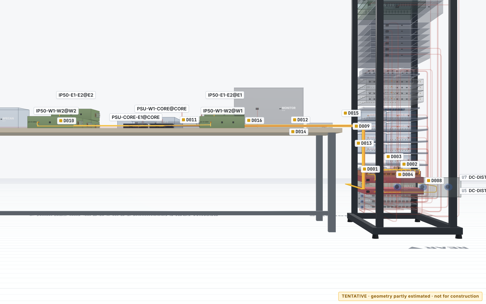
Connect these 7 cables
| ID | From | To | Part | Length · route mm | VLAN / note |
|---|---|---|---|---|---|
| Q001 | PA-01.rj45 | SB1.W1.ETH1 | Panduit STP6X1MBU Cat6A S/FTP 1 m | 1 m · route 670 | power only (passive adaptor) |
| Q002 | PA-02.rj45 | SB1.W2.ETH1 | Panduit STP6X2MBU Cat6A S/FTP 2 m | 2 m · route 943 | power only (passive adaptor); length from the twin route (943 mm) |
| Q003 | INJ-HUB.poe | SB2.HUB.ETH1 | Panduit STP6X2MBU Cat6A S/FTP 2 m | 2 m · route 1039 | PoE from the AC injector (power only); switched off at t0; length from the twin route (1039 mm) dead after t0 |
| Q004 | PA-03.rj45 | SB3.S.ETH1 | Panduit STP6X1MBU Cat6A S/FTP 1 m | 1 m · route 713 | power only (passive adaptor) |
| Q005 | PA-04.rj45 | SB3.N.ETH1 | Panduit STP6X2MBU Cat6A S/FTP 2 m | 2 m · route 986 | power only (passive adaptor); length from the twin route (986 mm) |
| Q006 | PA-05.rj45 | SB4.E1.ETH1 | Panduit STP6X1MBU Cat6A S/FTP 1 m | 1 m · route 787 | power only (passive adaptor) |
| Q007 | PA-06.rj45 | SB4.E2.ETH1 | Panduit STP6X2MBU Cat6A S/FTP 2 m | 2 m · route 1012 | power only (passive adaptor); length from the twin route (1012 mm) |
Cable: AC mains


After step 14, rack rear straight on: items and cables of this step highlighted; every U labelled beside the rack.

Where the cable ends land in the rack
Cable ends of this step per rack item, top to bottom. Ends on the bench table are in the table that follows.
| Rack item | U | Cable ends |
|---|---|---|
| GNSS-SPL | U28 | 1 |
| SW-DATA | U27 | 1 |
| SW-OOB | U26 | 1 |
| SRV-E2E | U25 | 1 |
| SRV-DPIR | U23-U24 | 1 |
| HOST-W1 | U22 | 1 |
| HOST-W2 | U21 | 1 |
| HOST-E1 | U20 | 1 |
| HOST-E2 | U19 | 1 |
| HOST-S | U18 | 1 |
| HOST-N | U17 | 1 |
| AGENTS | U15-U16 | 6 |
| PA-SHELF | U8 | 1 |
| DC-RECT | U6 | 2 |
| DC-RECT2 | U4 | 1 |
| PDU-A | U3 | 9 |
| PDU-B | U2 | 10 |
| PDU-C | U1 | 7 |
Connect these 30 cables
| ID | From | To | Part | Length · route mm | VLAN / note |
|---|---|---|---|---|---|
| A001 | WALL.S1 WALL.S1 (lab wall socket IEC 60309 16 A) | PDU-A.inlet | PDU cord (IEC 60309 16 A plug) | fixed · route 1121 | PDU's own cord: route it, but leave the plug OUT of the wall until power-up |
| A002 | WALL.S2 WALL.S2 (lab wall socket IEC 60309 16 A) | PDU-B.inlet | PDU cord (IEC 60309 16 A plug) | fixed · route 1256 | PDU's own cord: route it, but leave the plug OUT of the wall until power-up |
| A003 | WALL.S3 WALL.S3 (lab wall socket IEC 60309 16 A) | PDU-C.inlet | PDU cord (IEC 60309 16 A plug) | fixed · route 1390 | PDU's own cord: route it, but leave the plug OUT of the wall until power-up |
| A004 | PDU-A.O1 | DC-RECT.ac | Eaton Tripp Lite P004-006 C14-C13 lead 1.83 m | 1.83 m · route 1334 | rectifier module 1 of 2 (one cord per module) |
| A005 | PDU-A.O2 | DC-RECT2.ac | Eaton Tripp Lite P004-006 C14-C13 lead 1.83 m | 1.83 m · route 1289 | rectifier module 1 of 1 (one cord per module) |
| A006 | PDU-A.O3 | SW-DATA.ac | Eaton Tripp Lite P004-010 C14-C13 lead 3.05 m | 3.05 m · route 2307 | length from the twin route (2307 mm) |
| A007 | PDU-A.O4 | SW-OOB.ac | Eaton Tripp Lite P004-010 C14-C13 lead 3.05 m | 3.05 m · route 1758 | length from the twin route (1758 mm) |
| A008 | PDU-A.O5 | GNSS-SPL.ac | Eaton Tripp Lite P004-010 C14-C13 lead 3.05 m | 3.05 m · route 2575 | length from the twin route (2575 mm) |
| A009 | PDU-A.O6 | AGENT-W1.ac | Eaton Tripp Lite P014-010 C14-C5 lead 3.05 m | 3.05 m · route 1944 | agent PC power brick; length from the twin route (1944 mm) |
| A010 | PDU-A.O7 | AGENT-W2.ac | Eaton Tripp Lite P014-010 C14-C5 lead 3.05 m | 3.05 m · route 2146 | agent PC power brick; length from the twin route (2146 mm) |
| A011 | PDU-A.O8 | AGENT-E1.ac | Eaton Tripp Lite P014-010 C14-C5 lead 3.05 m | 3.05 m · route 2348 | agent PC power brick; length from the twin route (2348 mm) |
| A012 | PDU-B.O1 | AGENT-E2.ac | Eaton Tripp Lite P014-006 C14-C5 'Mickey' lead 1.83 m | 1.83 m · route 1577 | agent PC power brick |
| A013 | PDU-B.O2 | AGENT-S.ac | Eaton Tripp Lite P014-010 C14-C5 lead 3.05 m | 3.05 m · route 1723 | agent PC power brick; length from the twin route (1723 mm) |
| A014 | PDU-B.O3 | AGENT-N.ac | Eaton Tripp Lite P014-010 C14-C5 lead 3.05 m | 3.05 m · route 1917 | agent PC power brick; length from the twin route (1917 mm) |
| A015 | PDU-B.O4 | HOST-W1.ac | Eaton Tripp Lite P004-010 C14-C13 lead 3.05 m | 3.05 m · route 1934 | length from the twin route (1934 mm) |
| A016 | PDU-B.O5 | HOST-W2.ac | Eaton Tripp Lite P004-010 C14-C13 lead 3.05 m | 3.05 m · route 1934 | length from the twin route (1934 mm) |
| A017 | PDU-B.O6 | HOST-E1.ac | Eaton Tripp Lite P004-010 C14-C13 lead 3.05 m | 3.05 m · route 1885 | length from the twin route (1885 mm) |
| A018 | PDU-B.O7 | HOST-E2.ac | Eaton Tripp Lite P004-010 C14-C13 lead 3.05 m | 3.05 m · route 1885 | length from the twin route (1885 mm) |
| A019 | PDU-B.O8 | HOST-S.ac | Eaton Tripp Lite P004-010 C14-C13 lead 3.05 m | 3.05 m · route 1836 | length from the twin route (1836 mm) |
| A020 | PDU-C.O1 | HOST-N.ac | Eaton Tripp Lite P004-006 C14-C13 lead 1.83 m | 1.83 m · route 1640 | |
| A021 | PDU-C.O2 | SRV-E2E.ac | Eaton Tripp Lite P004-010 C14-C13 lead 3.05 m | 3.05 m · route 1714 | switched off at t0 (outlet switching); one PSU only: if the server has two, REMOVE PSU 2 before it goes in the rack (only this outlet is switched at t0) dead after t0 |
| A022 | PDU-C.O3 | SRV-DPIR.ac | Eaton Tripp Lite P004-010 C14-C13 lead 3.05 m | 3.05 m · route 1742 | switched off at t0 (outlet switching); one PSU only: if the server has two, REMOVE PSU 2 before it goes in the rack (only this outlet is switched at t0) dead after t0 |
| A023 | PDU-C.O4 | INJ-HUB.ac | Eaton Tripp Lite P014-006 C14-C5 'Mickey' lead 1.83 m (injector inlet TBC) | 1.83 m · route 1595 | switched off at t0 (outlet switching): the node loses power dead after t0 |
| A024 | PDU-C.O5 | PSU-W1-CORE@CORE.ac | Eaton Tripp Lite P004-010 C14-C13 lead 3.05 m | 3.05 m · route 2287 | switched off at t0 (outlet switching) dead after t0 |
| A025 | PDU-C.O6 | PSU-CORE-E1@CORE.ac | Eaton Tripp Lite P004-010 C14-C13 lead 3.05 m | 3.05 m · route 2397 | switched off at t0 (outlet switching) dead after t0 |
| A026 | TABLE-STRIP.O1 | BENCH-CTL.ac | Eaton Tripp Lite P004-006 C14-C13 lead 1.83 m | 1.83 m · route 863 | |
| A027 | TABLE-STRIP.O2 | MONITOR.ac | Eaton Tripp Lite P004-006 C14-C13 lead 1.83 m | 1.83 m · route 562 | |
| A028 | TABLE-STRIP.O3 | SPECAN.ac | Eaton Tripp Lite P004-015 C14-C13 lead 4.57 m | 4.57 m · route 3733 | length from the twin route (3733 mm) |
| A029 | PDU-B.O9 | DC-RECT.ac2 | Eaton Tripp Lite P004-006 C14-C13 lead 1.83 m | 1.83 m · route 1611 | rectifier module 2 of 2 (one cord per module) |
| A030 | WALL.S4 WALL.S4 (lab wall socket IEC 60309 16 A) | TABLE-STRIP.inlet | CORD-60309-C19-3M power cord IEC 60309 16 A (2P+E) plug to IEC C19, 3 m (part TBC) | 3 m · route 2665 | bench strip supply on its own wall socket (not a PDU outlet): BENCH-CTL stays powered through t0; leave the plug OUT of the wall until power-up |
PDU outlets, one by one
Each PDU straight on from the rear, cables left out. Tag = outlet and cable ID, then the device it feeds. Outlets marked OFF at t0 are switched off by the bench controller at the event. The same map is kept in section 5.
PDU-A U3
Raritan PX3-5260R class (1U, 12 x C13, switched, 16 A); fed by A001 from WALL.S1

| Outlet | Feeds | Cable | Lead |
|---|---|---|---|
| O1 | DC-RECT | A004 | 1.83 m |
| O2 | DC-RECT2 | A005 | 1.83 m |
| O3 | SW-DATA | A006 | 3.05 m |
| O4 | SW-OOB | A007 | 3.05 m |
| Outlet | Feeds | Cable | Lead |
|---|---|---|---|
| O5 | GNSS-SPL | A008 | 3.05 m |
| O6 | AGENT-W1 | A009 | 3.05 m |
| O7 | AGENT-W2 | A010 | 3.05 m |
| O8 | AGENT-E1 | A011 | 3.05 m |
| Outlet | Feeds | Cable | Lead |
|---|---|---|---|
| O9 | spare | ||
| O10 | spare | ||
| O11 | spare | ||
| O12 | spare |
PDU-B U2
Raritan PX3-5260R class (1U, 12 x C13, switched, 16 A); fed by A002 from WALL.S2

| Outlet | Feeds | Cable | Lead |
|---|---|---|---|
| O1 | AGENT-E2 | A012 | 1.83 m |
| O2 | AGENT-S | A013 | 3.05 m |
| O3 | AGENT-N | A014 | 3.05 m |
| O4 | HOST-W1 | A015 | 3.05 m |
| Outlet | Feeds | Cable | Lead |
|---|---|---|---|
| O5 | HOST-W2 | A016 | 3.05 m |
| O6 | HOST-E1 | A017 | 3.05 m |
| O7 | HOST-E2 | A018 | 3.05 m |
| O8 | HOST-S | A019 | 3.05 m |
| Outlet | Feeds | Cable | Lead |
|---|---|---|---|
| O9 | DC-RECT | A029 | 1.83 m |
| O10 | spare | ||
| O11 | spare | ||
| O12 | spare |
PDU-C U1
Raritan PX3-5260R class (1U, 12 x C13, switched, 16 A); fed by A003 from WALL.S3

| Outlet | Feeds | Cable | Lead |
|---|---|---|---|
| O1 | HOST-N | A020 | 1.83 m |
| O2 | SRV-E2E OFF at t0 | A021 | 3.05 m |
| O3 | SRV-DPIR OFF at t0 | A022 | 3.05 m |
| O4 | INJ-HUB OFF at t0 | A023 | 1.83 m |
| Outlet | Feeds | Cable | Lead |
|---|---|---|---|
| O5 | PSU-W1-CORE@CORE OFF at t0 | A024 | 3.05 m |
| O6 | PSU-CORE-E1@CORE OFF at t0 | A025 | 3.05 m |
| O7 | spare | ||
| O8 | spare |
| Outlet | Feeds | Cable | Lead |
|---|---|---|---|
| O9 | spare | ||
| O10 | spare | ||
| O11 | spare | ||
| O12 | spare |
TABLE-STRIP table
bench mains strip, 6 x C13 outlets, C20 inlet, on/off switch (own wall socket); fed by A030 from WALL.S4
| Outlet | Feeds | Cable | Lead |
|---|---|---|---|
| O1 | BENCH-CTL | A026 | 1.83 m |
| O2 | MONITOR | A027 | 1.83 m |
| Outlet | Feeds | Cable | Lead |
|---|---|---|---|
| O3 | SPECAN | A028 | 4.57 m |
| O4 | spare |
| Outlet | Feeds | Cable | Lead |
|---|---|---|---|
| O5 | spare | ||
| O6 | spare |
Cable: Data to SW-DATA
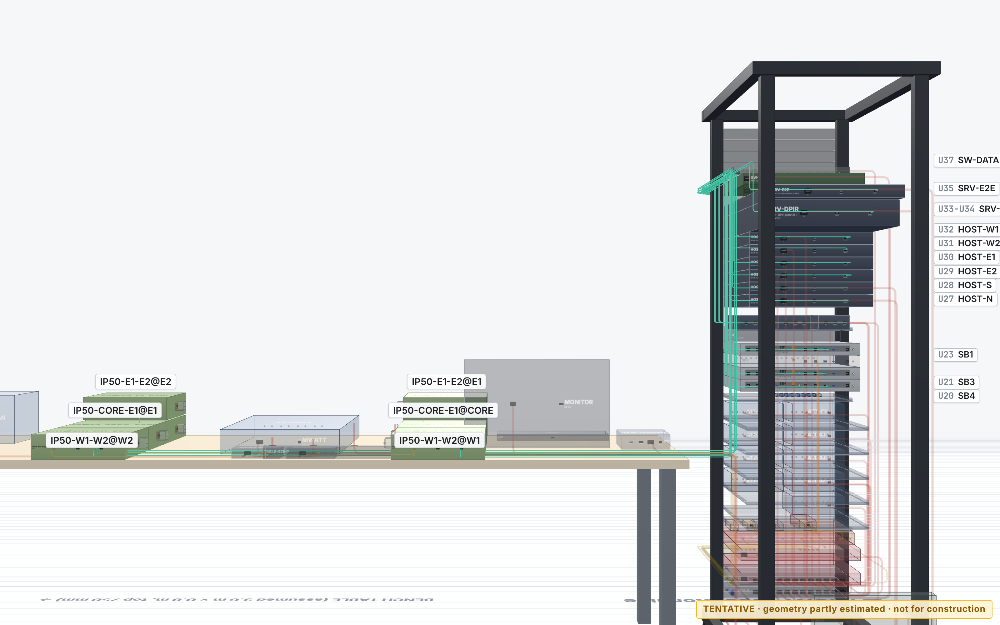
Where the cable ends land in the rack
Cable ends of this step per rack item, top to bottom. Ends on the bench table are in the table that follows.
| Rack item | U | Cable ends |
|---|---|---|
| SW-DATA | U27 | 28 |
| SRV-E2E | U25 | 1 |
| SRV-DPIR | U23-U24 | 1 |
| HOST-W1 | U22 | 1 |
| HOST-W2 | U21 | 1 |
| HOST-E1 | U20 | 1 |
| HOST-E2 | U19 | 1 |
| HOST-S | U18 | 1 |
| HOST-N | U17 | 1 |
| AGENTS | U15-U16 | 6 |
| SB1 | U13 | 2 |
| SB3 | U11 | 2 |
| SB4 | U10 | 2 |

Connect these 28 cables
| ID | From | To | Part | Length · route mm | VLAN / note |
|---|---|---|---|---|---|
| F001 | AGENT-W1.data | SW-DATA.P1 | Panduit STP6X2MBU Cat6A S/FTP 2 m + Netgear AGM734 1000BASE-T SFP at the switch | 2 m · route 1672 | VLAN 101 MARL agent + site routing |
| F002 | AGENT-W2.data | SW-DATA.P2 | Panduit STP6X2MBU Cat6A S/FTP 2 m + Netgear AGM734 1000BASE-T SFP at the switch | 2 m · route 1522 | VLAN 102 MARL agent + site routing |
| F003 | AGENT-E1.data | SW-DATA.P3 | Panduit STP6X2MBU Cat6A S/FTP 2 m + Netgear AGM734 1000BASE-T SFP at the switch | 2 m · route 1375 | VLAN 104 MARL agent + site routing |
| F004 | AGENT-E2.data | SW-DATA.P4 | Panduit STP6X3MBU Cat6A S/FTP 3 m + Netgear AGM734 1000BASE-T SFP at the switch | 3 m · route 2126 | VLAN 105 MARL agent + site routing; length from the twin route (2126 mm) |
| F005 | AGENT-S.data | SW-DATA.P5 | Panduit STP6X3MBU Cat6A S/FTP 3 m + Netgear AGM734 1000BASE-T SFP at the switch | 3 m · route 1987 | VLAN 106 MARL agent + site routing; length from the twin route (1987 mm) |
| F006 | AGENT-N.data | SW-DATA.P6 | Panduit STP6X3MBU Cat6A S/FTP 3 m + Netgear AGM734 1000BASE-T SFP at the switch | 3 m · route 1845 | VLAN 107 MARL agent + site routing; length from the twin route (1845 mm) |
| F007 | SB1.W1.SFP+ | SW-DATA.P7 | SFP+ SR at both ends (Siklu AX-SFP+10G-MM / Netgear AXM761) + Panduit FZ2ERLNLNSNM003 OM4 LC-LC 3 m | 3 m · route 2155 | VLAN 101 node W1 data, in-band management; length from the twin route (2155 mm) |
| F008 | IP50-W1-CORE@W1.data | SW-DATA.P8 | SFP+ SR at both ends (IP-50CX SFP+ optic TBC / Netgear AXM761) + Panduit FZ2ERLNLNSNM005 OM4 LC-LC 5 m | 5 m · route 3207 | VLAN 101 hop W1-CORE: IP-50CX 10GbE port (a hop can exceed 1 Gb/s); length from the twin route (3207 mm) |
| F009 | IP50-W1-W2@W1.data | SW-DATA.P9 | SFP+ SR at both ends (IP-50CX SFP+ optic TBC / Netgear AXM761) + Panduit FZ2ERLNLNSNM005 OM4 LC-LC 5 m | 5 m · route 4449 | VLAN 101 hop W1-W2: IP-50CX 10GbE port (a hop can exceed 1 Gb/s); length from the twin route (4449 mm) |
| F010 | HOST-W1.nic10g | SW-DATA.P10 | Netgear AXC763-10000S SFP+ DAC 3 m | 3 m · route 1916 | VLAN 101 traffic host |
| F011 | SB1.W2.SFP+ | SW-DATA.P11 | SFP+ SR at both ends (Siklu AX-SFP+10G-MM / Netgear AXM761) + Panduit FZ2ERLNLNSNM003 OM4 LC-LC 3 m | 3 m · route 1930 | VLAN 102 node W2 data, in-band management; length from the twin route (1930 mm) |
| F012 | IP50-W1-W2@W2.data | SW-DATA.P12 | SFP+ SR at both ends (IP-50CX SFP+ optic TBC / Netgear AXM761) + Panduit FZ2ERLNLNSNM007 OM4 LC-LC 7 m | 7 m · route 5095 | VLAN 102 hop W1-W2: IP-50CX 10GbE port (a hop can exceed 1 Gb/s); length from the twin route (5095 mm) |
| F013 | HOST-W2.nic10g | SW-DATA.P13 | Netgear AXC763-10000S SFP+ DAC 3 m | 3 m · route 1895 | VLAN 102 traffic host |
| F014 | IP50-W1-CORE@CORE.data | SW-DATA.P14 | SFP+ SR at both ends (IP-50CX SFP+ optic TBC / Netgear AXM761) + Panduit FZ2ERLNLNSNM005 OM4 LC-LC 5 m | 5 m · route 3892 | VLAN 103 hop W1-CORE: IP-50CX 10GbE port (a hop can exceed 1 Gb/s); length from the twin route (3892 mm) |
| F015 | IP50-CORE-E1@CORE.data | SW-DATA.P15 | SFP+ SR at both ends (IP-50CX SFP+ optic TBC / Netgear AXM761) + Panduit FZ2ERLNLNSNM005 OM4 LC-LC 5 m | 5 m · route 2756 | VLAN 103 hop CORE-E1: IP-50CX 10GbE port (a hop can exceed 1 Gb/s); length from the twin route (2756 mm) |
| F016 | SRV-E2E.data | SW-DATA.P16 | Netgear AXC763-10000S SFP+ DAC 3 m | 3 m · route 2224 | VLAN 103 TG E2E controller + NMS dead after t0 |
| F017 | SRV-DPIR.data | SW-DATA.P17 | Netgear AXC763-10000S SFP+ DAC 3 m | 3 m · route 2305 | VLAN 103 DPIR planner + predictor dead after t0 |
| F018 | SB4.E1.SFP+ | SW-DATA.P18 | SFP+ SR at both ends (Siklu AX-SFP+10G-MM / Netgear AXM761) + Panduit FZ2ERLNLNSNM003 OM4 LC-LC 3 m | 3 m · route 2200 | VLAN 104 node E1 data, in-band management; length from the twin route (2200 mm) |
| F019 | IP50-CORE-E1@E1.data | SW-DATA.P19 | SFP+ SR at both ends (IP-50CX SFP+ optic TBC / Netgear AXM761) + Panduit FZ2ERLNLNSNM005 OM4 LC-LC 5 m | 5 m · route 3416 | VLAN 104 hop CORE-E1: IP-50CX 10GbE port (a hop can exceed 1 Gb/s); length from the twin route (3416 mm) |
| F020 | IP50-E1-E2@E1.data | SW-DATA.P20 | SFP+ SR at both ends (IP-50CX SFP+ optic TBC / Netgear AXM761) + Panduit FZ2ERLNLNSNM005 OM4 LC-LC 5 m | 5 m · route 3855 | VLAN 104 hop E1-E2: IP-50CX 10GbE port (a hop can exceed 1 Gb/s); length from the twin route (3855 mm) |
| F021 | HOST-E1.nic10g | SW-DATA.P21 | Netgear AXC763-10000S SFP+ DAC 3 m | 3 m · route 1871 | VLAN 104 traffic host |
| F022 | SB4.E2.SFP+ | SW-DATA.P22 | SFP+ SR at both ends (Siklu AX-SFP+10G-MM / Netgear AXM761) + Panduit FZ2ERLNLNSNM003 OM4 LC-LC 3 m | 3 m · route 1927 | VLAN 105 node E2 data, in-band management; length from the twin route (1927 mm) |
| F023 | IP50-E1-E2@E2.data | SW-DATA.P23 | SFP+ SR at both ends (IP-50CX SFP+ optic TBC / Netgear AXM761) + Panduit FZ2ERLNLNSNM007 OM4 LC-LC 7 m | 7 m · route 4584 | VLAN 105 hop E1-E2: IP-50CX 10GbE port (a hop can exceed 1 Gb/s); length from the twin route (4584 mm) |
| F024 | HOST-E2.nic10g | SW-DATA.P24 | Netgear AXC763-10000S SFP+ DAC 3 m | 3 m · route 1943 | VLAN 105 traffic host |
| F025 | SB3.S.SFP+ | SW-DATA.P25 | SFP+ SR at both ends (Siklu AX-SFP+10G-MM / Netgear AXM761) + Panduit FZ2ERLNLNSNM003 OM4 LC-LC 3 m | 3 m · route 1965 | VLAN 106 node S data, in-band management; length from the twin route (1965 mm) |
| F026 | HOST-S.nic10g | SW-DATA.P26 | Netgear AXC763-10000S SFP+ DAC 3 m | 3 m · route 1844 | VLAN 106 traffic host |
| F027 | SB3.N.SFP+ | SW-DATA.P27 | SFP+ SR at both ends (Siklu AX-SFP+10G-MM / Netgear AXM761) + Panduit FZ2ERLNLNSNM002 OM4 LC-LC 2 m | 2 m · route 1769 | VLAN 107 node N data, in-band management |
| F028 | HOST-N.nic10g | SW-DATA.P28 | Netgear AXC763-10000S SFP+ DAC 3 m | 3 m · route 1908 | VLAN 107 traffic host |
SW-DATA ports as they sit on the switch

Mounting. SW-DATA: ears on the FRONT posts (the usual way), port cages at the front rail plane, U27. Odd ports in the top row, even ports below; cage numbers as printed on the switch (TBC: open question 7).
Cable: Management to SW-OOB
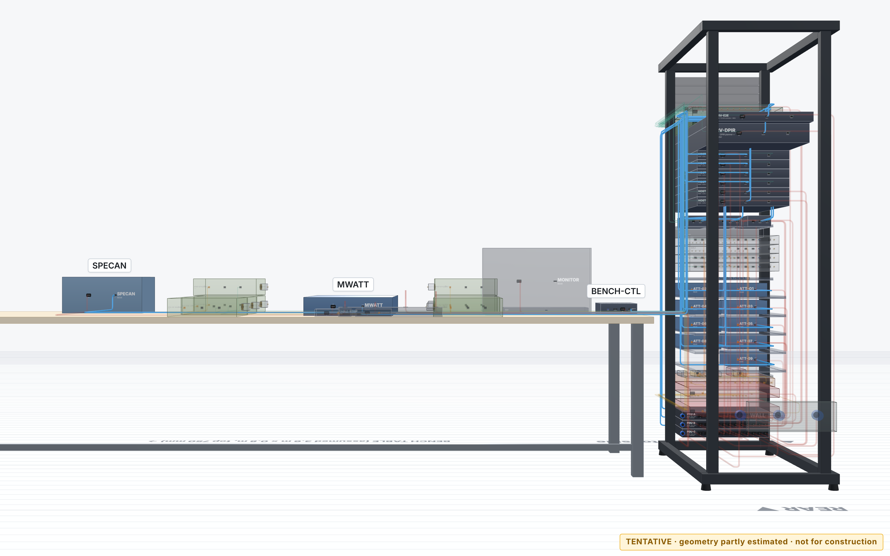

After step 16, rack rear straight on: items and cables of this step highlighted; every U labelled beside the rack.

Where the cable ends land in the rack
Cable ends of this step per rack item, top to bottom. Ends on the bench table are in the table that follows.
| Rack item | U | Cable ends |
|---|---|---|
| SW-OOB | U26 | 19 |
| SRV-E2E | U25 | 1 |
| SRV-DPIR | U23-U24 | 1 |
| HOST-W1 | U22 | 1 |
| HOST-W2 | U21 | 1 |
| HOST-E1 | U20 | 1 |
| HOST-E2 | U19 | 1 |
| HOST-S | U18 | 1 |
| HOST-N | U17 | 1 |
| AGENTS | U15-U16 | 6 |
| PDU-A | U3 | 1 |
| PDU-B | U2 | 1 |
| PDU-C | U1 | 1 |
Connect these 19 cables
| ID | From | To | Part | Length · route mm | VLAN / note |
|---|---|---|---|---|---|
| E001 | AGENT-W1.mgmt | SW-OOB.P1 | Panduit STP6X3MBU Cat6A S/FTP 3 m | 3 m · route 2618 | VLAN 100 agent PC logging; length from the twin route (2618 mm) |
| E002 | HOST-W1.mgmt | SW-OOB.P2 | Panduit STP6X2MBU Cat6A S/FTP 2 m | 2 m · route 1493 | VLAN 100 traffic host control; length from the twin route (1493 mm) |
| E003 | AGENT-W2.mgmt | SW-OOB.P3 | Panduit STP6X3MBU Cat6A S/FTP 3 m | 3 m · route 2493 | VLAN 100 agent PC logging; length from the twin route (2493 mm) |
| E004 | HOST-W2.mgmt | SW-OOB.P4 | Panduit STP6X2MBU Cat6A S/FTP 2 m | 2 m · route 1546 | VLAN 100 traffic host control; length from the twin route (1546 mm) |
| E005 | AGENT-E1.mgmt | SW-OOB.P5 | Panduit STP6X3MBU Cat6A S/FTP 3 m | 3 m · route 2368 | VLAN 100 agent PC logging; length from the twin route (2368 mm) |
| E006 | HOST-E1.mgmt | SW-OOB.P6 | Panduit STP6X2MBU Cat6A S/FTP 2 m | 2 m · route 1600 | VLAN 100 traffic host control; length from the twin route (1600 mm) |
| E007 | AGENT-E2.mgmt | SW-OOB.P7 | Panduit STP6X3MBU Cat6A S/FTP 3 m | 3 m · route 2170 | VLAN 100 agent PC logging; length from the twin route (2170 mm) |
| E008 | HOST-E2.mgmt | SW-OOB.P8 | Panduit STP6X2MBU Cat6A S/FTP 2 m | 2 m · route 1605 | VLAN 100 traffic host control; length from the twin route (1605 mm) |
| E009 | AGENT-S.mgmt | SW-OOB.P9 | Panduit STP6X3MBU Cat6A S/FTP 3 m | 3 m · route 1981 | VLAN 100 agent PC logging; length from the twin route (1981 mm) |
| E010 | HOST-S.mgmt | SW-OOB.P10 | Panduit STP6X2MBU Cat6A S/FTP 2 m | 2 m · route 1611 | VLAN 100 traffic host control; length from the twin route (1611 mm) |
| E011 | AGENT-N.mgmt | SW-OOB.P11 | Panduit STP6X3MBU Cat6A S/FTP 3 m | 3 m · route 1840 | VLAN 100 agent PC logging; length from the twin route (1840 mm) |
| E012 | HOST-N.mgmt | SW-OOB.P12 | Panduit STP6X2MBU Cat6A S/FTP 2 m | 2 m · route 1664 | VLAN 100 traffic host control; length from the twin route (1664 mm) |
| E013 | SRV-E2E.mgmt | SW-OOB.P13 | Panduit STP6X2MBU Cat6A S/FTP 2 m | 2 m · route 944 | VLAN 100 server management; length from the twin route (944 mm) dead after t0 |
| E014 | SRV-DPIR.mgmt | SW-OOB.P14 | Panduit STP6X2MBU Cat6A S/FTP 2 m | 2 m · route 1061 | VLAN 100 server management; length from the twin route (1061 mm) dead after t0 |
| E015 | BENCH-CTL.mgmt | SW-OOB.P15 | Panduit STP6X3MBU Cat6A S/FTP 3 m | 3 m · route 1887 | VLAN 100 bench controller: PDU control, logging |
| E016 | PDU-A.net | SW-OOB.P16 | Panduit STP6X2MBU Cat6A S/FTP 2 m | 2 m · route 1630 | VLAN 100 PDU management, outlet switching |
| E017 | PDU-B.net | SW-OOB.P17 | Panduit STP6X2MBU Cat6A S/FTP 2 m | 2 m · route 1635 | VLAN 100 PDU management, outlet switching |
| E018 | PDU-C.net | SW-OOB.P18 | Panduit STP6X2MBU Cat6A S/FTP 2 m | 2 m · route 1680 | VLAN 100 PDU management, outlet switching |
| E019 | SPECAN.lan | SW-OOB.P19 | Panduit STP6X7MBU Cat6A S/FTP 7 m | 7 m · route 5160 | VLAN 100 analyser; length from the twin route (5160 mm) |
SW-OOB ports as they sit on the switch

Mounting. SW-OOB: ears on the FRONT posts, body reaching 900 mm back; its ports face the REAR, 900 mm behind the front rail (0 mm in front of the rear posts): reach in from the rear. Alternative if the lab prefers: ears on the REAR posts, ports flush with the rear (TBC: open question 7). Odd ports top row, even below; seen from the rear port 1 is on the RIGHT.
Cable: GNSS
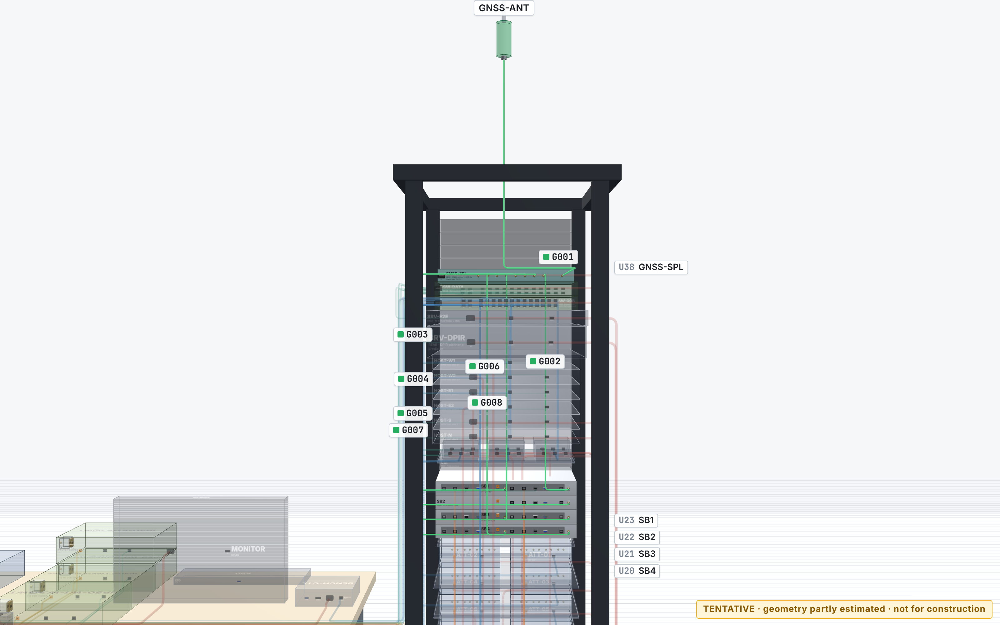

After step 17, rack rear straight on: items and cables of this step highlighted; every U labelled beside the rack.
Connect these 10 cables
| ID | From | To | Part | Length · route mm | VLAN / note |
|---|---|---|---|---|---|
| B003 | GNSS-ARR.gnd | LAB-EARTH.bar2 | green/yellow earth cable 6 mm2 (10 AWG) with ring lugs, short and straight, no loops | 0.25 m (cut) · route 113 | GNSS surge arrestor ground lug to the lab earth bar; fitted BEFORE the antenna lead is connected (if the building has its own entry arrestor, bond to that: facilities) |
| G001 | GNSS-ANT | GNSS-ARR.ant | LMR-400 antenna lead, N connectors (part TBC), from the roof antenna to the surge arrestor where the lead enters the room | site · route 2003 | connect it at the arrestor only after the arrestor's earth bond is fitted |
| G002 | GNSS-SPL.out1 | SB1.W1.GNSS | RG-316 SMA coax 2.5 m (part TBC) | 2.5 m · route 1868 | only if the node's rear SMA is a GNSS input (TBC); length from the twin route (1868 mm) |
| G003 | GNSS-SPL.out2 | SB1.W2.GNSS | RG-316 SMA coax 2 m (part TBC) | 2 m · route 1654 | only if the node's rear SMA is a GNSS input (TBC); length from the twin route (1654 mm) |
| G004 | GNSS-SPL.out3 | SB2.HUB.GNSS | RG-316 SMA coax 2.5 m (part TBC) | 2.5 m · route 1880 | only if the node's rear SMA is a GNSS input (TBC); length from the twin route (1880 mm) |
| G005 | GNSS-SPL.out4 | SB3.S.GNSS | RG-316 SMA coax 2.5 m (part TBC) | 2.5 m · route 1909 | only if the node's rear SMA is a GNSS input (TBC); length from the twin route (1909 mm) |
| G006 | GNSS-SPL.out5 | SB3.N.GNSS | RG-316 SMA coax 2 m (part TBC) | 2 m · route 1695 | only if the node's rear SMA is a GNSS input (TBC); length from the twin route (1695 mm) |
| G007 | GNSS-SPL.out6 | SB4.E1.GNSS | RG-316 SMA coax 2.5 m (part TBC) | 2.5 m · route 1873 | only if the node's rear SMA is a GNSS input (TBC); length from the twin route (1873 mm) |
| G008 | GNSS-SPL.out7 | SB4.E2.GNSS | RG-316 SMA coax 2 m (part TBC) | 2 m · route 1659 | only if the node's rear SMA is a GNSS input (TBC); length from the twin route (1659 mm) |
| G009 | GNSS-ARR.eqp | GNSS-SPL.in | LMR-240 coax jumper, N-male (arrestor) to the splitter input (connector TBC), 3 m (part TBC) | 3 m · route 2043 | arrestor (equipment side) to the splitter input; the splitter feeds the antenna DC through the arrestor |
GNSS-SPL rear, port by port

Antenna. GNSS-ANT (101898-00 roof antenna; its LMR-400 lead comes down behind the wall to the arrestor): roof or window mount with a clear view of the sky (site work); the lead comes down to the rack through the surge arrestor, whose earth lug goes to the building earth bar with a short, straight lead (size per the arrestor datasheet, TBC).
Cable: Operator station

Connect these 2 cables
| ID | From | To | Part | Length · route mm | VLAN / note |
|---|---|---|---|---|---|
| X001 | BENCH-CTL.video | MONITOR.in | DisplayPort / HDMI cable 1.8 m (part TBC) | 1.8 m · route 618 | operator station |
| X002 | KBD.usb | BENCH-CTL.usb | USB keyboard + mouse (cables attached) | 1.5 m · route 759 | operator station |
IF link HUB-W1 (20 + 8 dB pads)
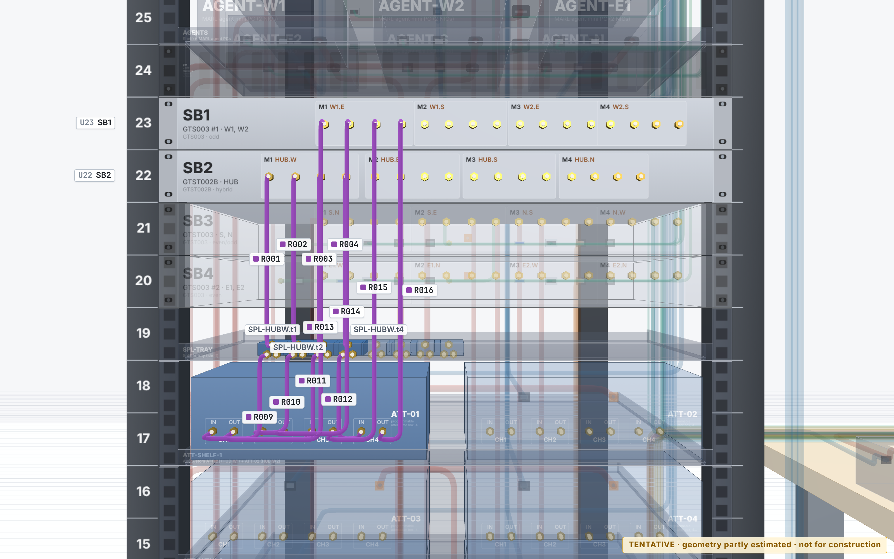
Tile mapping: tile n → pad stack n → tile n (n = 1-4)
HUB-W1 (HUB.W → W1.E) is a hub path: it goes down at t0 with the hub (its PoE injector outlet is switched off), so it carries the A7 'before' setting: target 27.6 dB, rounded to 28 dB (nearest whole dB), fitted 20 + 8 = 28 dB (BW-S20W2+ + BW-S8W2+) on every tile path; all links: pad schedule. From the A-side (hub) tile through the splitter and the cable to the pad stack screwed onto the B-side tile. 3D view: poc1_renders/link_HUB-W1.png (or search R001 in the twin and press "Trace signal": the trace runs through the pad stack).
| Tile | A side: tile, sector | A tile → stack | Pad stack (dB, tile end first) | Stack → B tile | B side: tile, sector |
|---|---|---|---|---|---|
| 1 | SB2.M1.T1 HUB.W | R001 → SPL-HUBW.t1 (S→P1) → R009 | PAD-HUB-W1.t1 · 20 + 8 dB IN on SB1.M1.T1 | stack screwed onto the tile | SB1.M1.T1 W1.E |
| 2 | SB2.M1.T2 HUB.W | R002 → SPL-HUBW.t2 (S→P1) → R010 | PAD-HUB-W1.t2 · 20 + 8 dB IN on SB1.M1.T2 | stack screwed onto the tile | SB1.M1.T2 W1.E |
| 3 | SB2.M1.T3 HUB.W | R003 → SPL-HUBW.t3 (S→P1) → R011 | PAD-HUB-W1.t3 · 20 + 8 dB IN on SB1.M1.T3 | stack screwed onto the tile | SB1.M1.T3 W1.E |
| 4 | SB2.M1.T4 HUB.W | R004 → SPL-HUBW.t4 (S→P1) → R012 | PAD-HUB-W1.t4 · 20 + 8 dB IN on SB1.M1.T4 | stack screwed onto the tile | SB1.M1.T4 W1.E |

 A1A2A3A4B1B2B3B4
A1A2A3A4B1B2B3B4Connect these 8 cables
| ID | From | To | Part | Length · route mm | VLAN / note |
|---|---|---|---|---|---|
| R001 | SB2.M1.T1 | SPL-HUBW.t1.S | Mini-Circuits CBL-3FT-SMSM+ | 0.91 m · route 404 | HUB.W tile 1 to its splitter; span 3U, needs 0.82 m (twin route) |
| R002 | SB2.M1.T2 | SPL-HUBW.t2.S | Mini-Circuits CBL-3FT-SMSM+ | 0.91 m · route 531 | HUB.W tile 2 to its splitter; span 3U, needs 0.82 m (twin route) |
| R003 | SB2.M1.T3 | SPL-HUBW.t3.S | Mini-Circuits CBL-3FT-SMSM+ | 0.91 m · route 657 | HUB.W tile 3 to its splitter; span 3U, needs 0.82 m (twin route) |
| R004 | SB2.M1.T4 | SPL-HUBW.t4.S | Mini-Circuits CBL-3FT-SMSM+ | 0.91 m · route 783 | HUB.W tile 4 to its splitter; span 3U, needs 0.82 m (twin route) |
| R009 | SPL-HUBW.t1.P1 | PAD-HUB-W1.t1.out | Mini-Circuits CBL-4FT-SMSM+ | 1.22 m · route 663 | HUB-W1 tile 1: from SPL-HUBW.t1 P1 to the 20 + 8 dB pad stack on W1.E tile 1 (SB1.M1.T1); span 4U, needs 1.09 m (twin route) |
| R010 | SPL-HUBW.t2.P1 | PAD-HUB-W1.t2.out | Mini-Circuits CBL-4FT-SMSM+ | 1.22 m · route 789 | HUB-W1 tile 2: from SPL-HUBW.t2 P1 to the 20 + 8 dB pad stack on W1.E tile 2 (SB1.M1.T2); span 4U, needs 1.09 m (twin route) |
| R011 | SPL-HUBW.t3.P1 | PAD-HUB-W1.t3.out | Mini-Circuits CBL-4FT-SMSM+ | 1.22 m · route 916 | HUB-W1 tile 3: from SPL-HUBW.t3 P1 to the 20 + 8 dB pad stack on W1.E tile 3 (SB1.M1.T3); span 4U, needs 1.09 m (twin route) |
| R012 | SPL-HUBW.t4.P1 | PAD-HUB-W1.t4.out | Mini-Circuits CBL-4FT-SMSM+ | 1.22 m · route 1042 | HUB-W1 tile 4: from SPL-HUBW.t4 P1 to the 20 + 8 dB pad stack on W1.E tile 4 (SB1.M1.T4); span 4U, needs 1.09 m (twin route) |
IF link HUB-W2 (20 + 3 dB pads)
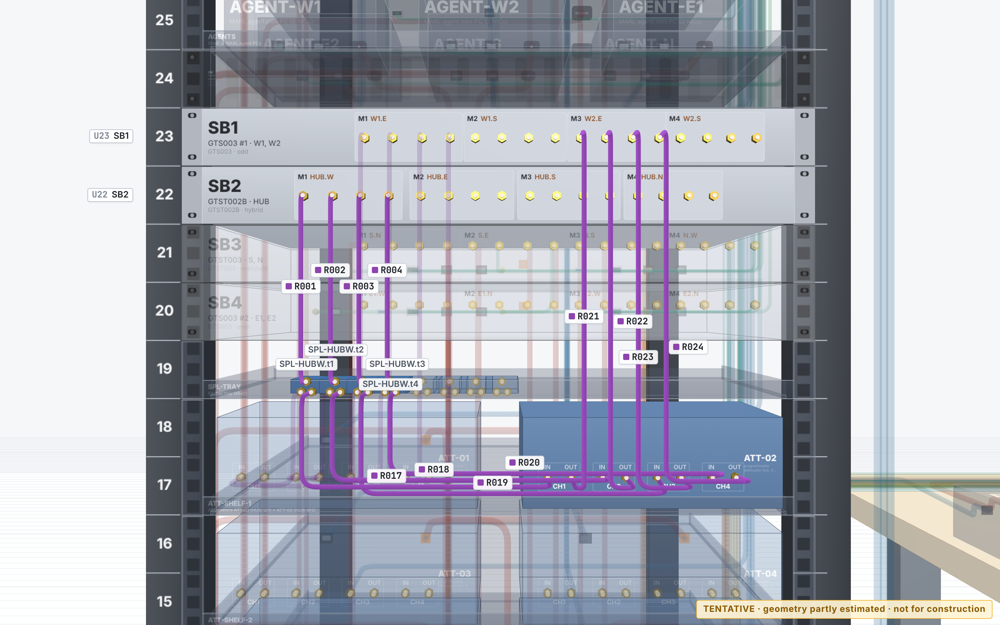
Tile mapping: tile n → pad stack n → tile n (n = 1-4)
HUB-W2 (HUB.W → W2.E) is a hub path: it goes down at t0 with the hub (its PoE injector outlet is switched off), so it carries the A7 'before' setting: target 23.1 dB, rounded to 23 dB (nearest whole dB), fitted 20 + 3 = 23 dB (BW-S20W2+ + BW-S3W2+) on every tile path; all links: pad schedule. From the A-side (hub) tile through the splitter and the cable to the pad stack screwed onto the B-side tile. 3D view: poc1_renders/link_HUB-W2.png (or search R013 in the twin and press "Trace signal": the trace runs through the pad stack).
| Tile | A side: tile, sector | A tile → stack | Pad stack (dB, tile end first) | Stack → B tile | B side: tile, sector |
|---|---|---|---|---|---|
| 1 | SB2.M1.T1 HUB.W | R001 → SPL-HUBW.t1 (S→P2) → R013 | PAD-HUB-W2.t1 · 20 + 3 dB IN on SB1.M3.T1 | stack screwed onto the tile | SB1.M3.T1 W2.E |
| 2 | SB2.M1.T2 HUB.W | R002 → SPL-HUBW.t2 (S→P2) → R014 | PAD-HUB-W2.t2 · 20 + 3 dB IN on SB1.M3.T2 | stack screwed onto the tile | SB1.M3.T2 W2.E |
| 3 | SB2.M1.T3 HUB.W | R003 → SPL-HUBW.t3 (S→P2) → R015 | PAD-HUB-W2.t3 · 20 + 3 dB IN on SB1.M3.T3 | stack screwed onto the tile | SB1.M3.T3 W2.E |
| 4 | SB2.M1.T4 HUB.W | R004 → SPL-HUBW.t4 (S→P2) → R016 | PAD-HUB-W2.t4 · 20 + 3 dB IN on SB1.M3.T4 | stack screwed onto the tile | SB1.M3.T4 W2.E |

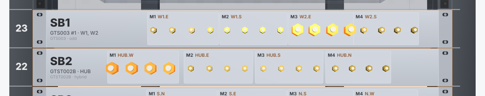
A1A2A3A4B1B2B3B4Connect these 4 cables
| ID | From | To | Part | Length · route mm | VLAN / note |
|---|---|---|---|---|---|
| R013 | SPL-HUBW.t1.P2 | PAD-HUB-W2.t1.out | Mini-Circuits CBL-5FT-SMSM+ | 1.52 m · route 875 | HUB-W2 tile 1: from SPL-HUBW.t1 P2 to the 20 + 3 dB pad stack on W2.E tile 1 (SB1.M3.T1); span 4U, needs 1.31 m (twin route) |
| R014 | SPL-HUBW.t2.P2 | PAD-HUB-W2.t2.out | Mini-Circuits CBL-5FT-SMSM+ | 1.52 m · route 999 | HUB-W2 tile 2: from SPL-HUBW.t2 P2 to the 20 + 3 dB pad stack on W2.E tile 2 (SB1.M3.T2); span 4U, needs 1.31 m (twin route) |
| R015 | SPL-HUBW.t3.P2 | PAD-HUB-W2.t3.out | Mini-Circuits CBL-5FT-SMSM+ | 1.52 m · route 1124 | HUB-W2 tile 3: from SPL-HUBW.t3 P2 to the 20 + 3 dB pad stack on W2.E tile 3 (SB1.M3.T3); span 4U, needs 1.31 m (twin route) |
| R016 | SPL-HUBW.t4.P2 | PAD-HUB-W2.t4.out | Mini-Circuits CBL-5FT-SMSM+ | 1.52 m · route 1249 | HUB-W2 tile 4: from SPL-HUBW.t4 P2 to the 20 + 3 dB pad stack on W2.E tile 4 (SB1.M3.T4); span 4U, needs 1.31 m (twin route) |
IF link HUB-E1 (20 + 8 dB pads)

Tile mapping: tile n → pad stack n → tile n (n = 1-4)
HUB-E1 (HUB.E → E1.W) is a hub path: it goes down at t0 with the hub (its PoE injector outlet is switched off), so it carries the A7 'before' setting: target 27.6 dB, rounded to 28 dB (nearest whole dB), fitted 20 + 8 = 28 dB (BW-S20W2+ + BW-S8W2+) on every tile path; all links: pad schedule. From the A-side (hub) tile through the splitter and the cable to the pad stack screwed onto the B-side tile. 3D view: poc1_renders/link_HUB-E1.png (or search R005 in the twin and press "Trace signal": the trace runs through the pad stack).
| Tile | A side: tile, sector | A tile → stack | Pad stack (dB, tile end first) | Stack → B tile | B side: tile, sector |
|---|---|---|---|---|---|
| 1 | SB2.M2.T1 HUB.E | R005 → SPL-HUBE.t1 (S→P1) → R017 | PAD-HUB-E1.t1 · 20 + 8 dB IN on SB4.M1.T1 | stack screwed onto the tile | SB4.M1.T1 E1.W |
| 2 | SB2.M2.T2 HUB.E | R006 → SPL-HUBE.t2 (S→P1) → R018 | PAD-HUB-E1.t2 · 20 + 8 dB IN on SB4.M1.T2 | stack screwed onto the tile | SB4.M1.T2 E1.W |
| 3 | SB2.M2.T3 HUB.E | R007 → SPL-HUBE.t3 (S→P1) → R019 | PAD-HUB-E1.t3 · 20 + 8 dB IN on SB4.M1.T3 | stack screwed onto the tile | SB4.M1.T3 E1.W |
| 4 | SB2.M2.T4 HUB.E | R008 → SPL-HUBE.t4 (S→P1) → R020 | PAD-HUB-E1.t4 · 20 + 8 dB IN on SB4.M1.T4 | stack screwed onto the tile | SB4.M1.T4 E1.W |

 A1A2A3A4B1B2B3B4
A1A2A3A4B1B2B3B4Connect these 8 cables
| ID | From | To | Part | Length · route mm | VLAN / note |
|---|---|---|---|---|---|
| R005 | SB2.M2.T1 | SPL-HUBE.t1.S | Mini-Circuits CBL-4FT-SMSM+ | 1.22 m · route 580 | HUB.E tile 1 to its splitter; span 3U, needs 1.00 m (twin route) |
| R006 | SB2.M2.T2 | SPL-HUBE.t2.S | Mini-Circuits CBL-4FT-SMSM+ | 1.22 m · route 706 | HUB.E tile 2 to its splitter; span 3U, needs 1.00 m (twin route) |
| R007 | SB2.M2.T3 | SPL-HUBE.t3.S | Mini-Circuits CBL-4FT-SMSM+ | 1.22 m · route 831 | HUB.E tile 3 to its splitter; span 3U, needs 1.00 m (twin route) |
| R008 | SB2.M2.T4 | SPL-HUBE.t4.S | Mini-Circuits CBL-4FT-SMSM+ | 1.22 m · route 956 | HUB.E tile 4 to its splitter; span 3U, needs 1.00 m (twin route) |
| R017 | SPL-HUBE.t1.P1 | PAD-HUB-E1.t1.out | Mini-Circuits CBL-4FT-SMSM+ | 1.22 m · route 646 | HUB-E1 tile 1: from SPL-HUBE.t1 P1 to the 20 + 8 dB pad stack on E1.W tile 1 (SB4.M1.T1); span 1U, needs 1.08 m (twin route) |
| R018 | SPL-HUBE.t2.P1 | PAD-HUB-E1.t2.out | Mini-Circuits CBL-4FT-SMSM+ | 1.22 m · route 774 | HUB-E1 tile 2: from SPL-HUBE.t2 P1 to the 20 + 8 dB pad stack on E1.W tile 2 (SB4.M1.T2); span 1U, needs 1.08 m (twin route) |
| R019 | SPL-HUBE.t3.P1 | PAD-HUB-E1.t3.out | Mini-Circuits CBL-4FT-SMSM+ | 1.22 m · route 898 | HUB-E1 tile 3: from SPL-HUBE.t3 P1 to the 20 + 8 dB pad stack on E1.W tile 3 (SB4.M1.T3); span 1U, needs 1.08 m (twin route) |
| R020 | SPL-HUBE.t4.P1 | PAD-HUB-E1.t4.out | Mini-Circuits CBL-4FT-SMSM+ | 1.22 m · route 1024 | HUB-E1 tile 4: from SPL-HUBE.t4 P1 to the 20 + 8 dB pad stack on E1.W tile 4 (SB4.M1.T4); span 1U, needs 1.08 m (twin route) |
IF link HUB-E2 (20 + 3 dB pads)

Tile mapping: tile n → pad stack n → tile n (n = 1-4)
HUB-E2 (HUB.E → E2.W) is a hub path: it goes down at t0 with the hub (its PoE injector outlet is switched off), so it carries the A7 'before' setting: target 23.1 dB, rounded to 23 dB (nearest whole dB), fitted 20 + 3 = 23 dB (BW-S20W2+ + BW-S3W2+) on every tile path; all links: pad schedule. From the A-side (hub) tile through the splitter and the cable to the pad stack screwed onto the B-side tile. 3D view: poc1_renders/link_HUB-E2.png (or search R021 in the twin and press "Trace signal": the trace runs through the pad stack).
| Tile | A side: tile, sector | A tile → stack | Pad stack (dB, tile end first) | Stack → B tile | B side: tile, sector |
|---|---|---|---|---|---|
| 1 | SB2.M2.T1 HUB.E | R005 → SPL-HUBE.t1 (S→P2) → R021 | PAD-HUB-E2.t1 · 20 + 3 dB IN on SB4.M3.T1 | stack screwed onto the tile | SB4.M3.T1 E2.W |
| 2 | SB2.M2.T2 HUB.E | R006 → SPL-HUBE.t2 (S→P2) → R022 | PAD-HUB-E2.t2 · 20 + 3 dB IN on SB4.M3.T2 | stack screwed onto the tile | SB4.M3.T2 E2.W |
| 3 | SB2.M2.T3 HUB.E | R007 → SPL-HUBE.t3 (S→P2) → R023 | PAD-HUB-E2.t3 · 20 + 3 dB IN on SB4.M3.T3 | stack screwed onto the tile | SB4.M3.T3 E2.W |
| 4 | SB2.M2.T4 HUB.E | R008 → SPL-HUBE.t4 (S→P2) → R024 | PAD-HUB-E2.t4 · 20 + 3 dB IN on SB4.M3.T4 | stack screwed onto the tile | SB4.M3.T4 E2.W |

 A1A2A3A4B1B2B3B4
A1A2A3A4B1B2B3B4Connect these 4 cables
| ID | From | To | Part | Length · route mm | VLAN / note |
|---|---|---|---|---|---|
| R021 | SPL-HUBE.t1.P2 | PAD-HUB-E2.t1.out | Mini-Circuits CBL-5FT-SMSM+ | 1.52 m · route 849 | HUB-E2 tile 1: from SPL-HUBE.t1 P2 to the 20 + 3 dB pad stack on E2.W tile 1 (SB4.M3.T1); span 1U, needs 1.28 m (twin route) |
| R022 | SPL-HUBE.t2.P2 | PAD-HUB-E2.t2.out | Mini-Circuits CBL-5FT-SMSM+ | 1.52 m · route 974 | HUB-E2 tile 2: from SPL-HUBE.t2 P2 to the 20 + 3 dB pad stack on E2.W tile 2 (SB4.M3.T2); span 1U, needs 1.28 m (twin route) |
| R023 | SPL-HUBE.t3.P2 | PAD-HUB-E2.t3.out | Mini-Circuits CBL-5FT-SMSM+ | 1.52 m · route 1098 | HUB-E2 tile 3: from SPL-HUBE.t3 P2 to the 20 + 3 dB pad stack on E2.W tile 3 (SB4.M3.T3); span 1U, needs 1.28 m (twin route) |
| R024 | SPL-HUBE.t4.P2 | PAD-HUB-E2.t4.out | Mini-Circuits CBL-5FT-SMSM+ | 1.52 m · route 1222 | HUB-E2 tile 4: from SPL-HUBE.t4 P2 to the 20 + 3 dB pad stack on E2.W tile 4 (SB4.M3.T4); span 1U, needs 1.28 m (twin route) |
IF link HUB-S (30 + 5 dB pads)

Tile mapping: tile n → pad stack n → tile n (n = 1-4)
HUB-S (HUB.S → S.N) is a hub path: it goes down at t0 with the hub (its PoE injector outlet is switched off), so it carries the A7 'before' setting: target 34.5 dB, rounded to 35 dB (nearest whole dB, tie rounded up), fitted 30 + 5 = 35 dB (BW-S30W2+ + BW-S5W2+) on every tile path; all links: pad schedule. From the pad stack screwed onto the A-side tile, through the cable to the B-side tile. 3D view: poc1_renders/link_HUB-S.png (or search R025 in the twin and press "Trace signal": the trace runs through the pad stack).
| Tile | A side: tile, sector | A tile → stack | Pad stack (dB, tile end first) | Stack → B tile | B side: tile, sector |
|---|---|---|---|---|---|
| 1 | SB2.M3.T1 HUB.S | stack screwed onto the tile | PAD-HUB-S.t1 · 30 + 5 dB IN on SB2.M3.T1 | R025 | SB3.M1.T1 S.N |
| 2 | SB2.M3.T2 HUB.S | stack screwed onto the tile | PAD-HUB-S.t2 · 30 + 5 dB IN on SB2.M3.T2 | R026 | SB3.M1.T2 S.N |
| 3 | SB2.M3.T3 HUB.S | stack screwed onto the tile | PAD-HUB-S.t3 · 30 + 5 dB IN on SB2.M3.T3 | R027 | SB3.M1.T3 S.N |
| 4 | SB2.M3.T4 HUB.S | stack screwed onto the tile | PAD-HUB-S.t4 · 30 + 5 dB IN on SB2.M3.T4 | R028 | SB3.M1.T4 S.N |

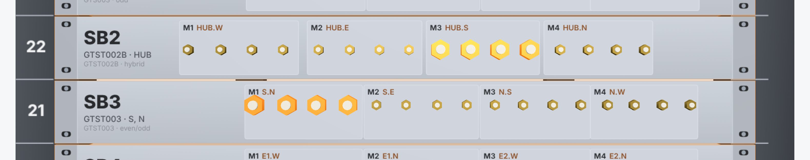
A1A2A3A4B1B2B3B4Connect these 4 cables
| ID | From | To | Part | Length · route mm | VLAN / note |
|---|---|---|---|---|---|
| R025 | PAD-HUB-S.t1.out | SB3.M1.T1 | Mini-Circuits CBL-3FT-SMSM+ | 0.91 m · route 686 | HUB-S tile 1: from the 30 + 5 dB pad stack on SB2.M3.T1 to S.N tile 1; span 1U, needs 0.85 m (twin route) |
| R026 | PAD-HUB-S.t2.out | SB3.M1.T2 | Mini-Circuits CBL-3FT-SMSM+ | 0.91 m · route 728 | HUB-S tile 2: from the 30 + 5 dB pad stack on SB2.M3.T2 to S.N tile 2; span 1U, needs 0.85 m (twin route) |
| R027 | PAD-HUB-S.t3.out | SB3.M1.T3 | Mini-Circuits CBL-3FT-SMSM+ | 0.91 m · route 768 | HUB-S tile 3: from the 30 + 5 dB pad stack on SB2.M3.T3 to S.N tile 3; span 1U, needs 0.85 m (twin route) |
| R028 | PAD-HUB-S.t4.out | SB3.M1.T4 | Mini-Circuits CBL-3FT-SMSM+ | 0.91 m · route 808 | HUB-S tile 4: from the 30 + 5 dB pad stack on SB2.M3.T4 to S.N tile 4; span 1U, needs 0.85 m (twin route) |
IF link HUB-N (30 + 7 dB pads)

Tile mapping: tile n → pad stack n → tile n (n = 1-4)
HUB-N (HUB.N → N.S) is a hub path: it goes down at t0 with the hub (its PoE injector outlet is switched off), so it carries the A7 'before' setting: target 37.2 dB, rounded to 37 dB (nearest whole dB), fitted 30 + 7 = 37 dB (BW-S30W2+ + BW-S7W2+) on every tile path; all links: pad schedule. From the pad stack screwed onto the A-side tile, through the cable to the B-side tile. 3D view: poc1_renders/link_HUB-N.png (or search R029 in the twin and press "Trace signal": the trace runs through the pad stack).
| Tile | A side: tile, sector | A tile → stack | Pad stack (dB, tile end first) | Stack → B tile | B side: tile, sector |
|---|---|---|---|---|---|
| 1 | SB2.M4.T1 HUB.N | stack screwed onto the tile | PAD-HUB-N.t1 · 30 + 7 dB IN on SB2.M4.T1 | R029 | SB3.M3.T1 N.S |
| 2 | SB2.M4.T2 HUB.N | stack screwed onto the tile | PAD-HUB-N.t2 · 30 + 7 dB IN on SB2.M4.T2 | R030 | SB3.M3.T2 N.S |
| 3 | SB2.M4.T3 HUB.N | stack screwed onto the tile | PAD-HUB-N.t3 · 30 + 7 dB IN on SB2.M4.T3 | R031 | SB3.M3.T3 N.S |
| 4 | SB2.M4.T4 HUB.N | stack screwed onto the tile | PAD-HUB-N.t4 · 30 + 7 dB IN on SB2.M4.T4 | R032 | SB3.M3.T4 N.S |

 A1A2A3A4B1B2B3B4
A1A2A3A4B1B2B3B4Connect these 4 cables
| ID | From | To | Part | Length · route mm | VLAN / note |
|---|---|---|---|---|---|
| R029 | PAD-HUB-N.t1.out | SB3.M3.T1 | Mini-Circuits CBL-3FT-SMSM+ | 0.91 m · route 614 | HUB-N tile 1: from the 30 + 7 dB pad stack on SB2.M4.T1 to N.S tile 1; span 1U, needs 0.64 m (twin route) |
| R030 | PAD-HUB-N.t2.out | SB3.M3.T2 | Mini-Circuits CBL-3FT-SMSM+ | 0.91 m · route 576 | HUB-N tile 2: from the 30 + 7 dB pad stack on SB2.M4.T2 to N.S tile 2; span 1U, needs 0.64 m (twin route) |
| R031 | PAD-HUB-N.t3.out | SB3.M3.T3 | Mini-Circuits CBL-3FT-SMSM+ | 0.91 m · route 537 | HUB-N tile 3: from the 30 + 7 dB pad stack on SB2.M4.T3 to N.S tile 3; span 1U, needs 0.64 m (twin route) |
| R032 | PAD-HUB-N.t4.out | SB3.M3.T4 | Mini-Circuits CBL-3FT-SMSM+ | 0.91 m · route 499 | HUB-N tile 4: from the 30 + 7 dB pad stack on SB2.M4.T4 to N.S tile 4; span 1U, needs 0.64 m (twin route) |
IF link E2-W2 (30 + 1 dB pads)
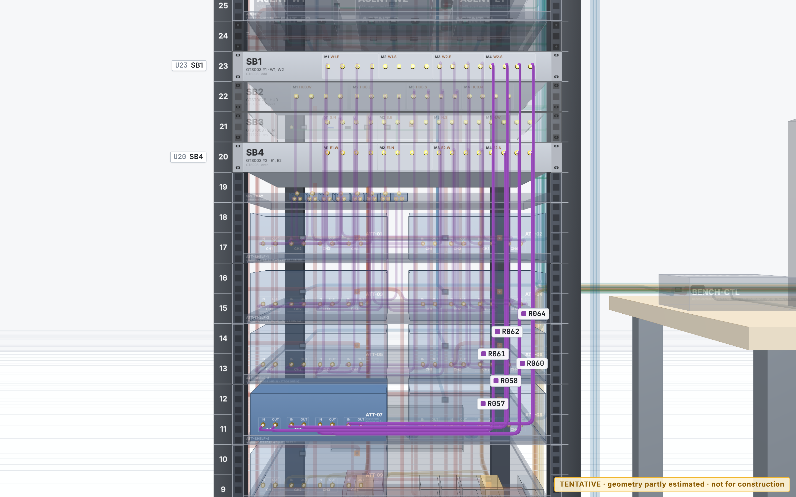
Tile mapping: tile n → pad stack n → tile n (n = 1-4)
E2-W2 (E2.N → W2.S) is a bridge between surviving nodes: held down before t0 with Terragraph ignition disabled; after t0 (SRV-E2E off) MARL engages it at node level from its A-end agent PC (tg2 minion assoc), so it carries the A7 'after' setting: target 30.7 dB, rounded to 31 dB (nearest whole dB), fitted 30 + 1 = 31 dB (BW-S30W2+ + BW-S1W2+) on every tile path; all links: pad schedule. From the pad stack screwed onto the A-side tile, through the cable to the B-side tile. 3D view: poc1_renders/link_E2-W2.png (or search R033 in the twin and press "Trace signal": the trace runs through the pad stack).
| Tile | A side: tile, sector | A tile → stack | Pad stack (dB, tile end first) | Stack → B tile | B side: tile, sector |
|---|---|---|---|---|---|
| 1 | SB4.M4.T1 E2.N | stack screwed onto the tile | PAD-E2-W2.t1 · 30 + 1 dB IN on SB4.M4.T1 | R033 | SB1.M4.T1 W2.S |
| 2 | SB4.M4.T2 E2.N | stack screwed onto the tile | PAD-E2-W2.t2 · 30 + 1 dB IN on SB4.M4.T2 | R034 | SB1.M4.T2 W2.S |
| 3 | SB4.M4.T3 E2.N | stack screwed onto the tile | PAD-E2-W2.t3 · 30 + 1 dB IN on SB4.M4.T3 | R035 | SB1.M4.T3 W2.S |
| 4 | SB4.M4.T4 E2.N | stack screwed onto the tile | PAD-E2-W2.t4 · 30 + 1 dB IN on SB4.M4.T4 | R036 | SB1.M4.T4 W2.S |

 A1A2A3A4B1B2B3B4
A1A2A3A4B1B2B3B4Connect these 4 cables
| ID | From | To | Part | Length · route mm | VLAN / note |
|---|---|---|---|---|---|
| R033 | PAD-E2-W2.t1.out | SB1.M4.T1 | Mini-Circuits CBL-3FT-SMSM+ | 0.91 m · route 610 | E2-W2 tile 1: from the 30 + 1 dB pad stack on SB4.M4.T1 to W2.S tile 1; span 3U, needs 0.64 m (twin route) |
| R034 | PAD-E2-W2.t2.out | SB1.M4.T2 | Mini-Circuits CBL-3FT-SMSM+ | 0.91 m · route 572 | E2-W2 tile 2: from the 30 + 1 dB pad stack on SB4.M4.T2 to W2.S tile 2; span 3U, needs 0.64 m (twin route) |
| R035 | PAD-E2-W2.t3.out | SB1.M4.T3 | Mini-Circuits CBL-3FT-SMSM+ | 0.91 m · route 535 | E2-W2 tile 3: from the 30 + 1 dB pad stack on SB4.M4.T3 to W2.S tile 3; span 3U, needs 0.64 m (twin route) |
| R036 | PAD-E2-W2.t4.out | SB1.M4.T4 | Mini-Circuits CBL-3FT-SMSM+ | 0.91 m · route 497 | E2-W2 tile 4: from the 30 + 1 dB pad stack on SB4.M4.T4 to W2.S tile 4; span 3U, needs 0.64 m (twin route) |
IF link E1-N (30 + 4 dB pads)

Tile mapping: tile n → pad stack n → tile n (n = 1-4)
E1-N (E1.N → N.W) is a bridge between surviving nodes: held down before t0 with Terragraph ignition disabled; after t0 (SRV-E2E off) MARL engages it at node level from its A-end agent PC (tg2 minion assoc), so it carries the A7 'after' setting: target 34.1 dB, rounded to 34 dB (nearest whole dB), fitted 30 + 4 = 34 dB (BW-S30W2+ + BW-S4W2+) on every tile path; all links: pad schedule. From the pad stack screwed onto the A-side tile, through the cable to the B-side tile. 3D view: poc1_renders/link_E1-N.png (or search R037 in the twin and press "Trace signal": the trace runs through the pad stack).
| Tile | A side: tile, sector | A tile → stack | Pad stack (dB, tile end first) | Stack → B tile | B side: tile, sector |
|---|---|---|---|---|---|
| 1 | SB4.M2.T1 E1.N | stack screwed onto the tile | PAD-E1-N.t1 · 30 + 4 dB IN on SB4.M2.T1 | R037 | SB3.M4.T1 N.W |
| 2 | SB4.M2.T2 E1.N | stack screwed onto the tile | PAD-E1-N.t2 · 30 + 4 dB IN on SB4.M2.T2 | R038 | SB3.M4.T2 N.W |
| 3 | SB4.M2.T3 E1.N | stack screwed onto the tile | PAD-E1-N.t3 · 30 + 4 dB IN on SB4.M2.T3 | R039 | SB3.M4.T3 N.W |
| 4 | SB4.M2.T4 E1.N | stack screwed onto the tile | PAD-E1-N.t4 · 30 + 4 dB IN on SB4.M2.T4 | R040 | SB3.M4.T4 N.W |

 A1A2A3A4B1B2B3B4
A1A2A3A4B1B2B3B4Connect these 4 cables
| ID | From | To | Part | Length · route mm | VLAN / note |
|---|---|---|---|---|---|
| R037 | PAD-E1-N.t1.out | SB3.M4.T1 | Mini-Circuits CBL-3FT-SMSM+ | 0.91 m · route 701 | E1-N tile 1: from the 30 + 4 dB pad stack on SB4.M2.T1 to N.W tile 1; span 1U, needs 0.74 m (twin route) |
| R038 | PAD-E1-N.t2.out | SB3.M4.T2 | Mini-Circuits CBL-3FT-SMSM+ | 0.91 m · route 663 | E1-N tile 2: from the 30 + 4 dB pad stack on SB4.M2.T2 to N.W tile 2; span 1U, needs 0.74 m (twin route) |
| R039 | PAD-E1-N.t3.out | SB3.M4.T3 | Mini-Circuits CBL-3FT-SMSM+ | 0.91 m · route 623 | E1-N tile 3: from the 30 + 4 dB pad stack on SB4.M2.T3 to N.W tile 3; span 1U, needs 0.74 m (twin route) |
| R040 | PAD-E1-N.t4.out | SB3.M4.T4 | Mini-Circuits CBL-3FT-SMSM+ | 0.91 m · route 584 | E1-N tile 4: from the 30 + 4 dB pad stack on SB4.M2.T4 to N.W tile 4; span 1U, needs 0.74 m (twin route) |
IF link W1-S (30 + 12 dB pads)

Tile mapping: tile n → pad stack n → tile n (n = 1-4)
W1-S (W1.S → S.E) is a bridge between surviving nodes: held down before t0 with Terragraph ignition disabled; after t0 (SRV-E2E off) MARL engages it at node level from its A-end agent PC (tg2 minion assoc), so it carries the A7 'after' setting: target 41.2 dB, rounded to 41 dB (41 dB needs more than 2 pads: nearest total 2 pads make), fitted 30 + 12 = 42 dB (BW-S30W2+ + BW-S12W2+) on every tile path; all links: pad schedule. From the pad stack screwed onto the A-side tile, through the cable to the B-side tile. 3D view: poc1_renders/link_W1-S.png (or search R041 in the twin and press "Trace signal": the trace runs through the pad stack).
| Tile | A side: tile, sector | A tile → stack | Pad stack (dB, tile end first) | Stack → B tile | B side: tile, sector |
|---|---|---|---|---|---|
| 1 | SB1.M2.T1 W1.S | stack screwed onto the tile | PAD-W1-S.t1 · 30 + 12 dB IN on SB1.M2.T1 | R041 | SB3.M2.T1 S.E |
| 2 | SB1.M2.T2 W1.S | stack screwed onto the tile | PAD-W1-S.t2 · 30 + 12 dB IN on SB1.M2.T2 | R042 | SB3.M2.T2 S.E |
| 3 | SB1.M2.T3 W1.S | stack screwed onto the tile | PAD-W1-S.t3 · 30 + 12 dB IN on SB1.M2.T3 | R043 | SB3.M2.T3 S.E |
| 4 | SB1.M2.T4 W1.S | stack screwed onto the tile | PAD-W1-S.t4 · 30 + 12 dB IN on SB1.M2.T4 | R044 | SB3.M2.T4 S.E |

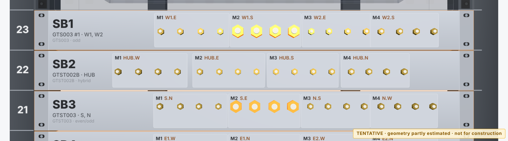
A1A2A3A4B1B2B3B4Connect these 4 cables
| ID | From | To | Part | Length · route mm | VLAN / note |
|---|---|---|---|---|---|
| R041 | PAD-W1-S.t1.out | SB3.M2.T1 | Mini-Circuits CBL-4FT-SMSM+ | 1.22 m · route 834 | W1-S tile 1: from the 30 + 12 dB pad stack on SB1.M2.T1 to S.E tile 1; span 2U, needs 1.00 m (twin route) |
| R042 | PAD-W1-S.t2.out | SB3.M2.T2 | Mini-Circuits CBL-4FT-SMSM+ | 1.22 m · route 874 | W1-S tile 2: from the 30 + 12 dB pad stack on SB1.M2.T2 to S.E tile 2; span 2U, needs 1.00 m (twin route) |
| R043 | PAD-W1-S.t3.out | SB3.M2.T3 | Mini-Circuits CBL-4FT-SMSM+ | 1.22 m · route 915 | W1-S tile 3: from the 30 + 12 dB pad stack on SB1.M2.T3 to S.E tile 3; span 2U, needs 1.00 m (twin route) |
| R044 | PAD-W1-S.t4.out | SB3.M2.T4 | Mini-Circuits CBL-4FT-SMSM+ | 1.22 m · route 955 | W1-S tile 4: from the 30 + 12 dB pad stack on SB1.M2.T4 to S.E tile 4; span 2U, needs 1.00 m (twin route) |
IP-50 conducted chains

Chains: radio → transition → pad stack → SMA cable → pad stack → transition → radio
Fixed pads, no programmable attenuator: W1-CORE 70 dB, CORE-E1 70 dB, W1-W2 70 dB, E1-E2 70 dB plus the cable. The two radios of a hop sit side by side, flanges facing (A on the left); the four hops in two rows of two columns. All the pads: pad schedule.
| Hop | Radio A, transition | A pad stack (transition end first) | SMA cable | B pad stack | Radio B, transition | Pads |
|---|---|---|---|---|---|---|
| W1-CORE | IP50-W1-CORE@W1 flange W001 → WGT-W1-CORE-A | WGP-W1-CORE-A 30 + 10 dB (SA18S10W-30 + BW-S10W2+) | W002 0.30 m | WGP-W1-CORE-B 30 dB (SA18S10W-30) | IP50-W1-CORE@CORE WGT-W1-CORE-B → flange W003 | 70 dB |
| CORE-E1 | IP50-CORE-E1@CORE flange W004 → WGT-CORE-E1-A | WGP-CORE-E1-A 30 + 10 dB (SA18S10W-30 + BW-S10W2+) | W005 0.30 m | WGP-CORE-E1-B 30 dB (SA18S10W-30) | IP50-CORE-E1@E1 WGT-CORE-E1-B → flange W006 | 70 dB |
| W1-W2 | IP50-W1-W2@W1 flange W007 → WGT-W1-W2-A | WGP-W1-W2-A 30 + 10 dB (SA18S10W-30 + BW-S10W2+) | W008 0.30 m | WGP-W1-W2-B 30 dB (SA18S10W-30) | IP50-W1-W2@W2 WGT-W1-W2-B → flange W009 | 70 dB |
| E1-E2 | IP50-E1-E2@E1 flange W010 → WGT-E1-E2-A | WGP-E1-E2-A 30 + 10 dB (SA18S10W-30 + BW-S10W2+) | W011 0.30 m | WGP-E1-E2-B 30 dB (SA18S10W-30) | IP50-E1-E2@E2 WGT-E1-E2-B → flange W012 | 70 dB |
Hops, tagged


Connect these 12 cables
| ID | From | To | Part | Length · route mm | VLAN / note |
|---|---|---|---|---|---|
| W001 | IP50-W1-CORE@W1.wg | WGT-W1-CORE-A.wg | waveguide-to-coax transition PEWCA1003 (band TBC) | flange · route 0 | hop W1-CORE |
| W002 | WGP-W1-CORE-A.out | WGP-W1-CORE-B.out | Mini-Circuits CBL-1FT-SMSM+ between the pad stacks (A: SA18S10W-30 30 dB + BW-S10W2+ 10 dB on the transition; B: SA18S10W-30 30 dB on the transition) | 0.30 m · route 274 | hop W1-CORE: the one SMA cable of the chain, 70 dB of fixed pads |
| W003 | WGT-W1-CORE-B.wg | IP50-W1-CORE@CORE.wg | waveguide-to-coax transition PEWCA1003 (band TBC) | flange · route 0 | hop W1-CORE |
| W004 | IP50-CORE-E1@CORE.wg | WGT-CORE-E1-A.wg | waveguide-to-coax transition PEWCA1003 (band TBC) | flange · route 0 | hop CORE-E1 |
| W005 | WGP-CORE-E1-A.out | WGP-CORE-E1-B.out | Mini-Circuits CBL-1FT-SMSM+ between the pad stacks (A: SA18S10W-30 30 dB + BW-S10W2+ 10 dB on the transition; B: SA18S10W-30 30 dB on the transition) | 0.30 m · route 274 | hop CORE-E1: the one SMA cable of the chain, 70 dB of fixed pads |
| W006 | WGT-CORE-E1-B.wg | IP50-CORE-E1@E1.wg | waveguide-to-coax transition PEWCA1003 (band TBC) | flange · route 0 | hop CORE-E1 |
| W007 | IP50-W1-W2@W1.wg | WGT-W1-W2-A.wg | waveguide-to-coax transition PEWCA1003 (band TBC) | flange · route 0 | hop W1-W2 |
| W008 | WGP-W1-W2-A.out | WGP-W1-W2-B.out | Mini-Circuits CBL-1FT-SMSM+ between the pad stacks (A: SA18S10W-30 30 dB + BW-S10W2+ 10 dB on the transition; B: SA18S10W-30 30 dB on the transition) | 0.30 m · route 271 | hop W1-W2: the one SMA cable of the chain, 70 dB of fixed pads |
| W009 | WGT-W1-W2-B.wg | IP50-W1-W2@W2.wg | waveguide-to-coax transition PEWCA1003 (band TBC) | flange · route 0 | hop W1-W2 |
| W010 | IP50-E1-E2@E1.wg | WGT-E1-E2-A.wg | waveguide-to-coax transition PEWCA1003 (band TBC) | flange · route 0 | hop E1-E2 |
| W011 | WGP-E1-E2-A.out | WGP-E1-E2-B.out | Mini-Circuits CBL-1FT-SMSM+ between the pad stacks (A: SA18S10W-30 30 dB + BW-S10W2+ 10 dB on the transition; B: SA18S10W-30 30 dB on the transition) | 0.30 m · route 271 | hop E1-E2: the one SMA cable of the chain, 70 dB of fixed pads |
| W012 | WGT-E1-E2-B.wg | IP50-E1-E2@E2.wg | waveguide-to-coax transition PEWCA1003 (band TBC) | flange · route 0 | hop E1-E2 |
Checks and power-up

The install checks, the power-up order and the event procedure are in section 6.
5 Port maps

SW-DATA port plan
SW-DATA · Netgear M4350-24F4V · U27. Mount: front posts (ears), ports facing the front + rails front and rear; 4 x M6 cage nut + screw at the front posts + StarTech UNIRAILS1U adjustable 1U rails, bolted to front and rear posts with the kit's own M5 cage nuts and screws (400 mm, 6.25 kg; Netgear RBS1830 fits 18-30 in rails only, not 900 mm). Netgear M4350-24F4V 440 x 43.2 x 400 mm; ports on the front
Mounting. SW-DATA: ears on the FRONT posts (the usual way), port cages at the front rail plane, U27. Odd ports in the top row, even ports below; cage numbers as printed on the switch (TBC: open question 7).
| Port | Cage | VLAN | Site | Endpoint | Cable |
|---|---|---|---|---|---|
| P1 | SFP+ (1/10G) | 101 | W1 | AGENT-W1.data | F001 (1G) |
| P2 | SFP+ (1/10G) | 102 | W2 | AGENT-W2.data | F002 (1G) |
| P3 | SFP+ (1/10G) | 104 | E1 | AGENT-E1.data | F003 (1G) |
| P4 | SFP+ (1/10G) | 105 | E2 | AGENT-E2.data | F004 (1G) |
| P5 | SFP+ (1/10G) | 106 | S | AGENT-S.data | F005 (1G) |
| P6 | SFP+ (1/10G) | 107 | N | AGENT-N.data | F006 (1G) |
| P7 | SFP+ (1/10G) | 101 | W1 | SB1.W1.SFP+ | F007 (10G) |
| P8 | SFP+ (1/10G) | 101 | W1 | IP50-W1-CORE@W1.data | F008 (10G) |
| P9 | SFP+ (1/10G) | 101 | W1 | IP50-W1-W2@W1.data | F009 (10G) |
| P10 | SFP+ (1/10G) | 101 | W1 | HOST-W1.nic10g | F010 (10G) |
| P11 | SFP+ (1/10G) | 102 | W2 | SB1.W2.SFP+ | F011 (10G) |
| P12 | SFP+ (1/10G) | 102 | W2 | IP50-W1-W2@W2.data | F012 (10G) |
| P13 | SFP+ (1/10G) | 102 | W2 | HOST-W2.nic10g | F013 (10G) |
| P14 | SFP+ (1/10G) | 103 | CORE | IP50-W1-CORE@CORE.data | F014 (10G) |
| P15 | SFP+ (1/10G) | 103 | CORE | IP50-CORE-E1@CORE.data | F015 (10G) |
| P16 | SFP+ (1/10G) | 103 | CORE | SRV-E2E.data | F016 (10G) |
| P17 | SFP+ (10G) | 103 | CORE | SRV-DPIR.data | F017 (10G) |
| P18 | SFP+ (10G) | 104 | E1 | SB4.E1.SFP+ | F018 (10G) |
| P19 | SFP+ (10G) | 104 | E1 | IP50-CORE-E1@E1.data | F019 (10G) |
| P20 | SFP+ (10G) | 104 | E1 | IP50-E1-E2@E1.data | F020 (10G) |
| P21 | SFP+ (10G) | 104 | E1 | HOST-E1.nic10g | F021 (10G) |
| P22 | SFP+ (10G) | 105 | E2 | SB4.E2.SFP+ | F022 (10G) |
| P23 | SFP+ (10G) | 105 | E2 | IP50-E1-E2@E2.data | F023 (10G) |
| P24 | SFP+ (10G) | 105 | E2 | HOST-E2.nic10g | F024 (10G) |
| P25 | SFP28 (10G mode) | 106 | S | SB3.S.SFP+ | F025 (10G) |
| P26 | SFP28 (10G mode) | 106 | S | HOST-S.nic10g | F026 (10G) |
| P27 | SFP28 (10G mode) | 107 | N | SB3.N.SFP+ | F027 (10G) |
| P28 | SFP28 (10G mode) | 107 | N | HOST-N.nic10g | F028 (10G) |
SW-OOB port plan
SW-OOB · Netgear M4250-26G4XF-PoE+ (GSM4230PX) · U26. Mount: rear posts, ports facing the rear; 4 x M6 cage nut + screw at the rear posts. Netgear GSM4230PX 440 x 43.2 x 400 mm; all ports on Netgear's 'back' face, mounted on the REAR posts with the ports flush with the rack rear
Mounting. SW-OOB: ears on the FRONT posts, body reaching 900 mm back; its ports face the REAR, 900 mm behind the front rail (0 mm in front of the rear posts): reach in from the rear. Alternative if the lab prefers: ears on the REAR posts, ports flush with the rear (TBC: open question 7). Odd ports top row, even below; seen from the rear port 1 is on the RIGHT.
| Port | Cage | Endpoint | Cable |
|---|---|---|---|
| P1 | RJ-45 | AGENT-W1.mgmt | E001 |
| P2 | RJ-45 | HOST-W1.mgmt | E002 |
| P3 | RJ-45 | AGENT-W2.mgmt | E003 |
| P4 | RJ-45 | HOST-W2.mgmt | E004 |
| P5 | RJ-45 | AGENT-E1.mgmt | E005 |
| P6 | RJ-45 | HOST-E1.mgmt | E006 |
| P7 | RJ-45 | AGENT-E2.mgmt | E007 |
| P8 | RJ-45 | HOST-E2.mgmt | E008 |
| P9 | RJ-45 | AGENT-S.mgmt | E009 |
| P10 | RJ-45 | HOST-S.mgmt | E010 |
| P11 | RJ-45 | AGENT-N.mgmt | E011 |
| P12 | RJ-45 | HOST-N.mgmt | E012 |
| P13 | RJ-45 | SRV-E2E.mgmt | E013 |
| P14 | RJ-45 | SRV-DPIR.mgmt | E014 |
| P15 | RJ-45 | BENCH-CTL.mgmt | E015 |
| P16 | RJ-45 | PDU-A.net | E016 |
| P17 | RJ-45 | PDU-B.net | E017 |
| P18 | RJ-45 | PDU-C.net | E018 |
| P19 | RJ-45 | SPECAN.lan | E019 |
Pad schedule
No programmable attenuator: every IF tile path and every IP-50 hop has a fixed pad stack. Links go down at t0 because whole devices lose power at their switched outlets; the bridges are held down by Terragraph ignition, not by RF. How the values were chosen: below the IP-50 table.
| IF link | Job at t0 | Target dB | Rounded | Fitted dB | Pads, tile end first | Stacks screw onto | Stacks | Step |
|---|---|---|---|---|---|---|---|---|
| HUB-W1 HUB.W → W1.E | hub off at t0 | 27.6 (before) | 28 | 20 + 8 = 28 | BW-S20W2+ + BW-S8W2+ | B tiles SB1.M1.T1-T4 | PAD-HUB-W1.t1-t4 | 6 tray ends, 19 stacks, far ends |
| HUB-W2 HUB.W → W2.E | hub off at t0 | 23.1 (before) | 23 | 20 + 3 = 23 | BW-S20W2+ + BW-S3W2+ | B tiles SB1.M3.T1-T4 | PAD-HUB-W2.t1-t4 | 6 tray ends, 20 stacks, far ends |
| HUB-E1 HUB.E → E1.W | hub off at t0 | 27.6 (before) | 28 | 20 + 8 = 28 | BW-S20W2+ + BW-S8W2+ | B tiles SB4.M1.T1-T4 | PAD-HUB-E1.t1-t4 | 6 tray ends, 21 stacks, far ends |
| HUB-E2 HUB.E → E2.W | hub off at t0 | 23.1 (before) | 23 | 20 + 3 = 23 | BW-S20W2+ + BW-S3W2+ | B tiles SB4.M3.T1-T4 | PAD-HUB-E2.t1-t4 | 6 tray ends, 22 stacks, far ends |
| HUB-S HUB.S → S.N | hub off at t0 | 34.5 (before) | 35 | 30 + 5 = 35 | BW-S30W2+ + BW-S5W2+ | A tiles SB2.M3.T1-T4 | PAD-HUB-S.t1-t4 | 23 |
| HUB-N HUB.N → N.S | hub off at t0 | 37.2 (before) | 37 | 30 + 7 = 37 | BW-S30W2+ + BW-S7W2+ | A tiles SB2.M4.T1-T4 | PAD-HUB-N.t1-t4 | 24 |
| E2-W2 E2.N → W2.S | bridge (ignition hold) | 30.7 (after) | 31 | 30 + 1 = 31 | BW-S30W2+ + BW-S1W2+ | A tiles SB4.M4.T1-T4 | PAD-E2-W2.t1-t4 | 25 |
| E1-N E1.N → N.W | bridge (ignition hold) | 34.1 (after) | 34 | 30 + 4 = 34 | BW-S30W2+ + BW-S4W2+ | A tiles SB4.M2.T1-T4 | PAD-E1-N.t1-t4 | 26 |
| W1-S W1.S → S.E | bridge (ignition hold) | 41.2 (after) | 41 | 30 + 12 = 42 | BW-S30W2+ + BW-S12W2+ | A tiles SB1.M2.T1-T4 | PAD-W1-S.t1-t4 | 27 |
IP-50 hops
| IP-50 hop | Pads A / B (transition end first) | dB A / B | Total dB | Stacks on | Step |
|---|---|---|---|---|---|
| W1-CORE | SA18S10W-30 + BW-S10W2+ / SA18S10W-30 | 30 + 10 / 30 | 70 | WGT-W1-CORE-A.coax, WGT-W1-CORE-B.coax | 28 |
| CORE-E1 | SA18S10W-30 + BW-S10W2+ / SA18S10W-30 | 30 + 10 / 30 | 70 | WGT-CORE-E1-A.coax, WGT-CORE-E1-B.coax | 28 |
| W1-W2 | SA18S10W-30 + BW-S10W2+ / SA18S10W-30 | 30 + 10 / 30 | 70 | WGT-W1-W2-A.coax, WGT-W1-W2-B.coax | 28 |
| E1-E2 | SA18S10W-30 + BW-S10W2+ / SA18S10W-30 | 30 + 10 / 30 | 70 | WGT-E1-E2-A.coax, WGT-E1-E2-B.coax | 28 |
Pads to fit, per value
| Pad | Value | Fitted | Parts list qty | Port-check kit |
|---|---|---|---|---|
| BW-S1W2+ | 1 dB | 4 | 4 + 1 spare | 4 |
| BW-S2W2+ | 2 dB | - | - | 4 |
| BW-S3W2+ | 3 dB | 8 | 8 + 1 spare | 4 |
| BW-S4W2+ | 4 dB | 4 | 4 + 1 spare | - |
| BW-S5W2+ | 5 dB | 4 | 4 + 1 spare | 4 |
| BW-S7W2+ | 7 dB | 4 | 4 + 1 spare | - |
| BW-S8W2+ | 8 dB | 8 | 8 + 1 spare | - |
| BW-S10W2+ | 10 dB | 4 | 4 + 1 spare | 4 |
| BW-S12W2+ | 12 dB | 4 | 4 + 1 spare | - |
| BW-S20W2+ | 20 dB | 16 | 16 + 2 spare | - |
| BW-S30W2+ | 30 dB | 20 | 20 + 2 spare | - |
| SA18S10W-30 | 30 dB | 8 | 8 + 1 spare | - |
How the values were chosen
- Target = the A7 attenuator setting of the link: a hub path takes its 'before' value (it dies with the hub), a bridge its 'after' value (the value MARL engages it at).
- Rounded to the nearest whole dB; a tie rounds up, toward more loss (HUB-S).
- At most 2 pads per stack, values assumed available: 1, 2, 3, 4, 5, 6, 7, 8, 9, 10, 12, 15, 20, 30 dB. W1-S: 41 dB needs 3 pads, so it takes 42 dB, the nearest total two pads make (0.8 dB from the target).
- Where: every stack screws onto a Spider tile, the hub W / E links' (HUB-W1, HUB-W2, HUB-E1, HUB-E2) on their B-end tiles, after the splitter and the cable, so the splitter tray carries only splitters; the others on their A-end tiles. The larger pad goes on the tile. Backing-wrench rule: the torque wrench turns only the male coupling nut, to 8 in-lb (0.9 N m); the backing wrench holds the body of the part that nut belongs to (the pad's body, or the cable plug's body) so it cannot turn with the nut; never a wrench on a splitter or on a tile jack (if a tile jack turns, stop: its panel nut is loose).
- The pad values are the A7 paper model's settings; the bench's real tile-to-tile budget is not measured yet (TENTATIVE). The port check (after the nodes are up, before the radios) measures every link and the pads are corrected from it, with the port-check kit (listed apart in the parts list). The schedule quantities carry about 10 % spares per value (at least one).
PDU outlet map
Outlet → device → cable (pictures of each PDU with its outlets tagged: step 14). Outlets marked OFF at t0 are switched off by the bench controller at the event; keep them on the switched PDU.
PDU-A U3
Raritan PX3-5260R class (1U, 12 x C13, switched, 16 A); fed by A001 from WALL.S1
| Outlet | Feeds | Cable | Lead |
|---|---|---|---|
| O1 | DC-RECT | A004 | 1.83 m |
| O2 | DC-RECT2 | A005 | 1.83 m |
| O3 | SW-DATA | A006 | 3.05 m |
| O4 | SW-OOB | A007 | 3.05 m |
| O5 | GNSS-SPL | A008 | 3.05 m |
| O6 | AGENT-W1 | A009 | 3.05 m |
| O7 | AGENT-W2 | A010 | 3.05 m |
| O8 | AGENT-E1 | A011 | 3.05 m |
| O9 | spare | ||
| O10 | spare | ||
| O11 | spare | ||
| O12 | spare |
PDU-B U2
Raritan PX3-5260R class (1U, 12 x C13, switched, 16 A); fed by A002 from WALL.S2
| Outlet | Feeds | Cable | Lead |
|---|---|---|---|
| O1 | AGENT-E2 | A012 | 1.83 m |
| O2 | AGENT-S | A013 | 3.05 m |
| O3 | AGENT-N | A014 | 3.05 m |
| O4 | HOST-W1 | A015 | 3.05 m |
| O5 | HOST-W2 | A016 | 3.05 m |
| O6 | HOST-E1 | A017 | 3.05 m |
| O7 | HOST-E2 | A018 | 3.05 m |
| O8 | HOST-S | A019 | 3.05 m |
| O9 | DC-RECT | A029 | 1.83 m |
| O10 | spare | ||
| O11 | spare | ||
| O12 | spare |
PDU-C U1
Raritan PX3-5260R class (1U, 12 x C13, switched, 16 A); fed by A003 from WALL.S3
| Outlet | Feeds | Cable | Lead |
|---|---|---|---|
| O1 | HOST-N | A020 | 1.83 m |
| O2 | SRV-E2E OFF at t0 | A021 | 3.05 m |
| O3 | SRV-DPIR OFF at t0 | A022 | 3.05 m |
| O4 | INJ-HUB OFF at t0 | A023 | 1.83 m |
| O5 | PSU-W1-CORE@CORE OFF at t0 | A024 | 3.05 m |
| O6 | PSU-CORE-E1@CORE OFF at t0 | A025 | 3.05 m |
| O7 | spare | ||
| O8 | spare | ||
| O9 | spare | ||
| O10 | spare | ||
| O11 | spare | ||
| O12 | spare |
TABLE-STRIP table
bench mains strip, 6 x C13 outlets, C20 inlet, on/off switch (own wall socket); fed by A030 from WALL.S4
| Outlet | Feeds | Cable | Lead |
|---|---|---|---|
| O1 | BENCH-CTL | A026 | 1.83 m |
| O2 | MONITOR | A027 | 1.83 m |
| O3 | SPECAN | A028 | 4.57 m |
| O4 | spare | ||
| O5 | spare | ||
| O6 | spare |
DC breaker and fuse map
Each breaker / fuse position, the cable on it, and what that feeds next (adaptor → node ETH1, or the radio). Spare positions stay OFF. Switch breakers on one by one at power-up.
DC-DIST U7 · Eaton DCD1M
| Position | Feeds | Cable | Then | Note |
|---|---|---|---|---|
| CB1 | PA-01.dc | D002 0.5 m (cut) | Q001 → SB1.W1.ETH1 | feeds node W1: breaker output (+48 V, red sleeve) to the adaptor + terminal, return to its - terminal |
| CB2 | PA-02.dc | D003 0.5 m (cut) | Q002 → SB1.W2.ETH1 | feeds node W2: breaker output (+48 V, red sleeve) to the adaptor + terminal, return to its - terminal |
| CB3 | PA-03.dc | D004 0.75 m (cut) | Q004 → SB3.S.ETH1 | feeds node S: breaker output (+48 V, red sleeve) to the adaptor + terminal, return to its - terminal |
| CB4 | PA-04.dc | D005 0.75 m (cut) | Q005 → SB3.N.ETH1 | feeds node N: breaker output (+48 V, red sleeve) to the adaptor + terminal, return to its - terminal |
| CB5 | PA-05.dc | D006 0.75 m (cut) | Q006 → SB4.E1.ETH1 | feeds node E1: breaker output (+48 V, red sleeve) to the adaptor + terminal, return to its - terminal |
| CB6 | PA-06.dc | D007 1 m (cut) | Q007 → SB4.E2.ETH1 | feeds node E2: breaker output (+48 V, red sleeve) to the adaptor + terminal, return to its - terminal |
| CB7 | SB1.DCIN | D018 1.25 m (cut) | SB1 box fans + Raspberry Pi: CB7 output (+48 V, red sleeve) to the DCIN + terminal, return to its - terminal; CONDITIONAL: land it only once the Spider-box hold point has confirmed DCIN is a 48 V DC fan / Pi input; any other voltage or function: STOP, design change | |
| CB8 | SB2.DCIN | D019 1.5 m (cut) | SB2 box fans + Raspberry Pi: CB8 output (+48 V, red sleeve) to the DCIN + terminal, return to its - terminal; CONDITIONAL: land it only once the Spider-box hold point has confirmed DCIN is a 48 V DC fan / Pi input; any other voltage or function: STOP, design change | |
| CB9 | SB3.DCIN | D020 1.25 m (cut) | SB3 box fans + Raspberry Pi: CB9 output (+48 V, red sleeve) to the DCIN + terminal, return to its - terminal; CONDITIONAL: land it only once the Spider-box hold point has confirmed DCIN is a 48 V DC fan / Pi input; any other voltage or function: STOP, design change | |
| CB10 | SB4.DCIN | D021 1.25 m (cut) | SB4 box fans + Raspberry Pi: CB10 output (+48 V, red sleeve) to the DCIN + terminal, return to its - terminal; CONDITIONAL: land it only once the Spider-box hold point has confirmed DCIN is a 48 V DC fan / Pi input; any other voltage or function: STOP, design change | |
| bus | DC-RECT.bus | D001 1.25 m (cut) | +48 V bus, output floating (not earthed); bus link protected by the rectifier current limit only (2 x RCP-1000-48, about 44 A into 2 x 10 AWG: confirm the RCP shuts down on sustained overload, or fit a 30 A DC fuse at each rectifier output) |
DC-RECT U6 · Mean Well RCP-1UI + 2 x RCP-1000-48
| Position | Feeds | Cable | Then | Note |
|---|---|---|---|---|
| bus | DC-DIST.bus | D001 1.25 m (cut) | DC out; +48 V bus, output floating (not earthed); bus link protected by the rectifier current limit only (2 x RCP-1000-48, about 44 A into 2 x 10 AWG: confirm the RCP shuts down on sustained overload, or fit a 30 A DC fuse at each rectifier output) |
DC-DIST2 U5 · Westell N250110-N-0803, GMT fuses
| Position | Feeds | Cable | Then | Note |
|---|---|---|---|---|
| F1 | IP50-W1-CORE@W1.dc | D009 3.75 m (cut) | F1 output (bus A); -48 V through a GMT fuse: fuse output (-48 V, blue sleeve) to the radio -48 V pin, RTN to the radio 0 V pin | |
| F2 | IP50-CORE-E1@E1.dc | D012 4.25 m (cut) | F2 output (bus A); -48 V through a GMT fuse: fuse output (-48 V, blue sleeve) to the radio -48 V pin, RTN to the radio 0 V pin | |
| F3 | IP50-W1-W2@W1.dc | D013 5 m (cut) | F3 output (bus A); -48 V through a GMT fuse: fuse output (-48 V, blue sleeve) to the radio -48 V pin, RTN to the radio 0 V pin | |
| F4 | IP50-W1-W2@W2.dc | D014 6 m (cut) | F4 output (bus A); -48 V through a GMT fuse: fuse output (-48 V, blue sleeve) to the radio -48 V pin, RTN to the radio 0 V pin | |
| F5 | IP50-E1-E2@E1.dc | D015 4.75 m (cut) | F5 output (bus A); -48 V through a GMT fuse: fuse output (-48 V, blue sleeve) to the radio -48 V pin, RTN to the radio 0 V pin | |
| F6 | IP50-E1-E2@E2.dc | D016 5.25 m (cut) | F6 output (bus B); -48 V through a GMT fuse: fuse output (-48 V, blue sleeve) to the radio -48 V pin, RTN to the radio 0 V pin | |
| F7 | spare (OFF) | F7 output (bus B) | ||
| F8 | spare (OFF) | F8 output (bus B) | ||
| F9 | spare (OFF) | F9 output (bus B) | ||
| F10 | spare (OFF) | F10 output (bus B) | ||
| bus | DC-RECT2.out | D008 1.25 m (cut) | bus A input studs (from DC-RECT2); -48 V bus; positive grounded by the green/yellow bond from the RTN bus to the rack earth bar; DC-DIST2 has no main breaker: bus link protected by the rectifier current limit only (1 x RCP-1000-48, about 22 A into 2 x 10 AWG, within the 10 AWG rating) | |
| busB | DC-DIST2.strapA | D017 0.5 m (cut) | bus B input studs (strap from bus A); feeds bus B (fuses F6-F10) from bus A; omit if the panel ships strapped | |
| strapA | DC-DIST2.busB | D017 0.5 m (cut) | bus A strap studs (to bus B); feeds bus B (fuses F6-F10) from bus A; omit if the panel ships strapped |
DC-RECT2 U4 · RCP-1UI + RCP-1000-48, wired -48 V
| Position | Feeds | Cable | Then | Note |
|---|---|---|---|---|
| out | DC-DIST2.bus | D008 1.25 m (cut) | DC out; -48 V bus; positive grounded by the green/yellow bond from the RTN bus to the rack earth bar; DC-DIST2 has no main breaker: bus link protected by the rectifier current limit only (1 x RCP-1000-48, about 22 A into 2 x 10 AWG, within the 10 AWG rating) |
PSU-W1-CORE@CORE table · isolated -48 V supply (floating), switched at t0 (operator end of the table)
| Position | Feeds | Cable | Then | Note |
|---|---|---|---|---|
| out | IP50-W1-CORE@CORE.dc | D010 3 m (cut) | floating -48 V from its own isolated supply, switched off at t0: PSU - (blue sleeve) to the radio -48 V pin, PSU + to the radio 0 V pin; not earthed |
PSU-CORE-E1@CORE table · isolated -48 V supply (floating), switched at t0 (operator end of the table)
| Position | Feeds | Cable | Then | Note |
|---|---|---|---|---|
| out | IP50-CORE-E1@CORE.dc | D011 1.5 m (cut) | floating -48 V from its own isolated supply, switched off at t0: PSU - (blue sleeve) to the radio -48 V pin, PSU + to the radio 0 V pin; not earthed |
6 Install checks and power-up
Model checks (from the twin)
| Model check | Result | Detail |
|---|---|---|
| Every port carries at most one cable | PASS | 368 ports used |
| Every cable reaches along its route | PASS | 171 cables with a length checked |
| Every cable's route + slack is covered by a stock length | PASS | every ladder / IF stock choice covers its need |
| IF cables not grossly over-length (slack loops) | PASS | 0 IF cables use under 35 % of their length (dress the slack in the cable manager) |
| Every rack device fits the rail depth | PASS | deepest 823 mm of 900 mm |
| No two devices share a rack unit | PASS | 28 U used of 42 |
| Spider SMA tile ports | PASS | 71 of 71 used (36 carry a pad stack); unused ones get ANNE-50+ loads |
| Every IF tile path and IP-50 hop end has its fixed pad stack, screwed onto a port that carries no cable, its OUT carrying the one cable | PASS | 36 IF stacks (36 tile paths), 8 IP-50 stacks (4 hops) |
| Pad stacks: at most 2 available BW-S values, within 1 dB of the A7 target | PASS | HUB-W1 27.6 -> 20 + 8 = 28 dB; HUB-W2 23.1 -> 20 + 3 = 23 dB; HUB-E1 27.6 -> 20 + 8 = 28 dB; HUB-E2 23.1 -> 20 + 3 = 23 dB; HUB-S 34.5 -> 30 + 5 = 35 dB; HUB-N 37.2 -> 30 + 7 = 37 dB; E2-W2 30.7 -> 30 + 1 = 31 dB; E1-N 34.1 -> 30 + 4 = 34 dB; W1-S 41.2 -> 30 + 12 = 42 dB |
| No two bodies overlap (rack units, shelf / tray parts, table items, room) | PASS | 139 bodies, none intersecting |
| Loose parts keep 5 mm clearance (shelves, trays, table) | PASS | 56 loose parts; explicit stacks (0) excepted |
| Every part sits on its shelf, tray or the table | PASS | all inside |
| No two bodies share a position | PASS | 139 distinct positions for 139 bodies |
| Every port sits on its own device's body | PASS | 516 ports within 1 mm (face) / 15 mm (connector depth) |
| No IF cable hangs in front of a tile that is connected later | PASS | IF runs use the side lanes; 0 passes in front of tiles fitted earlier |
| Every Spider box DCIN (fans / Pi) has a DC feed from a DC-DIST breaker | PASS | SB1.DCIN <- DC-DIST.CB7, SB2.DCIN <- DC-DIST.CB8, SB3.DCIN <- DC-DIST.CB9, SB4.DCIN <- DC-DIST.CB10 |
| Every earth bond is in the schedule (rack, -48 V RTN, GNSS arrestor, table bar, each radio) | PASS | 12 PE bonds |
| No cable passes through a body (rack units, tray / shelf parts, the unit above or below, table items) | PASS | 184 routes clear of every body |
| No cable runs through another cable's plug (20 mm in front of a used port) | PASS | 368 plugs clear |
| Every used connector has 35 mm of clear space in front of it | PASS | 368 connectors clear |
| Bench-table cables stay inside the table outline | PASS | every table route inside x / z of the table |
| Each PDU and the strip stays at or below 80 % of 16 A at 230 V (2944 W, typical draw, estimates) | PASS | PDU-A (WALL.S1) 1159 W; PDU-B (WALL.S2) 1832 W; PDU-C (WALL.S3) 1740 W; TABLE-STRIP (WALL.S4) 240 W |
| Parts list orders exactly the cables in the schedule (per part number) | PASS | 32 cable part numbers match |
Power-up order
From the last step: “Run the install checks (guide section 6). Before mains: every earth bond fitted and checked under 0.1 ohm (B001-B012), the GNSS arrestor bonded (B003) before its lead is on the splitter; every PDU outlet OFF with power-on state OFF (set when the PDUs were commissioned), every DC breaker OFF (the DCD1M main breaker too), every GMT fuse out, every DC load end unlanded and taped, the strip switch OFF. Then power up: PDUs (cords into WALL.S1-S3 and check every outlet reads OFF), switches and bench controller (strip cord into WALL.S4 and strip ON; switch the SW-DATA / SW-OOB / GNSS-SPL outlets ON at the front panel; wait for them to boot), servers and hosts (outlets ON; SRV-E2E first), DC rectifiers (earth bonds checked; outlets ON; meter each breaker / fuse output at its free load end before landing the load), nodes (bridge ignition disabled on SRV-E2E before any breaker (E2-W2 / E1-N / W1-S); close CB7-CB10 (box fans) first and check every fan runs; then CB1-CB6 one at a time; INJ-HUB outlet ON; then the port check), radios last (GMT fuses F1-F6 in one at a time; supply outlets ON; only after every chain is complete with its pads).”
- PDUs (cords into WALL.S1-S3 and check every outlet reads OFF): Plug the PDU cords into the wall: A001 (PDU-A → WALL.S1), A002 (PDU-B → WALL.S2), A003 (PDU-C → WALL.S3), A030 (TABLE-STRIP → WALL.S4)
Devices: PDU-A, PDU-B, PDU-C - Switches and bench controller (strip cord into WALL.S4 and strip ON; switch the SW-DATA / SW-OOB / GNSS-SPL outlets ON at the front panel; wait for them to boot): Wait for the switches to boot before the nodes
Devices: SW-DATA, SW-OOB - Servers and hosts (outlets ON; SRV-E2E first)
- DC rectifiers (earth bonds checked; outlets ON; meter each breaker / fuse output at its free load end before landing the load): Rectifiers on; then breakers / fuses one at a time, checking each load
Devices: DC-DIST, DC-RECT, DC-DIST2, DC-RECT2 - Nodes (bridge ignition disabled on SRV-E2E before any breaker (E2-W2 / E1-N / W1-S); close CB7-CB10 (box fans) first and check every fan runs; then CB1-CB6 one at a time; INJ-HUB outlet ON; then the port check): First, on the E2E controller (SRV-E2E) disable ignition for the bridge links E2-W2, E1-N and W1-S (tg ignition link -n link-E2-W2 --disable, then the same for link-E1-N and link-W1-S; TG link names TBC with the lab topology) and read the setting back; then nodes come up as their breakers / injector feed them; check the bridges stay down and every other link comes up on its fixed pads; then the port check (section 'Port check', after this one) before the radios
Devices: SB1, SB2, SB3, SB4 - Radios last (GMT fuses F1-F6 in one at a time; supply outlets ON; only after every chain is complete with its pads): Check every chain first: both pad stacks and the SMA cable on, no open flange or SMA
Devices: IP50-W1-CORE@W1, IP50-W1-CORE@CORE, IP50-CORE-E1@CORE, IP50-CORE-E1@E1, IP50-W1-W2@W1, IP50-W1-W2@W2, IP50-E1-E2@E1, IP50-E1-E2@E2
Before power-up: installer checklist
Tick every line before the PDU cords go into the wall (stage 1).
- Every cable carries its ID tag at both ends.
- Every SMA torqued to 8 in-lb; no cable bent tighter than its minimum radius.
- Every unused SMA output terminated (50-ohm load); every Spider tile in use.
- Every rack device on its U as in the front elevation; blanking panels in every empty U.
- DC polarity checked on every breaker and fuse output before any node or radio is connected (meter).
- PDUs, breakers and fuses OFF; PDU cords not yet in the wall.
- Every pad stack as in the pad schedule (read the value printed on each pad), every pad joint at 8 in-lb, no stack carrying a cable's weight.
Port check (link SNR on the fixed pads)
- When. After power-up stage 5 (nodes: every node joined, the bridges held down) and before the radios; again after any pad change.
- Read. For every IF link, on the E2E controller / NMS (SRV-E2E), after the link has been up 2 min: SNR and MCS in BOTH directions (the N367's counter names TBC); compare the lower of the two SNRs with the expected value; TX power and link adaptation as the lab's node config (TPC off with fixed TX power, if the lab runs it that way: TBC).
- Expected. Expected SNR = the lowest data-MCS threshold (MCS 2: 4.5 dB, Terragraph link adaptation defaults) + the A7 model margin of the link at its fitted pads (the 'Margin up' of the A7 table, less the dB the fitted stack adds over the A7 setting). The pad values are the A7 paper model's settings and the bench's real tile-to-tile budget is not measured yet (TENTATIVE): the port check measures every link and the pads are corrected from it.
- Accept. The lower SNR within +/- 3 dB of the expected value: the link is accepted as fitted.
- Correct. Outside the band: change that link's 4 stacks by the difference (measured - expected, nearest whole dB) with the port-check calibration kit (4 each of BW-S1W2+, BW-S2W2+, BW-S3W2+, BW-S5W2+, BW-S10W2+, 20 pads: one link's 4 tile paths at a time; together any 1-21 dB change); at most 3 pads on a tile path; the cable strapped within 150 mm of the stack as before; then read it again.
- Too strong. SNR more than 3 dB above the expected value, by X dB: add kit pads making X on each stack's OUT, under the cable (one pad: X = 1/2/3/5/10 dB; else swap the outer pad for kit pads making the outer value + X, or the nearest total inside the band; at most 3 pads per path), the same on all 4 tile paths.
- Too weak. SNR more than 3 dB below, by X dB, or the link not up: swap the outer pad for one making the outer value - X (kit or spares; or the nearest inside the band), or take it off if X is the outer value or more; X larger still: the inner pad too (order the value if not on hand); the same on all 4 tile paths.
- Same offset on every link. Check the links in the order of the table; if the first two or three links checked are off by about the same amount (within 2 dB of each other), it is a bench-wide error in the model budget, not a link fault: shift the whole pad schedule by that offset and order the re-sized pads (pad schedule, blueprint sheet 6) before carrying on; the kit holds the links checked so far meanwhile.
- Faster. Faster with a borrowed 4-channel programmable attenuator (optional, not in the parts list): one link's 4 tile paths at a time, in series with the stacks, step it up until the link drops; the drop-out point gives the link's real margin, and its pad correction follows from it.
| IF link | Fitted dB | Margin dB A7 → fitted | Expected SNR dB band | Expected | Measured SNR dB | Stacks to change if out of band | Nodes off for a pad change |
|---|---|---|---|---|---|---|---|
| HUB-W1 hub off at t0 | 20 + 8 = 28 | 21.6 → 21.2 | 25.7 22.7 to 28.7 | MCS 12 | A→B ______ B→A ______ MCS ____ | SB1.M1.T1-T4 (B tiles) outer pad 8 dB, inner 20 dB | switch PDU-C.O4 (INJ-HUB) OFF open DC-DIST CB1 (PA-01) |
| HUB-W2 hub off at t0 | 20 + 3 = 23 | 21.6 → 21.7 | 26.2 23.2 to 29.2 | MCS 12 | A→B ______ B→A ______ MCS ____ | SB1.M3.T1-T4 (B tiles) outer pad 3 dB, inner 20 dB | switch PDU-C.O4 (INJ-HUB) OFF open DC-DIST CB2 (PA-02) |
| HUB-E1 hub off at t0 | 20 + 8 = 28 | 21.6 → 21.2 | 25.7 22.7 to 28.7 | MCS 12 | A→B ______ B→A ______ MCS ____ | SB4.M1.T1-T4 (B tiles) outer pad 8 dB, inner 20 dB | switch PDU-C.O4 (INJ-HUB) OFF open DC-DIST CB5 (PA-05) |
| HUB-E2 hub off at t0 | 20 + 3 = 23 | 21.6 → 21.7 | 26.2 23.2 to 29.2 | MCS 12 | A→B ______ B→A ______ MCS ____ | SB4.M3.T1-T4 (B tiles) outer pad 3 dB, inner 20 dB | switch PDU-C.O4 (INJ-HUB) OFF open DC-DIST CB6 (PA-06) |
| HUB-S hub off at t0 | 30 + 5 = 35 | 14.6 → 14.1 | 18.6 15.6 to 21.6 | MCS 12 | A→B ______ B→A ______ MCS ____ | SB2.M3.T1-T4 (A tiles) outer pad 5 dB, inner 30 dB | switch PDU-C.O4 (INJ-HUB) OFF open DC-DIST CB3 (PA-03) |
| HUB-N hub off at t0 | 30 + 7 = 37 | 11.9 → 12.1 | 16.6 13.6 to 19.6 | MCS 12 | A→B ______ B→A ______ MCS ____ | SB2.M4.T1-T4 (A tiles) outer pad 7 dB, inner 30 dB | switch PDU-C.O4 (INJ-HUB) OFF open DC-DIST CB4 (PA-04) |
| E2-W2 bridge (ignition hold) | 30 + 1 = 31 | 13.9 → 13.6 | 18.1 15.1 to 21.1 | MCS 12 | A→B ______ B→A ______ MCS ____ | SB4.M4.T1-T4 (A tiles) outer pad 1 dB, inner 30 dB | open DC-DIST CB6 (PA-06) open DC-DIST CB2 (PA-02) |
| E1-N bridge (ignition hold) | 30 + 4 = 34 | 15.0 → 15.1 | 19.6 16.6 to 22.6 | MCS 12 | A→B ______ B→A ______ MCS ____ | SB4.M2.T1-T4 (A tiles) outer pad 4 dB, inner 30 dB | open DC-DIST CB5 (PA-05) open DC-DIST CB4 (PA-04) |
| W1-S bridge (ignition hold) | 30 + 12 = 42 | 8.0 → 7.2 | 11.7 8.7 to 14.7 | MCS 9 | A→B ______ B→A ______ MCS ____ | SB1.M2.T1-T4 (A tiles) outer pad 12 dB, inner 30 dB | open DC-DIST CB1 (PA-01) open DC-DIST CB3 (PA-03) |
Bridges: read one at a time, then hold them down again
- E2-W2: on SRV-E2E tg ignition link -n link-E2-W2 --enable, wait until it is up, read it, then tg ignition link -n link-E2-W2 --disable; take it down from AGENT-E2 (tg2 minion dissoc, E2.N to W2.S, TBC) and check on the controller that it is down and its ignition reads disabled.
- E1-N: on SRV-E2E tg ignition link -n link-E1-N --enable, wait until it is up, read it, then tg ignition link -n link-E1-N --disable; take it down from AGENT-E1 (tg2 minion dissoc, E1.N to N.W, TBC) and check on the controller that it is down and its ignition reads disabled.
- W1-S: on SRV-E2E tg ignition link -n link-W1-S --enable, wait until it is up, read it, then tg ignition link -n link-W1-S --disable; take it down from AGENT-W1 (tg2 minion dissoc, W1.S to S.E, TBC) and check on the controller that it is down and its ignition reads disabled.
Changing a pad (kit pad or stack)
- Switch both nodes of the link off (the row's 'nodes off'; INJ-HUB also takes every hub link down) and wait 30 s: never open an SMA of a powered node.
- Add a kit pad: unscrew the cable from the stack's OUT, screw the kit pad onto the OUT, then the cable onto the kit pad; swap: unscrew the cable, then the outer pad, fit the new pad(s) and the cable; at most 3 pads on a tile path.
- Torque every joint with the backing-wrench rule (the torque wrench turns only the male coupling nut, to 8 in-lb (0.9 N m); the backing wrench holds the body of the part that nut belongs to (the pad's body, or the cable plug's body) so it cannot turn with the nut; never a wrench on a splitter or on a tile jack (if a tile jack turns, stop: its panel nut is loose)); do the same on all 4 tile paths of the link; strap the cable within 150 mm as before.
- Note the change on the pad schedule (link, tile, new stack) and on the cable tag.
- Switch the nodes on again (the row's 'nodes on'), wait for them to join (the bridges stay held down: ignition is a controller setting) and read the link again.
Event procedure (t0)
Outlets to switch OFF at t0
| Switched device | What it is | PDU outlet | Also goes dark (no power) |
|---|---|---|---|
| SRV-E2E | TG E2E controller + NMS | PDU-C.O2 via A021 | itself only |
| SRV-DPIR | DPIR planner + predictor | PDU-C.O3 via A022 | itself only |
| INJ-HUB | PoE injector | PDU-C.O4 via A023 | node HUB in SB2 and its tiles (via Q003) |
| PSU-W1-CORE@CORE | power supply | PDU-C.O5 via A024 | IP50-W1-CORE@CORE (via D010) |
| PSU-CORE-E1@CORE | power supply | PDU-C.O6 via A025 | IP50-CORE-E1@CORE (via D011) |
- Before t0: every other link up on its fixed pads; the bridges held down by ignition (set at power-up: read it back now); logging running on BENCH-CTL.
- At t0: switch the outlets above OFF together from the bench controller (PDUs on SW-OOB). Nothing RF moves. SRV-E2E is one of the outlets: after t0 there is no E2E controller.
- After t0: MARL engages a bridge at node level from its A-end agent PC (E2-W2: AGENT-E2, E1-N: AGENT-E1, W1-S: AGENT-W1), in-band over the site VLAN: tg2 minion assoc, initiator = A-end sector, responder = B-end sector. TBC on the N367 firmware (section 7). If the firmware refuses: SRV-E2E's outlet PDU-C.O2 stays ON at t0 and MARL enables the bridge's ignition through the controller (tg ignition link -n link-E2-W2 --enable, TBC); only the controller-down part of the scenario is lost.
- After the run: switch SRV-E2E (PDU-C.O2) ON first and wait for the E2E controller to come up; disable ignition for the bridges again (link-E2-W2, link-E1-N, link-W1-S) and read it back; a bridge MARL associated stays up: take it down from its A-end agent PC (tg2 minion dissoc, TBC) and check on the controller that every bridge is down; only then switch ON INJ-HUB (PDU-C.O4), PSU-W1-CORE@CORE (PDU-C.O5), PSU-CORE-E1@CORE (PDU-C.O6), so the hub and CORE re-join with the bridges held down; then SRV-DPIR (PDU-C.O3); let every node and radio re-join before the next run.

What goes down with them (47 cables)
| Link down after t0 | Dead cables | Steps |
|---|---|---|
| HUB-E1 | 4 | 21 |
| HUB-E2 | 4 | 22 |
| HUB-N | 4 | 24 |
| HUB-S | 4 | 23 |
| HUB-W1 | 4 | 19 |
| HUB-W2 | 4 | 20 |
| IP-50 CORE-E1 | 6 | 12, 15, 28 |
| IP-50 W1-CORE | 6 | 12, 15, 28 |
7 Assumptions and open questions
Assumptions in the twin (66)
- StarTech 4POSTRACK42 (rails adjustable 559-1016 mm, square holes, M6 cage nuts); rail-to-rail depth set to 900 mm so 800 mm-class rack servers fit
- U1 bottom 120 mm above the floor (on castors, estimate)
- one 3.6 m x 0.8 m bench table to the right of the rack, top at 750 mm (estimate)
- PDUs and SW-OOB on the REAR posts (outlets / ports flush with the rear rail); everything else from the front rail. The Spider boxes, DC-RECT, DC-RECT2 and SW-DATA also run on StarTech UNIRAILS1U 1U rails (420-1054 mm, per the StarTech listing shipped with its own M5 cage nuts and panel screws; each rail bolts to its front and rear post with that kit hardware): confirm the rail flange shares the 1U hole pattern with the ears at a dry fit
- M6 cage nuts counted for the ears only: 4 per front- or rear-mounted item (2 per ear), 2 per rear lacing bar, +10 % spare; rail-kit servers, UNIRAILS1U rails (own M5 hardware) and toolless blanks take none
- Rack on castors: the levelling feet are lowered (or the castors locked) and the rack's stabiliser or floor anchor fitted if supplied, before the servers go in; only one server is out on its rails at a time
- Tray parts lie flat with the long axis along x, input end left and output end right (seen from the front)
- IF cables run through side lanes just outside the front ears (left or right, whichever is nearer to both ends), never across the face of another unit; that makes them longer than a straight drop
- Mini-Circuits CBL-4FT/5FT/6FT-SMSM+ assumed available (1.22 / 1.52 / 1.83 m) between the 1 m and 2 m stock
- IF and IP-50 SMA cables: the shortest stock length covering the longest routed cable of the bundle + 5 % (test cables, no termination waste; the twin's routes are square-cornered polylines, which overstate a real run with bend radii, so 5 % is kept rather than 10 %; lowest slack in this build 11.3 % (W002)); every other cable from its ladder at route + 10 %, DC and earth cut to route + 10 %
- Tile and arm cables need equal stock length only, not a phase-matched set: the per-tile phase spread is taken up by beam training. Confirm with the radio team; if not, order a phase-matched set of 4 per bundle (8 per arm) or add a phase / delay measurement to the port check
- One wall socket IEC 60309 16 A per PDU plus one for the bench strip, each on its own circuit
- PX3-class PDUs support a per-outlet power-on state (Off) and front-panel outlet switching: confirm on the delivered unit; if not, leave each C13 lead unplugged at its PDU outlet until its power-up stage
- DC conductor convention: the supply conductor of every D run gets a red (+48 V) or blue (-48 V) heat-shrink sleeve at both ends before it is landed; the unsleeved conductor is the 0 V return (Belden 8461 colours vary by reel)
- Electrical loads are typical-draw estimates (catalog.LOAD_W; rectifier modules from their DC load, each rated for the full load; SRV-DPIR 800 W is a GPU-server guess): replace with nameplate or measured values; each PDU and the strip is held to 80 % of 16 A at 230 V, and every PDU's input current is read at power-up (12.8 A or less) and again with SRV-DPIR's GPU under its working load
- Bench-table cable lanes along the back edge: data bundle 70-110 mm from the back edge, power bundle within 30 mm of it (50 mm or more apart); table cables reach the lanes through the 120 mm gap between the radio rows and the aisles beside the radio columns; rack-to-table runs cross on the cable bridge (CABLE-BRIDGE: data in front, power behind); the strip cord crosses the floor under a cable protector
- GNSS: the roof antenna's lead enters the room through the wall behind the rack, at the surge arrestor (GNSS-ARR, DC pass) bonded to the lab earth bar; position TBC with facilities, and if the building already has an entry arrestor, the lead is bonded there instead
- IP-50 radios in hop pairs: the two radios of a hop sit side by side on the table, flanges facing each other, 180 mm between the two pad stacks for the one SMA cable; the four hops in a front and a back row of two columns, 120 mm or more between the rows for the rear connectors, 150 mm aisle between the columns; none stacked
- Fixed pads instead of programmable attenuators (user, 2026-11-25: PoC 1 links only need to go down, and whole devices lose power at t0): each IF tile path gets a stack of at most 2 Mini-Circuits BW-S<n>W2+ pads (values assumed available: 1, 2, 3, 4, 5, 6, 7, 8, 9, 10, 12, 15, 20, 30 dB), sized from the A7 attenuator setting (hub paths the 'before' value, they die with the hub; bridges the 'after' value, as MARL engages them), rounded to the nearest whole dB (a tie rounds up, toward more loss); a value no stack makes takes the nearest total that one does (a tie toward more loss): HUB-W1 27.6 -> 28 dB = 20 + 8; HUB-W2 23.1 -> 23 dB = 20 + 3; HUB-E1 27.6 -> 28 dB = 20 + 8; HUB-E2 23.1 -> 23 dB = 20 + 3; HUB-S 34.5 -> 35 dB = 30 + 5 (nearest whole dB, tie rounded up); HUB-N 37.2 -> 37 dB = 30 + 7; E2-W2 30.7 -> 31 dB = 30 + 1; E1-N 34.1 -> 34 dB = 30 + 4; W1-S 41.2 -> 42 dB = 30 + 12 (41 dB needs more than 2 pads: nearest total 2 pads make). The port check confirms each link against its expected SNR (see below)
- Pad stacks: BW-S pad about 31 mm long and 10 mm across (estimate; the device research gives the FF658 case as 21.6 mm long and 9.1 mm across, which would make a stack about 43 mm: the twin keeps the larger estimate until a pad is measured), a two-pad stack drawn 62 mm (the mated overlap ignored); SMA male (coupling nut) at the tile end, female at the far end. Every stack screws straight onto a Spider tile and stands about 62 mm proud of the box: the split hub links' (HUB-W1, HUB-W2, HUB-E1, HUB-E2) onto their B-end tiles (HUB-W1 on SB1.M1, HUB-W2 on SB1.M3, HUB-E1 on SB4.M1, HUB-E2 on SB4.M3), after the splitter and the cable, so the splitter tray carries only splitters and every stack stays reachable once the boxes are in (owner, 2026-11-25); every other link's onto its A-end tile (the first site of the link name). Its cable is strapped to the seam bundle at the unit's lower edge (or the cable manager) within 150 mm, then to the side lane, so the tile carries only the stack (two pads, about 60 g, estimate), never the cable; the tray ends of the splitter cables (S, P1 and P2) are torqued in the hand in the splitter-tray step (step 6), before the splitter goes onto the tray: once the Spider boxes are in, the lowest one sits about 40 mm above the tray floor and no tray joint can be reached; the IF-link steps only route those cables and land their far ends
- The pad values are the A7 paper model's settings; the bench's real tile-to-tile budget is not measured yet (TENTATIVE), so the port check (after the nodes are up, before the radios) measures every link's SNR against the A7 model's expected value (lowest data-MCS threshold + the link's margin) and the pads are corrected from it: a link within +/-3 dB is accepted; outside, that link's stacks change by the difference, from the port-check calibration kit (4 each of BW-S1W2+, BW-S2W2+, BW-S3W2+, BW-S5W2+, BW-S10W2+: one link's 4 tile paths at a time), at most 3 pads on a tile path; if the first links checked show the same offset, it is a bench-wide error in the model budget: the whole pad schedule shifts by it and the re-sized pads are ordered before carrying on (the kit holds the links meanwhile). Unlike the attenuators, fixed pads cannot absorb a model that is off by tens of dB without that re-order. A borrowed 4-channel programmable attenuator (optional, not in the parts list) makes the check faster: one link's 4 tile paths at a time, find the drop-out point
- Bridges (links between surviving nodes) are held down before t0: on the E2E controller (SRV-E2E) disable ignition for the bridge links E2-W2, E1-N and W1-S (tg ignition link -n link-E2-W2 --disable, then the same for link-E1-N and link-W1-S; TG link names TBC with the lab topology) and read the setting back, after SRV-E2E boots and before the nodes do. MARL engages a bridge at node level, with no E2E controller (SRV-E2E is off after t0): the MARL agent of the bridge's A-end node sends the Terragraph minion command tg2 minion assoc to its node (initiator = the A-end sector, responder = the B-end sector) from its agent PC, in-band over the site VLAN on SW-DATA (the nodes have no SW-OOB port): E2-W2 from AGENT-E2 (E2.N to W2.S); E1-N from AGENT-E1 (E1.N to N.W); W1-S from AGENT-W1 (W1.S to S.E). TBC: that the N367 firmware accepts a minion-level association with no controller running (open question). Fallback if the N367 firmware refuses minion-level association: leave SRV-E2E's outlet (PDU-C.O2) ON at t0, so the controller stays up and MARL enables the bridge ignition through it (tg ignition link -n link-E2-W2 --enable, TBC); the scenario then loses only its controller-down part. No RF change at any time; after a run, the restore order of the event procedure. Check that the Siklu E2E honours per-link ignition the same way
- IP-50 chains without a programmable attenuator: SA18S10W-30 (30 dB 10 W, about 60 x 25 mm, estimate; the device research gives 47.2 mm long and 15.75 mm across) on each transition and one BW-S10W2+ (10 dB) on the A side after it, then one SMA cable: 70 dB fixed plus the cable; the 10 dB pad stands in for the former J7204B rest value. If the band turns out to be 23 GHz: WR-42 transitions, 2.92 mm pads and cable, and the 10 dB pad becomes a 2.92 mm 10 dB fixed attenuator DC-40 GHz (part TBC)
- Front-row agent PCs on the AGENTS shelf are turned round (connectors to the front) so every connector has 35 mm or more of clear space; their data and management cables go along the front to the right side
- Servers that die at t0 (SRV-E2E, SRV-DPIR) run on ONE PSU: a second PSU is removed before the server goes in the rack, so cutting its one switched outlet takes it down
- DCD1M breakers 5 A or less (they protect the 18 AWG adaptor and DCIN runs; a node draws about 1 A); the 10 AWG bus links are protected by the rectifier current limit only: DC-RECT 2 x RCP-1000-48, about 44 A; DC-RECT2 1 x RCP-1000-48, about 22 A (above 30 A: confirm the RCP shuts down on sustained overload, or fit a 30 A DC fuse at that rectifier's output); a DCD1M main / input breaker, if fitted, is closed at power-up but not counted on
- Spider box green 4-pole DC header (DCIN, rear) powers only the box fans and the Raspberry Pi, assumed 48 V DC (TBC); the nodes are powered only through ETH1. The 4 DCIN inputs are fed from DC-DIST CB7-CB10 and closed first at power-up so the fans run before the nodes boot. Hold point in step 7 (Spider boxes): confirm DCIN's voltage and function before any DCIN run is landed; any other voltage or function: STOP, design change
- Earthing: the rack frame is bonded to the lab earth bar (B001, 6 mm2 green/yellow); the -48 V system is positive grounded by bonding the DC-DIST2 RTN bus (= DC-RECT2 +V) to the rack earth bar; the +48 V node system (DC-RECT) stays floating; the switched supplies (PSU-W1-CORE@CORE, PSU-CORE-E1@CORE) are isolated and float; the GNSS arrestor is bonded to the lab earth bar; every IP-50 chassis ground screw is bonded (2.5 mm2) to the bench-table earth bar TABLE-EARTH, which is bonded (6 mm2) to the rack earth bar: the radio DC input may be isolated from the chassis or tied to its 0 V, both fit (RTN is earthed, the switched supplies float); confirm with Ceragon's indoor guidance
- PDU outlets: 23 rack loads fit 2 PDU(s) by outlet count, but the typical draw (catalog.LOAD_W estimates) would put one over 80 % of 16 A, so they are spread over 3 PDUs, about 8 loads each
- SRV-E2E, SRV-DPIR, HOST-W1, HOST-W2, HOST-E1, HOST-E2, HOST-S, HOST-N: lab rack server, stand-in Dell R260 (1U, 497 mm) / R660 (1U, 823 mm) / R760 (2U, 772 mm)
- SB1, SB2, SB3, SB4: Siklu 1U Spider box: brushed aluminium front, 16 SMA measured from lab photos (+/-8 mm); depth ~331 body / 345 overall and the rear panel (seen from inside one box) to confirm
- DC-DIST: Eaton DCD1M (~280 mm): breakers front; load terminal face to confirm (rear assumed)
- PDU-A, PDU-B, PDU-C: 1U switched PDU, 12 x C13, 16 A (Raritan PX3-5260R class, 183 mm); mounted on the REAR posts with the outlets and network port facing the rack rear (assumed)
- BENCH-CTL: small form-factor PC
- MONITOR: 24-inch monitor on a stand
- KBD: keyboard + mouse
- IP50-W1-CORE@W1, IP50-W1-CORE@CORE, IP50-CORE-E1@CORE, IP50-CORE-E1@E1, IP50-W1-W2@W1, IP50-W1-W2@W2, IP50-E1-E2@E1, IP50-E1-E2@E2: Ceragon IP-50CX (about 6 kg; size estimate, ceragon.com not reachable) laid flat; waveguide flange on the side toward the other radio of its hop
- PSU-W1-CORE@CORE, PSU-CORE-E1@CORE: isolated 48 V 120 W desktop supply (e.g. Mean Well GST120A48), output floating, wired -48 V (PSU - to the radio -48 V pin, PSU + to the radio 0 V pin) through a barrel-to-terminal adaptor
- TABLE-STRIP: bench mains strip, 6 x C13 outlets, C20 inlet, 16 A, with an on/off switch (part TBC); fed from its own wall socket, never from a switched PDU outlet; laid lengthwise front to back on the table
- WALL: 4 wall sockets IEC 60309 16 A behind the rack, one circuit each: S1-S3 for the PDUs, S4 for the bench strip (estimate)
- LAB-EARTH: lab earth bar on the wall behind the rack (estimate)
- RACK-EARTH: rack earth bar with M6 studs on the left rear post (part TBC, in the grounding kit)
- GNSS-ANT: GNSS roof antenna: the lead's way down to the room entry is TBC with facilities (estimate)
- GNSS-ARR: GNSS surge arrestor where the antenna lead enters the room, on the wall just above the lab earth bar (position TBC)
- CABLE-BRIDGE: rack-to-table cable bridge (wire-basket section, part TBC)
- TABLE-EARTH: earth bar screwed to the bench table's back edge behind the aisle between the radio columns, studs up just below the table top (estimate)
Open questions for the lab (what would firm up the twin)
The twin is TENTATIVE. Answers already given (2026-11-24): PDUs are 1U; a standard 42U rack; Ceragon IP-50CX radios; servers and hosts are 1U/2U rack servers with a PC and monitor on the table. What still moves cables and lengths, most important first:
- Spider boxes, rear panels (photo received 2026-11-25). The lab photo of the four rears is in the twin: per node window two RJ-45, an SFP+ cage and a USB-A, one green 4-pole DC header with a screw flange per box, an RJ-45 in its own bracket (internal Raspberry Pi assumed) and the GNSS SMA. Still open: which of the two RJ-45 in each node window is ETH1, and which SMA serves which node. The hub box shows no SMA next to its node window: does the hub node take GNSS at all? If not, 6 GNSS jumpers instead of 7.
- Spider boxes, green 4-pole DC header (DCIN). The headers are bare in the photo (no plug fitted). What does the header feed: the nodes, or only the box fans and the Raspberry Pi? At what voltage, which pin is which (pin order, polarity), and what is the pitch (5.08 or 7.62 mm)? If it powers the nodes, the 6 DC/PoE adaptors, INJ-HUB (the hub PoE injector) and their PoE cords (Q001-Q007) go away, and the hub box gets its own switched 48 V supply instead (the hub dies at t0); the DC breaker feeds change too.
- Spider boxes, front and identity. Which GTS003 serial is #1 (SF06000007 is assumed) and which tile SMA belongs to which module and node. Front SMA positions were measured from photos to about 8 mm.
- Internal Raspberry Pi. Does it need a LAN port and an IP on the management switch? (Up to 4 more SW-OOB ports; PoC 1 uses 19 of 26 RJ-45 since the fixed-pad change, so they would fit.)
- IP-50CX. Band (the 23 GHz version would need WR-42 transitions and 2.92 mm pads and cable), the waveguide or antenna interface, the DC connector, and the ports used (1G RJ-45, 10G SFP+, 25G SFP28).
- Where the bench table stands relative to the rack (side, gap, height) and where the wall sockets are. This sets every rack-to-table cable length.
- Switches as mounted. The GSM4230PX has all its ports on Netgear's 'back' face; the twin mounts it ports-to-the- rear. Confirm, and confirm the M4350 port numbering (odd ports top).
- DC drawer. Which face of the Eaton DCD1M carries the load terminals (sources disagree); the Westell -48 V panel has all terminals on the front.
- Fixed pads. Are the Mini-Circuits BW-S pads stocked in the values the pad schedule uses (1, 3, 4, 5, 7, 8, 10, 12, 20, 30 dB) and the SA18S10W-30? Body size (about 31 mm × 10 mm assumed): a stack stands about twice that proud of the Spider box (see the assumptions). Does the Siklu E2E controller honour per-link ignition (the bridge hold)?
- GTSTU022 / GTSTU023 (kit item 1): what they are and how many.
- MARL bridges with no E2E controller. SRV-E2E is switched off at t0, so MARL engages a bridge (E2-W2, E1-N, W1-S) at node level from the A-end agent PC: does the N367 firmware accept a minion-level association (tg2 minion assoc, initiator = the A-end sector, responder = the B-end sector) with no controller running? Which Terragraph link names does the lab topology give the bridges (link-E2-W2, link-E1-N, link-W1-S assumed)? Fallback if the N367 firmware refuses minion-level association: leave SRV-E2E's outlet (PDU-C.O2) ON at t0, so the controller stays up and MARL enables the bridge ignition through it (tg ignition link -n link-E2-W2 --enable, TBC); the scenario then loses only its controller-down part.